| 無双竜撃の継承者〈スレイヤー〉 | |
| 空埜一樹 | |
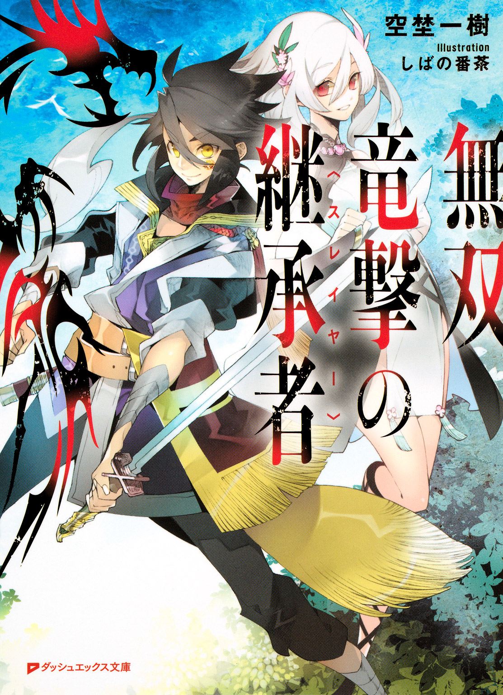
この本は縦書きでレイアウトされています。
また、ご覧になる機種により、表示の差が認められることがあります。
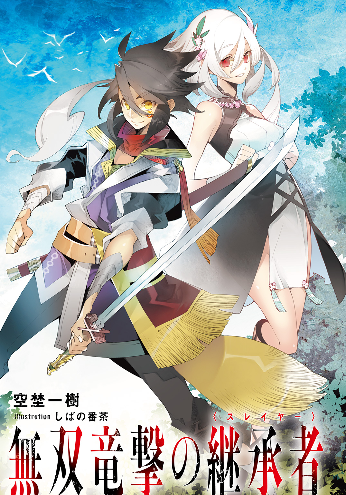
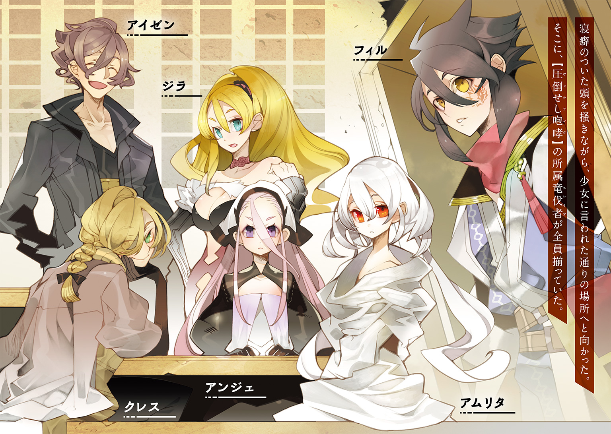
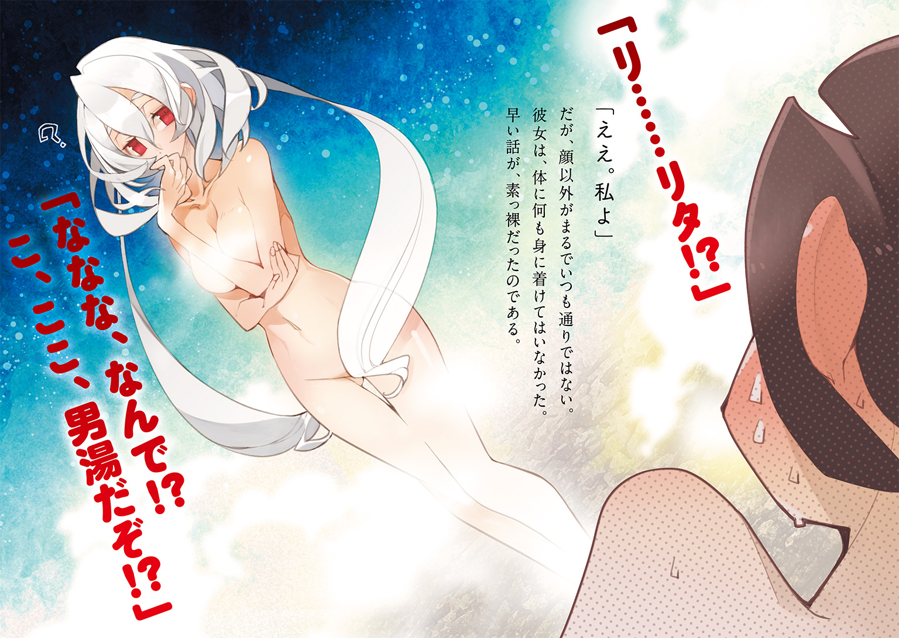
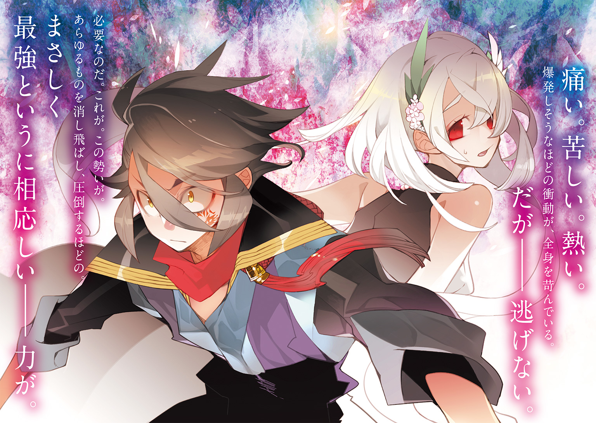
 ダッシュエックス文庫DIGITAL
ダッシュエックス文庫DIGITAL
無双竜撃の継承者
空埜一樹
序章 敵対する者達
村が燃えていた。
絶え間なく破壊が続き、全てを震撼させるかのような轟音が鳴り響く。
少年が暮らしてきた小さな世界は禍々しい紅蓮に支配され、かつて静寂であった場は、むごたらしいまでに蹂躙されていた。
不意に、なにかが裂ける音と共に、木々が次々と倒れていく。
闇の奥から次々と、異形どもが現れ始めた。
生え揃った鱗。長々と伸びた尾。巨大な体。強靭な顎。殺戮の本能に満ちた眼。
あらゆるものを憎み、喰らい、亡き者とする存在。
――【竜】と、呼ばれる者達が。
「......あ......ああ......」
圧倒的なまでの畏怖を目の当たりにして、少年はあまりに無力だった。ただただ怯える他に術を持っていなかった。
震える膝は瞬く間に力を失い、無様に地面へとつく。
その時、涙で滲む視界に、巨大な影が差した。
仰いだ先にいた竜が、少年を見下ろしている。
声すら出なかった。喉の奥がひりつくように痛んだ。
突如として、竜が、猛々しく吼えた。
少年の体が竦み、硬直する。
もうダメだ。このまま食べられてしまうのだ。絶望に暮れ、何もかもを諦めた。
そうするうち、竜の顎が、ゆっくりと開いていき――。
再度の咆哮が、何処までも遠く響いた。だがそれは威嚇の意味を孕んだものではない。
断末魔の叫びだった。
竜の体から、剣の切っ先が突き出ている。
やがて、鈍い音と共に竜は地に倒れ、微動だにしなくなった。
突然の事態に思考が追いつかず、呆然としている少年の目の前に、誰かが近づいてくる。
巨大な剣を持った男だった。吹き荒ぶ風に身に纏ったマントがなびき、まるで翼であるかのように膨らんでいく。
――一体誰なのか。
少年は声を掛けようとしたが、叶わなかった。
男が前を向き、地を蹴ったからだ。同時に目にも止まらぬ速度で駆け抜けると、彼は二匹目の竜を、いとも容易く切り裂いた。
更に返す刀でもう一匹を仕留めると、跳躍して三匹目を両断する。
まさに疾風と呼ぶべき動きだった。男は鉄塊のような剣をまるで木の枝であるかのように軽々と振るい、次々と脅威であるはずの竜を容易く打ち倒していく。
気がついた時、少年の周囲にあれだけいた竜は、一匹残らず駆逐されていた。
男は顔色一つ変えず、剣を振るうと、こびりついた血を散らす。
「大丈夫か？」
男が振り返って尋ねてくるまで、少年は息をすることも忘れたまま、彼の戦いに魅入られていた。少年が急ぎ頷くと、男は剣を鞘に仕舞いながら近づいてくる。
「あ、あなたは......」
掠れた声を必死に絞り出しながら、少年は問いを投げかけた。
「――あなたは、【竜伐者】ですか？」
男は静かに佇んでいる。
やがて、彼の口元に、薄らと笑みが浮かんだ。
第一章 竜伐者という存在
リグア大陸の南端、大都市アーセントリアより少し離れた場所に、その屋敷はあった。
規模は大きいがかなりの年代物らしく、建物全体が少し斜めに傾いている。加えて壁には蔦が生い茂り、屋根は所々穴が空いていた。
「ここが教えてもらった【猟兵】の――いや【竜伐者】の住んでいるところか......」
フィル＝ジークスは扉の前に立って呟き、腰に下げた己の得物を摑んだ。頑丈な糸によって丹念に編み込まれた柄と、装飾の施された鍔。鞘に収まっているのは、わずかに反りをもった片刃の剣身だ。
刀と呼ばれるやや特殊な形状をした得物で、愛剣だった。これを握っていると、なんとなく、安心出来るような気がするのだ。
フィルは深呼吸をし、空いた方の拳を振り上げる。
「すみませーん！ すみませーん！」
何度か扉を激しく叩いた。そのまましばらく待つ。......が、応答はなかった。
「む。留守か？ すみませーん！」
もう一度繰り返しながら、扉に耳を近づけてみる。人のいる気配はなかった。
出直すべきだろうかと思いながら、なんとなく扉のノブを握る。すると――意に反して鈍い音を立てながら、簡単に回った。
（......あれ、いるのか？ 仕方ない。中に入って確認してみよう）
人がいれば事情を説明すればいい、と考えながら、フィルは建物の中に足を踏み入れる。
「うっ......く、くさっ！」
慌てて鼻を押さえた。独特の臭気が漂っている。
一体なんだろうと思いつつ、そろそろと足を進めた。
広々とした部屋には暖炉と台所が備えつけられており、机や椅子、食器棚など、一通りの家具は揃っていた。
室内はそれなりに整頓されていて食べ物なども放置されておらず、どうやら、匂いは奥の部屋から漂ってきているようだ。
一体なにが待ち受けているのかと、フィルは中を覗いてみる。
寝室のようだった。寝台に小さな鏡台、それに服を仕舞う棚が一つずつ。
が、中でも最も目を引いたのは、そこら中に転がった酒瓶だった。
果実酒から蒸留酒、麦酒に蜂蜜酒といった、ありとあらゆる種類の瓶が床を埋め尽くしている。しかも見たところ全て中身が空になっていた。
何故こんなことになっているのかと、視線を動かしたところで、フィルは全てを悟る。
ベッドの上に、女性が一人、転がっていた。
片手にまだ三分の一ほど残っている葡萄酒の瓶を握り締めていて、大口を開けながら、幸せそうに眠りこけている。
恐らく彼女がこの部屋にある全ての酒を飲み干したのだろう。恐ろしいほどの酒豪である。見れば鮮やかなまでの金色の髪が似合う、端整な顔立ちをしているのだが、あまりにだらしのない姿が全てを台無しにしていた。
そこでフィルはようやく気付く。先程からこの建物中に充満しているのは、アルコールの匂いだったのだ。
「すみません、ちょっといいですか！」
声をかけてみた。が、女性は全く目を覚ます様子がない。それどころかかすかにいびきをかいている。おまけに口から涎を垂らしていた。
「すみません！ いいですか！ ここに住んでいる人に用があるのですが！」
更に声を大きくしてみる。すると、女性が「ん、ん......」と身動ぎした。良かった、どうやら起きたようだ。
「もう飲めないわよ......え？ ああ、それならまだいける......うん、自分を信じてみる」
と思ったら、ただの寝言だった。しかも、これだけ飲んでいて夢の中でもまだ酒を摂取しようとしている。
「これはダメだな......完全に泥酔している」
他の誰かを探してみた方が良さそうだ。そう思って女性に背を向け、フィルは一歩踏み出した。途端に、ぎし、という、鈍い音が鳴る。
傷んだ床板が軋んだのだろう。これだけ古い家だ。そんなこともあるだろうと、フィルは何気なく思った。が、
「【颶風の竜】」
その時、声が聞こえたかと思うと――背筋が、ぞくりとした。
己の首筋に、何か冷たい物が当たっているのを感じる。
恐る恐る視線を下げてみると、白く細い指先が見えた。
しかし素手ではない。上から何かが覆っている。
鈍い光を放つ、短い剣だった。どうやら手甲か何かの上に刃だけを取り付けた武器らしい。
慎重に前を向いた。
「昼間から泥棒とは、中々やるわね」
そこには、金色の髪を持つ人物が立っている。
間違いない。先ほどの女性だった。だが、おかしい。ありえるはずがない。
確かに、ほんの少し前まで、彼女は自分の後ろで寝ていた。
（なのに......気づけば、回り込まれていて）
真っ直ぐに向けられた刃の先端に、狙われている。
一体、なにが起こったのか。移動する気配すら、感じることが出来なかった。
「ただ、盗むにしても場所は選んだ方がいいんじゃない？ ここがどこか知ってるの？」
前髪を搔き上げながら、女性が問い質してくる。
「......竜伐者の......【巣穴】です」
かろうじて答えることが出来た。だが微動だに出来ない。
わずかでも何かをしようとすれば、即、女性はこちらの喉元を切り裂くだろう。
理由もなく、そんな確信が湧いた。
「へえ、知ってて入ったってわけ。面白いわね。よほど自分の強さに自信があるのかしら。それともオツムが残念なだけ？」
言いながら、女性は口元を薄らと歪める。
魅力的ではあるが、同時に冷たさを感じる笑みだった。
「違います！ 俺は盗みに入ったわけではありません！」
「今度は言い訳？ 勝手に家に上がり込んできて、さすがに苦しいと思うけど」
「いやそれは、鍵が開いてたからでして！」
「噓つくんじゃないの。扉にはしっかり鍵をかけたはずだわ」
「ええ!? いや、そんなことは......と、とにかく、無遠慮な真似をしたのは謝ります。でも、話がありまして！」
「話？ 話ってなによ。冥土の土産に聞いてあげるから言いなさい」
「死ぬの前提ですか！ ああ、もう、くそ！」
埒が明かない。フィルは密かに足を下げてわずかな距離を取ると、素早く己の腰から刃を抜き払った。
中空に片刃の剣身が煌めき、相手の武器を拳ごと弾き飛ばす。
「すみません！ 出直してきます！」
出来た隙を見逃さず、体勢を低くして女性の傍を駆け抜けた。
「あ、逃げた！ こら、待ちなさい！」
背後からの制止を振り切り、そのまま部屋を出ようとしたが、
「姐さん、ジラ姐さん、いるんですか？ 言われた物買ってきましたよ」
外から声がしたかと思うと、目の前の扉がいきなり開いた。
こちらと同じ歳くらいの青年が立っている。まだ幼さの残った横顔には頰の辺りに小さな傷があり、少し吊り気味の目と合わせて、どこか悪戯っ子そうな印象を醸し出していた。
栗色の髪を無造作に切って首のところで小さく纏めており、革製の上着と布ズボンを身に着けている。
「ん？ あれ？ お前誰だ？」
「ああ、クレス、丁度良かった。この無謀な犯罪者を縛り上げるから手を貸しなさい」
きょとんとしている青年に、背後の女性が指示を出す。
「違います！ 生まれてこの方、罪なんて犯したことはありません！」
フィルは誤解を解こうとしたが、女性は聞く耳持たない。
「犯罪者は皆そう言うのよ！ クレス、早くして！」
クレスと呼ばれた青年は、状況がよく分からないというように眉を顰めていたものの、やがて、
「分かったっす。おとなしくしろよ」
軽薄そうな口調で言って、手を上げた。甲に、紋様のようなものが彫られているのが見える。
「【翠意の竜】！」
なにかの宣言をして、クレスが指を鳴らした――直後。奇妙な現象が起こった。
床や天井、壁から植物の蔓のようなものが現れたのだ。
それらはまるで意思があるかのように素早く伸び、こちらの体に纏わりついたかと思うと、あっという間に縛り上げてきた。
「ああ！ しまった！ なんだかよく分からないけど拙い状況だ!?」
焦って逃れようとしてみたが、まるで体が動かない。
「フフフ。私の手から逃れるとは中々やるわね。でもここまでよ。観念しなさい、この強盗犯」
回り込んできた女性が、腰に手を当てて不敵に笑った。
「だから違います！ 知らない間に罪状重くなってるし！」
不思議な現象を起こしたクレスは、しばらく必死に叫ぶこちらの様子を眺めていたものの、不意に女性の方へと視線を移す。
「ところでジラ姐さん、また玄関の鍵開いてたっすよ。しっかりしてください」
「あなたまでなに言ってるのよ。ちゃんと閉めたわよ」
「前もあったの忘れたんすか。姐さん、酔っぱらうと開放的になってあらゆるところの施錠を解除しまくるじゃないですか」
「............そうだっけ？」
ゆっくりと首を傾げたジラと呼ばれた女性に、クレスは「そうっす」と軽く頷いた。
「そう......だったかもしれないわね。そういえばそんな記憶が微か遠く彼方のお空にあるような、ないような気がしないでもないわ......」
「姐さん、毎回記憶飛ぶほど吞むの止めた方がいいっすよ」
渋い顔をするクレスに、ジラはちらりとこちらを見る。なんとなく気まずそうだった。
「......えーと。もしかして、盗人じゃない？」
「だから言ってます！ さっきから！」
「あらまあ。ごめんね。いやそう言われてみれば善良そうな顔してるわ」
あはは、と笑いながらジラは手を振った。音を立てて、刃が手甲の中に収納される。
「褒めていただきありがとうございます！」
「別に全く褒めてはないんだけど。クレス、解いてあげて」
「いいんすか？」
「うん。こっちの不注意だったみたいだから。てへっ」
片目を瞑り、舌を出すジラに、クレスは「そんなことだと思ってたっすよ......」と苦笑しながらもう一度指を鳴らした。
こちらの体を拘束していた植物の蔓が、するすると解けていく。
「......やれやれ。どうなることかと思った」
解放感にフィルは安堵の息をついた。
「ところで、盗人じゃないなら、あなた誰なの？」
ジラが首を傾げる。ようやく本題に入ることが出来そうだ。フィルは姿勢を正した。
「はい！ 申し遅れました。自分、フィル＝ジークスといいます！」
思い切り息を吸い込み、大声と共に吐き出した。
「この巣穴――【圧倒せし咆哮】に、竜伐者として所属させてもらいたいのですが！」
「分かったわ！ 帰りなさい！」
「ありがとうございました！」
深々と頭を下げて、フィルは部屋を出ていく。
「って、うおおおおおおい！ 違います！ 帰れません！」
大きな間違いに気づき、慌てて引き返した。
「まずいわね。この子面白いわ、クレス」
「遊ばないでくださいよ......」
ジラがケラケラと笑うのに、クレスが頭を搔く。
「で、あなた。竜伐者ってなにか知ってるの？ いや、その前にまずは猟兵の説明からかしら」
腕を組んだジラが、改めてといったように話しかけてきた。
「はい！ もちろん！ 猟兵とは、猪や狼など、人に害を為す獣を退治する者達の総称です。が、その中でも竜伐者と呼ばれる者は、一際特別な存在とされています！」
それは、彼等が通常とは違い、ある存在の狩猟を専門に請け負っているからだ。
即ち。
「【竜】を討伐する存在――それが、竜伐者です！」
「ふむ。よろしい。では、竜とは？」
「数ある獣の中でも最も強く、恐ろしい種族。並大抵の猟兵では敵いません！」
「そう。だから竜伐者は猟兵とは分けて呼ばれてるわけね。......で、質問なんだけど。あなた、それを知ってもまだ竜伐者になりたいっていうの？」
「はいっ!!」
「なるほど。分かったわ。帰りなさい！」
「ありがとうございました！」
深々と頭を下げ、フィルは部屋を出ていく。
「って、うおおおおおい！ 二度目えええええ！」
再度、大きな間違いに気づき、急いで引き返した。
「まさかもう一回引っかかるとは。逸材ね、この子」
「ジラさん、真面目に聞いてやってくださいよ」
腹を抱えて笑い転げているジラを、クレスは仕方なさそうに見る。
「分かったわよ。......あのね。フィルって言ったっけ。あなた、さっき自分で言ってたけど、竜伐者って危険な仕事なのよ。腕の立つ猟兵ですら、竜を前にすれば無力な赤ん坊みたいになってしまうこともある。それを分かってるの？」
「はい！ 分かってます！」
「返事は元気良いけど説得力ないわねえ。大体、竜伐者はそういう事情から、猟兵になってしばらく経った人間にしかなることが出来ないのよ。最低――五年くらいかしら」
「五年!? そんなにかかるんですか！」
初耳だった。思っていた以上に長い年数だ。
「そういうこと。だから諦めなさい」
手をひらひらと振るジラ。しかし、フィルは首を横に振った。
「そ、そこをなんとか！ 俺、どうしても竜伐者になりたいんです！」
「......なんでそんなになりたいんだよ？ 正直、実入りはいいけど楽な仕事じゃねえぞ」
懸命に訴えかけるフィルに、クレスが怪訝そうな眼差しを送ってくる。
「それは知ってます。だけど俺は竜伐者になって、竜に苦しめられている人を助けたいんです。昔、俺を助けてくれた人みたいに！」
「へえ。竜伐者と会ったことあるの」
ジルが興味を惹かれたように片眉を上げた。
「ええ。実は子どもの頃、俺の村が竜に襲われたことがあったんです。大人たちも皆やられてしまって、もうダメかって思った時に――たった一人の男の人が、全ての竜をやっつけてくれました」
「......そいつはすげぇな」
感心したように、クレスが唸る。
「いくら竜伐者とはいえ、竜を相手にする時に単独で挑むのは無謀だ。大抵は数人で組む」
「そうなんですか？」
「ああ。その竜伐者の集まりを【団】って呼んで、連携を高めるために一つの建物で共同生活をするんだ。それがお前が今いるここ。俺たちは巣穴って呼んでるけどな」
「......なるほど。勉強になります」
フィルは深々と頷いた。竜伐者になるには、彼等が暮らしているところに行って所属を認められなければならない、とは聞いていたが、そういう事情であったとは。
「たった一人で竜を倒すなんてほとんど人間業じゃないわね。......そういう奴を知らないわけじゃないけど」
ぼそりと言ったジラに「え？」と顔を向けるが、彼女は首を横に振るだけだった。
「ま、とにかく。あなたの事情は分かったわ。それで竜伐者になりたいと思ったのね」
「はい！ その人に後日、自分もあなたのようになりたいと伝えると、心身を鍛えて時を待てと言われました」
フィルは腰の得物を握った。これは、その時に村を救ってくれた竜伐者から貰ったものだ。彼はそれからすぐに、『待っているぞ』という言葉を残し、何処かへ去ってしまったのだが。
「言われた通りに鍛錬に鍛錬を重ねているうちに、十年が経ちました。よって、そろそろ機は熟したと、村を出たわけです！」
「ふうん。そういうこと。把握したわ。ただ......ちょっと竜伐者になるには早過ぎたみたいね」
ジラがこちらの要請を断る素振りを見せたので、フィルは急いで告げる。
「待ってください！ 確かに、竜伐者になるのには時間がかかるとは、他の幾つかの団に断られた時、話を聞いて知っていました。五年というのは予想外でしたが......ただ、ここは特別だと聞いて来たんです」
そのまま、ずい、と前に出た。
「アーセントリア郊外にある竜伐者の団――【圧倒せし咆哮】は、経験のない者でも竜伐者として迎え入れる、と」
クレスを指しながら、
「彼も俺と同じ歳くらいに見えるのに、竜伐者をやっているじゃないですか。そういうことではないんですか！」
「......やれやれ。すっかり広まっちゃってるわね」
ジラがこれみよがしに溜息をついた。
「確かに――その通りよ。うちは未経験者でも所属を許すことがあるわ。団長......団を取り仕切ってる人間の考えでね。だけど、全員じゃない」
「なにか資格が要るんですか？」
「資格と言うより、覚悟ね」
そこで、ジラはクレスの方を向く。
「クレス、アンジェは？」
「オレと一緒に帰ってきたっすよ。貯蔵庫に買ってきた食料仕舞うって言ってました。そろそろ戻ってきてるんじゃないっすか？」
「お酒はある？」
「ええ、でも、まだ飲むんすか。いい加減、体壊しますよ」
「もうこれ以上壊れないから大丈夫よ」
「安心する要素がどこにもねえっす」
掛け合いをしながら出ていこうとする二人。
「待ってください！ 話は終わってません！」
フィルは駆け寄ってジラの手を摑もうとしたが、その直前、彼女は顎先を軽く上げた。
「分かってるわよ。ついてきなさい」
そのまま部屋を出ていくジラの背を、フィルは追った。
彼女が向かった先は居間で、そこにある机には、先程までいなかった人物が座って紅茶を飲んでいた。
ゆったりとしたローブを身に纏った少女だ。腰の辺りまで伸びた赤みがかった髪が特徴的で、ぱっちりとした目と尖り気味の口が、気の強そうな印象を与えてくる。
「ああ、ジラさん。寝ていたんですか。紅茶を淹れましょうか......あら、どちら様です？」
ジラに声をかけたアンジェは、後ろにフィルがいるのを見て少し目を見開いた。
「気にしなくていいから。それと、紅茶じゃなくてお酒頂戴。あの、あれ、この前あなたが買ってきた檸檬のやつある？ あれ美味しかった」
「ありますけど駄目です。ジラさんは最近、飲み過ぎです」
「飲み過ぎかどうかはあたしが決めるのよ。持ってこないとひどいわよ」
「なにする気ですか......」
「おっぱいで顔挟んで息止めるわよ」
自信満々に胸を張るジラ。確かに彼女の乳房はかなり大きかった。比べると、アンジェのそれは率直にいって、いささかに貧しい。
「前から思っていましたけど、品のない言葉はお止めになってください。ジラさんは綺麗な顔立ちをされているのに、どうしてそういうことを平気で口に出来るんですか」
「それがあたしの長所だからよ」
「長所の意味をもう一度、確かめてください」
半眼になってジラを睨みつけると、アンジェは視線をこちらへと向けてきた。
「それより、その方、うちに入れるんですか？」
「まあ、ちょっと話だけしてみるわ。お酒頂戴ね」
「ダメです」
「おっぱい」
「ダ・メ・で・す」
アンジェが言葉を区切って言うと、ジラは唇を尖らせ「ケチ」と短く返してから、近くにあった椅子に腰かけた。
「そこ、座って」
フィルが指差された椅子に座ると、ジラは体をこちらに向け、腕を組んだ。
クレスは壁にもたれかかり、こちらの様子を見ている。
「まず最初に、あなた、竜伐者が危険な仕事だと分かっていると言ったわね」
「はい！ もう、完璧に！」
「時に命を落とすこともあるってことは？」
「当然、そういうこともあると思います！ でも俺は――」
「じゃあ、時に命を落とすって、どのくらいの割合だと思う？」
こちらの主張を遮り、ジラが首を傾げた。
「......知りません」
「そうよね。竜伐者の華々しい活躍や功績は皆が話題にするから嫌でも耳に入ってくるけど、そういう暗い話は避けがちだから。じゃあ、教えてあげる。よく覚えておきなさい」
ジラの持つ水色の瞳が、フィルの姿をおぼろげに映す。
「毎年、あなたみたいに竜伐者になりたいって人間が大勢、あちこちの巣穴を訪れる。その数は正確には分からないけど、少なくとも、百人以上。皆、猟兵として十分な経験を積んだ存在で、そこらの獰猛な獣にだって負けることはない。......だけどね」
一旦言葉を切ってから、ジラは続けた。
「ほとんどが、団に所属してから数カ月以内に死んでいるわ」
「......具体的に、どのくらいでしょう？」
「志望者総数の八割以上。つまり、二割弱程度しか、一年の壁を超えられる新人竜伐者はいないということよ」
息を吞んだ。予想よりも遥かに低かった。
「時に命を、なんて言い回しをすると、大抵の人は心の何処かでこう思う。『だけど自分は大丈夫だろう。きっと生き残ることが出来るはずだ』って。だけどね。百人いれば八十人が死んでいるの。確実に何処かで、竜の餌食になってね。それがあなたではないという保証は、何処にもないのよ」
ジラの声音はあくまでも軽い。だが含まれた響きはどこまでも深刻だった。
「ウチは確かに団長の方針で、経験がなくても受け入れる。実際、クレスだってアンジェだってそうだった。だけどそれは、未熟者でも戦えるということではないの。『入ってもいいがどうなっても知らない』ということなのよ。ある意味、あなたを断ったどこの団よりも酷いかもしれないわ」
こちらに向けられるジラの眼差しは、全身を射貫くほどに強い。
「それでもこの職をやろうという、その覚悟が――果たして、あなたにあるのかしら」
生半可な言葉では決して許されない。
そんな雰囲気が、肌を突き刺していた。
だからこそフィルは俯き、拳を握ると、小さく言う。
「......燃えてきました」
「へ？」
ジラが目を丸くした。フィルは口端を上げながら、堂々と言い放つ。
「超・絶・燃えてきました！ そうでなくてはいけません！ それくらい厳しくなければ一生の仕事にする価値などありません！」
「いや、あなた、分かってるの？ 死ぬのよ？ 死んだらどうなるか分かる？」
「知りません！ 死んだことないですからっ!!」
「なるほど間違ってはいないわ！ でもあなた、もしかしてバカね!?」
頭を抱えるジラに、フィルは目を瞬かせる。
「俺、なにか変なこと言いましたか？」
「変じゃねえけど普通じゃねえのは確かだな」
しみじみとクレスが言った。
「......どうしても竜伐者になりたいの？ 普通の猟兵じゃダメなわけ？」
「はい！ 俺はなんとしても、自分を助けてくれたあの人のような、竜伐者になりたいんですっ！ お願いですから、ここに入れてくださいっ！」
フィルは椅子を蹴立てて立ち上がると、勢いよく頭を下げる。
「......決意は固いみたいね」ジルは額に手を当てながら、悩ましげな表情を作る。「まあ、頭がアレなのはどうであれ、本気なのは理解出来たけど。ただ、実はあたし、うちの主義には微妙に反対なのよ。いくらなんでも無茶が過ぎるしね」
「そうなんですか？ でもクレスさん達は？」
「この子達が入ってきた時は、うちも人数が少なくてね。やむを得ずというところもあったわ。だけど、幸いなことに二人ともよく育ってくれて、戦うには今の仲間だけで充分だから」
「でも、団の主義はジラさんが決めたことではないんですか？」
「あたしは副団長よ」
「じゃあ、その団長さんは？」
「さあ。朝にはいたけど。クレス、知ってる？」
ジラから尋ねられたクレスは、しばらく思い出すように視線を上げていたものの、やがては首を横に振った。
「いえ。買い出しに出た時には庭で鍛錬してたっすけど」
「ふうん。どこほっつき歩いてるんだか」
少し機嫌が悪そうにジラが言い放った途端、まるで待っていたかのように、地響きが建物を揺るがした。
「む......なんだ？」
地震かとフィルは身構えたが、他の三人はまるで平気な様子である。
アンジェが紅茶を飲み干すと、席を立った。
「どうやら帰ってきたようですね。出迎えに参りましょうか」
「なんとなく、何してきたか予想はついたけどね」
嘆息混じりにジラもまた腰を上げ、こちらに向かって指を振る。ついてこい、ということだろう。
意味が分からずきょとんとしていたフィルだったが、三人と共に家を出たところで、愕然と立ち尽くした。
眼前に、緑色をした巨大な何かが横たわっている。
全身はびっしりとした鱗に覆われ、長い尾が延々と遠くまで伸びていた。
背中から生えているのは蝙蝠にも似た翼で、しかし今は、力を失くしたようにだらりと垂れさがっている。
視線を移動させていくと、そこにあるのは、大人の体ほどもある頭蓋だ。
鋭い目と、尖った顎を持ち、口からはびっしりと生えた乱杙歯が並んでいた。
生気を失った目は、血のような赤色の瞳を宿している。
既視感がフィルの脳を刺激し、おぼろげな記憶を蘇らせた。
「これは――竜」
かつて見た光景が過ぎり、自然と口から零れ落ちる。
ただし、生きてはいない。濁った眼球は既に光を失っており、完全に息の根が止められていた。
「こら、アイゼン！ あなた、また一人で竜を狩りに行ったわね!?」
ジラが大声を張り上げる。すると、竜の巨体の上に、ひょいと誰かが乗った。
「うん、気晴らしにね。でも大した奴じゃなかったよ」
鳶色の髪をもつ青年で、口元には穏やかな笑みが浮かんでいる。
鎧に覆われた体は引き締まっているものの、ガタイが良いというわけではなく、おおよそ荒事には向いてなさそうな印象を受けた。
だがアイゼンと呼ばれた青年の手には、彼の身の丈ほどもある、無機質な輝きを放つ大剣が握られている。
アイゼンはそれを軽々と持ち上げると、肩に担いだ。
（似ている......）
フィルは即座に思った。あの時、自分を助けてくれた人に、と。
「竜を一人で倒したんですか......聞いていた話と違います！」
次いで、フィルが思わず叫ぶと、アンジェが複雑そうな顔をした。
「先程あなたの話を聞いてクレスが言っていましたが、普通は無理ですよ。あの方は特別です。何せ、若くして業界でも一、二を争うほどの実力をもつ竜伐者ですから」
「すげえだろ。あの人がうちの団長、アイゼン＝トールさんだぜ」
クレスが誇らしげに鼻の下を擦った。
「か、格好いい！ 超格好いいですっ！」
多大な感動に、フィルは胸が熱くなった。
「あのねぇ、アイゼン。単独行動は危ないからやめなさいって何度も言ってるでしょう。何かあったらどうするの？」
注意するジラに、アイゼンは「あっはっは」と朗らかに笑った。
「その時は死ぬだけだよ」
「明るく言わない！ いいから降りてきなさい！」
ジラから指を突きつけられ、アイゼンが「はいはい」と軽い調子で返事をしながら跳んだ。鮮やかな軌道を描いて着地した後、大剣を地面に突き刺し、皆を見回す。
「クレス、アンジェ、ジラ、ただいま。いやぁ、いい汗かいたよ」
「さすがっす、団長。痺れるっす！」
「雷にでも撃たれたの？」
涙を零さんばかりに感動しているクレスへ、アイゼンは素っ頓狂な返しをした。
「これは刺撃種ですね。厄竜の中でも比較的、倒しやすい相手です」
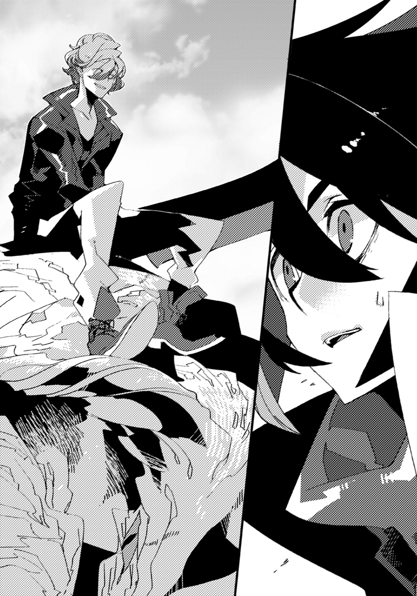
アンジェが竜の腹に手を当てながら分析する。
「うん、そうだね。割と簡単だったよ」
「......まあ、とはいえ、一人で戦えるものでもありませんが」
吞気に告げるアイゼンに、アンジェは呆れつつ、
「取り敢えず解体業者に連絡してきていただきましょう。ブランタンの血は良い色の染料になります。高値で売れると思いますよ」
「それはいいね。今日は美味しいものが食べられそうだ」
嬉しそうに返した後で、アイゼンがこちらの存在に気づいた。
「あれ、誰？」
「入団希望者だそうよ。ただ、ちょっと迷ってるんだけど」
ジラが説明すると、アイゼンは「そうなんだ」と相槌を打った後で、
「名前は？」
「フィルです！ 誰よりも強い竜伐者を目指して邁進中です！」
「いい決意だ！ これからよろしく！」
「はい、よろしくお願いします！ って、え、合格ですか!?」
「うん、いいよー」
「よくない！ 簡単に決めないで！」
あまりにもあっさり入団を受け入れたアイゼンに、ジラが食って掛かる。
「え、どうして？ うちの方針は来る者拒まずでしょ？」
「やるにしても熟考は重ねるべきよ！ 何も考えずに誰でも入れたら危険でしょ！」
「でもクレスもアンジェも良い竜伐者に育ってくれたよ」
「あくまでも結果論でしょ！」
「大丈夫大丈夫。なんとかなるよー」
「確実に保証の出来ないことは言わない！」
「ジラ......この世に確実に保証の出来ることなんて、なにもないのさ！」
「腹立つわねそのしたり顔！」
手を伸ばし、ジラがアイゼンの頰をつねる。
思い切り引っ張られたが、アイゼンは「あははは、痛いよ、ジラ」とまるで痛がっていない様子で言うだけだった。
「だってうちに入りたいって言ってるんだから、入れてあげればいいじゃないか」
「その通りです！ さすがです！ 団長！」
フィルはアイゼンに憧れの目を向けた。
「あなた、そうやってクレスもアンジェも済し崩し的に所属させたんでしょ......団を設立したばっかりであたしも選択肢がなかったから、渋々承諾したけど」
「じゃあ、フィルだってなんとかなるってことだよ」
「だからそれはたまたま上手くいっただけで......ああ、もう、この男は！」
堪えきれないものがあるかのように、ジラは手を戦慄かせた。
「......二人はとても親しいようですが、お付き合いされて長いんですか？」
独特のノリを奇異に思ってフィルが尋ねると、傍にいたクレスが頷く。
「ああ。団長と姐さんは幼馴染なんだけど、昔からこうだったらしい。前に姐さんが愚痴ってた」
「そうですか。仲良きことは美しきかなですね！」
「愚痴を零しているのだから、美しいかどうかは分かりませんけど」
アンジェが引きつったような笑みを浮かべた。
「まあ、とにかく。試験くらいはやらせてあげようよ。それで改めて判断するってことで」
「だけど......！」
「いいじゃないか。試すだけ試したら。もしダメなら納得して帰るだろ？」
アイゼンが諭すと、ジラは迷うような素振りを見せる。
だが、しばらくすると、溜息を零した後で「......仕方ないわね」と承知した。
アイゼンは満足そうに顎を引くと、こちらへとやってくる。
「待たせたね。フィル。うちは相手が誰だろうと所属したいというのなら受け入れるよ。でも、一つだけその前にやってもらうことがあるんだ」
「やってもらうこと、ですか？」
「うん。ただ、これはうちに入るというよりも、竜伐者になるための絶対条件と言っていいね。これが無理なら諦めた方がいい」
「......分かりました！ なんでしょう。なんでもやり遂げてみせます！」
せっかく機会が巡ってきたのだ。及び腰になっている場合ではないと、フィルは声を張り上げる。
「良い返事だ。じゃあ言うよ。今からこの近くにある森に行ってほしい」
アイゼンが目を細め、わずかな笑みを湛えた。
「君はそこで――『聖竜との契約』を結ぶんだ」
森は、不気味なほどの静寂に包まれていた。
鬱蒼と茂る木々が頭上を遮っているせいで、陽の光すらもまともには届かない。
加えて雨でも降ったのか、地面は柔らかく、粘っこい湿気が立ち込めていた。
「ここに竜がいるのか......」
フィルは独り言を口にしながら、歩き続ける。
緊張と期待に高鳴る鼓動を、抑えつけることが出来なかった。
当然だ。なにせ、これから――自分が竜伐者となるに相応しいかどうかを、試されるというのだから。
『竜と戦うにおいて必要とされることは、二つあるんだ』
巣穴を出る前、アイゼンはそう言った。
『一つは武器を持つこと。と言っても市場に流通しているような普通のものじゃない。竜装と呼ばれる、竜と戦う為に造られた特別の得物だよ』
これに関しては、フィルもまた知るところである。
何故なら、かつての命の恩人から渡されたこの刀もまた、竜装であると教えられていたからだ。
銘を、【竜牙刀・叢】。
後に見識ある者に見せて判明したことだが、竜の骨を芯として、様々な種類の鉄を組み合わせて鍛え上げられた代物らしく、恐ろしいほどの強度と切れ味をもっていた。
『ただ、竜装はいくら強くても所詮は人の生み出した道具に過ぎない。凶暴な竜を相手にするにはもう一つ、人ではない『力』がどうしても必要になるんだ』
それが、【契約】と呼ばれる儀式だった。
『竜と一口に言っても様々な種族がいるんだけど、大別すると二つに分けられる。つまり、【厄竜】と【聖竜】だ』
アイゼン曰く、前者が竜伐者にとっての狩猟標的――無条件に人を襲い、血肉を喰らう生き物であるという。
『だけど後者は違うよ。聖竜は知性を持ち、人の言葉を喋り、争いを好まない。加えて、条件次第で自らの力の一部を貸し与えてくれるんだ』
理由は未だ分かっていなかった。聖竜たちはほとんど何も語らないからだ。
ただ、彼等にとっても厄竜があまり好ましからぬ存在であることは確かのようだった。
『聖竜から出された条件を満たし、力を借り受けることを、僕達は契約と呼んでいる。これを以て初めて、竜伐者は竜伐者足り得るんだ』
竜の力を以て竜を討つ――。
にわかには信じ難いことではあったが、事実、全ての竜伐者はそうした上で活動をしているらしい。
条件とは何か、とフィルは尋ねたが、アイゼンは答えてくれなかった。
いや、答えられなかったという方が正しい。
『聖竜によって条件の内容は様々なんだよねえ。恐ろしく簡単なものもあれば、かなり難解なものもある』
更に言えば、同じ聖竜であっても、人によって、時期によって違ってくるらしい。
だから、予想できないのである。
「一体、なにをさせられるのか......いや、どんなものであろうと竜伐者になれるのであれば、望むところだ！ やるぞおおおおお！」
一人で森を探索しながら大声を張り上げると、どこまでも響いていった。
「......しかし、契約の力か」
ふと思い出すのは、クレスとジラが巣穴で起こした現象のことだ。
一瞬で後方から前方に移動し、何もないところから蔓のような植物を出現させる。
もしあれがそうなのだとしたら、凄まじい能力だ。
「俺も頑張って、ああいうのを手に入れるぞ......！」
フィルは気合いを入れる為、自分の頰を叩いた。
そうしているうち、目の前に一際大きな木が立っているのを確認する。
アイゼンに聞いていた通りだった。この森にいる聖竜の棲み処を見つけるための目印だ。
恐らくは近くにいるはず、と視線をあちこちに飛ばしてみた。
すると、遠くの方で何かの影が聳えているのが見えた。
「あれか......」
アイゼンの話によれば、この森の聖竜が出す条件は比較的簡単なものが多いらしい。
更に言えば、契約自体は後で他とやり直すことも出来るということなので、初心者には丁度いいというのだ。
だが、それでもやはり、竜は竜だ。
どんな相手が現れるのか、少し不安のような、楽しみのような、妙な気持ちだった。
木々や草むらを搔き分けながら進み、やがて、フィルは影のあった場所へと辿り着く。
――やがて。
「......え」
意外なものを、目にすることとなった。
先程、アイゼンが持ち帰ってきたのと同じ、巨大な体がある。
違うのは色が黄土色をしているのと、鱗がなくて滑らかな肌をしていること。
胴体が長く太いが、四肢や尻尾が意外なほど短いことだ。
尻尾と小さい羽が生えており、長い鼻が妙に目を引いた。
間違いなく、聖竜である。アイゼンから聞いていた特徴とも一致していた。
だが、問題が一つある。
全く以て、動かないのだ。
最初、フィルは眠っているのかと思った。
しかし、少しずつ近寄っていくにつれ、そうではないことに気がつく。
聖竜の目は大きく見開かれていた。白く濁った眼球に、体表と同じ色の瞳孔が虚空に向けられている。
少し迷ったが、意を決し、そっと手を伸ばしてみた。
掌に硬い感触が伝わり、ぐっと押し込むと、微妙な抵抗感がある。
「冷たい......」
全くといっていいほど、体温が伝わってこなかった。
まさか、と思う。だが、もはや疑いようがない。これは――。
「――死んでる」
亡骸と化している。
「一体、なにがあったんだ......？」
眉を顰めながら、フィルは聖竜の周りを巡りながら様子を調べてみた。
すると、背中の辺りであるものを発見する。
巨大な赤黒い穴だ。倒れているので見えないが、多分、向こう側まで貫通しているだろう。注意深く観察してみると、他にも傷が幾つかあった。擦ったようなものもあるが、棘のようなものが刺さったような跡が目立つ。
残念ながら猟兵でも竜伐者でもないフィルに、それだけで明確な原因を導き出すことは不可能だった。
しかし確かなのは、何者かによって聖竜が殺害されてしまったということだ。
「厄竜がやったのか？」
ふと脳裏を過ぎったところで、少しぞっとした。
もしそうだとしたら、ここも危ない。
聖竜をこんな姿にした奴が、まだ近くにいるかもしれないのだ。
「むう。予想外の出来事だ。アイゼンさんに報告した方がいいのか......」
さすがに『契約』とやらをしていないまま、厄竜と戦うほど無謀ではない。
「仕方ない。一旦戻るか......すまない」
フィルは死骸を放置することを聖竜に謝罪した後、急いで踵を返して走ろうとする。
――だが、直後。
大きな揺れが、辺りに轟いた。
木々が震え、先程まで鳴き声一つ上げなかった鳥たちが一斉に飛び立ち、空を逃げるように駆けていく。
フィルの身に戦慄が走った。
逃げなければ、と思っているのに、体が言うことを聞かない。
頭ではない何処かが、言うなれば、本能とも言うべき箇所が、こう告げているようだった。
――逃げても無駄だ。もう、すぐ、そこにいる。
再び、地響き。
先ほどより、揺れも音も大きかった。
荒い息遣いが、何度も鼓膜を打つ。
爆発するのではないかと思うほど、心臓が早鐘を打っていた。
全身を脂汗が伝う。目の前が明滅する。
フィルにはすぐに理解することが出来た。自分が今味わっているもの。逃れられない鎖に縛りつけられているかのような苦しみ。
これは、自分がかつて味わった――絶対的な、恐怖だと。
しかしフィルは、ゆっくり深呼吸をすると、少しずつ体の向きを後ろへと変えていった。
正面から対峙してやろうと思ったのだ。いかに圧倒的な『何か』であろうと、背を向けて逃げるような真似はしたくない。
やがて視界に地面が入った。次に生い茂る草が。群れを成す木々が。武骨な岩が。
そして――。
途方もない、存在が。
小山ほどはあろうかという、自分よりも遥かに巨大な体。
その全身は眩いばかりの金色の鱗に覆われ、薄暗い世界を照らしている。
背後からは、大木の如き長い尾が、森の大地に横たわっていた。
背中に生えた双翼が、音もなく、闇を切り裂くように広げられる。
竜だった。
圧倒的な迫力とは、このことを言うのだろう。
どれだけ数を増やそうとも、どれだけ支配圏を広げようとも。
所詮、人は人。取るに足らない存在でしかない。
そんな事実を、否応なしに自覚させられてしまう。
無意識的に足がふらつき、その場に腰を下ろす。
蒼穹を溶かし込んだような双眼が、こちらを静かに見つめていた。
二の句を継げない。空唾だけが、微かに喉を鳴らす。
（厄竜か......？ こいつが、聖竜を殺したのか？）
だとすれば、相手がこのままおとなしく去ってくれるとは思えなかった。
（どうする......）
頭が真っ白になって、なにも行動できなかった。
目の前で、竜が低く唸る。こちらの矮小さを嘲っているように。
本来なら不愉快なものでしかなかったが――今は幸いであると言えた。
「......くそ、嘗めるなよ」
そのことが、フィルの心に火を点けたからだ。
「俺を、簡単にやれると思うな！」
己を叱咤し、腰の刀に手をかけた。
瞬間、金色の竜が、ゆっくりと口を開く。紅に染まった口腔が、眼前を埋め尽くした。
「――行くぞ！」
フィルは刃を抜き払い、真っ向から挑まんとして走り出す。
竜が強靭な牙を剝き、そんな自分を大きく吞み込もうとした――。
『......人の子よ』
はずだった。
『恐れるな。人の子よ。我に汝を傷つけるつもりはない』
「......なに？」
展開されている現実に思考がついていかない。
金色の竜に話しかけられていると気づいたのは、少し経ってからだった。
『我が名はヴァースキア。遥かな昔より汝ら人と、全ての竜を見守りし存在なり』
不思議な声が森に響いていく。高くもなく低くもなく。男であり女でもあるようだった。
『人の子よ。名はなんという』
「え？ ああ、フィル。フィル＝ジークスだ」
思わず素直に答えてしまう。
『フィル。汝は竜伐者であるか』
「いや、目指してはいるが、なっているわけじゃない」
『未だ契約は果たしていないと申すか』
頷くと、金色の竜、ヴァースキアは顔をわずかに傾けた。
思案しているようにも見えるほど長く、間が空く。
だが、やがて。
『......では汝に頼みたいことがある。聞き入れてはもらえぬか』
「ん？ 俺にか？ お前が？」
突然過ぎて上手く反応できなかった。竜が人に頼みごとをする。そんなことがあるのだろうか。
『そうだ。聞き入れてもらえるか』
「むう......すまないが。その前に訊いてもいいか。お前は、聖竜なのか？」
沈黙があった。やや間を空けた後、ヴァースキアは再び口を開く。
『聖竜とは人と交わりを持った者達のことか。だとすれば違う。我は本来、人とも、竜とも拘らぬ者。だが、汝らに害を為す者ではないということであれば、そうであると言えよう』
「難しくてよく分からん。簡潔に頼む」
『......我は聖竜だ』
「なるほどそうか！ 早くそう言ってくれ！」
『いや......まあ、いい』
少しだけヴァースキアが呆れ顔になったように思えたが、きっと気のせいだろうと思いつつ、フィルは得物を仕舞った。
「しかし、なら、そこにいる聖竜を殺したのはお前じゃないのか」
ヴァースキアは、フィルの言葉に視線を傾けた。死骸を見たのだろう。
『アーノルトか。彼にはすまないことをした。我のせいで......』
「......どういうことだ？」
『人の子よ。すまぬが説明している時が惜しい。頼みを聞けぬというのであれば我は立ち去ろう』
言って、ヴァースキアは翼をはためかせた。突風が吹いて転がりそうになるのを、フィルは必死で堪える。
「待て。そういうことじゃないんだ。お前が犯人じゃないというならいい」
確信はないが、噓をついている様子はなかった。フィルは続ける。
「頼みって、なんだ。俺に出来ることだったら、引き受ける」
既に先ほどまであった警戒心は消え失せていた。目の前の竜が存外にも話しやすい相手であったからかもしれない。
『......ある者を守ってほしいのだ』
「ある、者？」
『重要な定めをもった者だ。今までは我がその役目を担っていた。されど、残念なことに限界が近い。......フィル、汝が引き継いではもらえぬか』
「俺でいいのか？ 出会ったばっかりの奴だぞ」
『構わぬ。我には人の心が分かる。汝は悪しき者ではない。この場で汝のような人間に出会えたことは僥倖であった』
ヴァースキアは真っ直ぐにこちらを見つめていた。しかし、フィルは惑う。
「でも、俺は人を守ったことなんてない。全うできるかどうか保証は出来ないぞ」
『安心せよ。ただでとは言わぬ。――フィルよ、力が欲しくはないか』
「力、だって......？」
『そう。汝が望むのであれば、我が力を与えよう。我が託す者を守ると同時に、汝が竜伐者となるに相応しい力であることは保証する』
契約、ということか。フィルは悟った。
「その......ある人というのを守るのが、力を受け取る条件なのか？」
『そういうことになる』
ならば――フィルは拳を握る。
視界の隅で、息絶えた聖竜の姿が映った。
本来出会うはずであった相手が亡くなってしまった今、これが、力を得る唯一の機会だ。
出直すという手もある。なにせ、どんな存在を、如何なる理由で護衛するのかすら判然としないのだ。巣穴へ帰って、違う聖竜の情報を教えてもらった方がいいのかもしれない。
だが――。
（条件が分からないなんていうのは、どれも一緒だ）
もしかすれば他ではもっと難解なものを申しつけられる可能性だってあった。
だとすれば、ヴァースキアと名乗ったこの金色の竜の提案を受けたところで、同じだ。
それに竜が人を頼るなど、余程のことだろう。
見捨てて帰るというのは、引っかかるものがあった。
故に。
「......分かった」
フィルは答えた。決心を固めた上で。
「お前の条件を吞む。――俺に力をくれ」
『感謝する。では、今より汝に授けよう』
ヴァースキアが、わずかに頭を下げた直後。
金色の体が、周囲の景色へ溶け込むかのように薄くなっていく。
『我が全て――【竜王】の力を』
やがて最後の言葉を残し、ヴァースキアは、完全に場から消失した。
『この子を、全ての悪意より、守ってあげてほしい』
フィルはしばらく呆然と佇んだ。まるで白昼夢であるかのような出来事だった。
ただ、間もなくヴァースキアがいた所に、何かが残されているのを知る。
駆け寄って確認したところで、フィルは驚いた。
「......女の子？」
歳は自分と同じ程度だろうか。白銀の髪を肩の辺りで切り揃え、身に纏ったローブのような衣服から垣間見える肌は、息を吞むほどの透明感があった。
更に言えば、目を閉じている状態でもすぐにそうと分かることがある。
「か......可愛い......！」
頭の上から足の先に至るまで、何から何まで文句のつけようがないくらいに完璧である。
先刻会ったアンジェやジラも相当なものだったが、それ以上だった。
じっと見つめたまま何時間でも過ごしていられそうなほど、素晴らしい魅力に溢れている。可愛い。可愛すぎる。どうしてこんなに可愛いのか。理由が分からない。ただ可愛い。それだけは確かだ。あまりにも可愛い。嗚呼、可愛い。
「ダメだ。あんまりにも好みで同じことばかりを考えているぞ。......しかし、どうして竜が女の子を？」
首を傾げたところで、不意に、フィルは鋭い痛みを感じた。
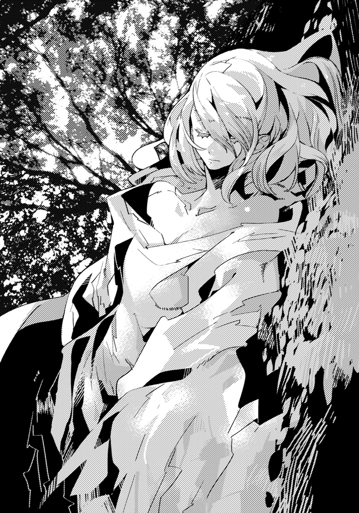
「つっ......！」
頰が火傷したかのようだ。慌てて触ると、ほんのわずかだが指先に当たるものがあった。
周囲を窺うと、水たまりがあったので、自分の顔を映してみる。
頰にアザが出来ていた。見ようによっては、何かの模様にも思える。
（......あれ、これは）
あの時、クレスの手の甲にあったものと同じだった。
ひょっとすると、竜と契約した時に出来る証のようなものなのかもしれない。
人によって、出来る場所が違うのだろう。
（なるほどな......。いや、そんなことしてる場合ではないか）
とりあえず、女の子をどこかに運ばなければならなかった。目を覚ます様子はないので、背負っていかなければならないだろう。
（一度、アイゼンさん達の巣穴に戻ってみよう）
色々なことが起こり過ぎた。自分では整理しきれない。
フィルは咳払いし、女の子に向かって手を伸ばした。
「ごめん。これはその、緊急措置というやつで、別にいやらしい気持ちはないぞ」
誰も聞いていないというのに、言い訳をした上で、首の辺りと腰に腕を回す。
掛け声を一つしてから、勢い良く持ち上げた。
鼻先を甘い匂いがくすぐり、体が竦んだが、なんとか耐え抜く。
思っていたより軽かった。これなら運べそうだと、移動することにする。
「待てよ」
――が、その前に声を掛けられ、フィルはそちらへと振り向いた。
「勝手なことしてもらっちゃ困るなぁ。その子はここへ置いてけよ」
木々によって落ちた薄暗い陰から、誰かが現れた。
男だ。油で固めているのか、髪を不必要なまでに逆立てており、尖った目と顎をしている。
簡素な鎧で身を固めており、腰にはナイフを差し込んであった。
「......誰だ？」
「おいおい。話聞いてるか？」
馬鹿にしたような口調で言って、男は自分の耳を指先で突く。
「その子をここに置いていけって言ってんだ。別に自己紹介しようぜなんて持ちかけてねぇだろ？」
妙に舌足らずの粘着質な喋り方をする輩だった。もっと言えば、全体から漂う雰囲気が、明らかに不穏だ。
「ま、名前くらいは教えてやるよ。ロギィだ」
「......ロギィか。悪いが、この子は俺が守ると約束した。見ず知らずのお前に譲るつもりはない」
「いや、あのよぉ。やっぱおめぇ、話聞いてねえだろ」
わざとらしく溜息をつき、ロギィは唇を歪めた。
「――おれが置いてけつってんだから、とっとと言う通りにしろよ、クズ」
フィルは先ほどの男に対する印象が間違っていなかったことを確信する。おまけに、話し合いが通じるタイプでもなさそうだ。
「ダメだ。渡せない！」
「んだよ。おめぇとその子は関係ないだろ？ なんでそこまでこだわる」
「そんなこと、決まっているだろう！」
フィルは何の躊躇いもなく堂々と宣言した。
「この子が、滅茶苦茶可愛いからだっ！」
「............は？」
「こんな可愛い女の子を、お前みたいなどこからどうひっくり返してみても三流悪党にしか見えない不逞の輩中の不逞の輩に輪をかけたもう本当に不逞の輩的な奴に任せたら、あんなことやこんなことをされてしまうだろう!? だからその要求には従えない！」
「しねえよ！ あと失礼だなてめぇ!?」
「じゃあまさか、そんなことか!? よもやあんなことはするまいな!?」
「具体的になにすると思ってんだよ！ てめぇ、アホだな!?」
「お前に言われたくない！」
きっぱりと断言した後で、フィルは続けた。
「大体、お前、この子のことを知っているのか？」
「あぁ？ あぁ。知ってる知ってる。おめぇなんかより全然知ってるよ。だから置いてけよ。おめぇには関係ねえだろ」
「ある。言っただろう。約束したんだ」
「知るかよ。置いてけ。さもねぇと――」
「断る！」
遮って怒鳴りつけた。すると、ロギィのこめかみにはっきりと血管が浮かぶ。
「......あ......そぉ......」
頭上を仰ぎ、ふらふらとしながら、沈思した。
......だがすぐ後で。
「じゃ、死ねや」
ロギィが短く口走った瞬間。
フィルは、凄まじい衝撃に後方へと吹き飛んでいた。
背後にあった大木に背中を打ちつけ、息が詰まる。
激しく咳き込みながら、なにが起こったのかと把握しようとした。
「あーらら。良い反応してるねぇ」
ロギィが不満そうに漏らす。
フィルは眼前にあるものを見て、愕然となった。
地面から、巨大な棘が生えている。
白く濁ったそれは、まるで何かの生き物の角であるかのようだった。
（なにかが自分に襲い掛かってくるのは見えた......）
だから咄嗟に刀を抜いて、腹を防御したのだ。
しかし、まさかこんなものであったとは。
「なんなんだ、これは......」
「おめぇ、竜伐者って知ってるぅ？」
楽しそうな口調で、ロギィが自分の襟元を広げ、首筋をさらす。
そこには、フィルの頰に刻まれているかのような紋章があった。
「竜伐者ってよぉ。竜がもってる能力を使えるんだよねぇ。――これが、それ」
「......そうか」
これもまた、クレスやジラが使っていたのと同じ契約の効果なのだろう。
「さぁて――楽しく舞いなぁ！」
凄まじい連撃が発動した。
ロギィの足元から次々と棘が生み出され、怒濤の勢いでこちらに迫ってくる。
「......中々の攻撃だ」
フィルは少女を地に寝かせると、体を屈め、
「だが――この程度なら、どうとでもなる！」
宣言と共に駆け出した。唸る風の音が鼓膜を打つのを感じながら、次々と棘をかわし、瞬く間にロギィへと肉薄する。
目を見開く相手の腹を狙って、鋭い蹴りを叩き込んだ。
「ごぼっ......！」
吹き飛ぶロギィが、地面を無様に転がった。
「て、てめぇ......竜伐者相手に、生身でだと......!?」
「以前、狼の群れを相手に戦ったことがある。それに比べればどうということはない！」
手にもった刀の切っ先を、ロギィに向ける。
「さあ、おとなしく引き下がるかこのままやられるか。どちらか選べ！」
フィルとしては、本気を込めて脅しつけたつもりだった。しかし、
「......ひ、ひひひひ。おめぇ、やるじゃねえか」
ロギィは窮地にも拘らず奇妙な笑い声を上げる。フィルが眉を顰めると、
「......仕方ねぇ......奥の手を使うか。出番だぜ――針山種ッ！」
ぎこちない動きで立ち上がったロギィが、全身から絞り出すような叫びを上げた。
刹那。森中に響くのではないかと思うほどの轟音が、鳴り響く。
地面がぐらつき、フィルは均衡を崩して跪いた。
何事かと顔を上げた先に――それはいた。
強靭な顎と不揃いの歯。四つの短い脚に長く細い尾。
だが中でも特徴的なのは、体に背負ったものだ。
丸みを帯びた甲羅のようなものの上に、びっしりと棘が生え揃っていた。
針の山かと思うほどの数は、凶悪な鋭さを誇っている。
「契約した聖竜か......!?」
「いいや、違うね。よく見てみな」
ロギィが針山種と呼んだ竜を指差す。そこには、血を思わせるような、おぞましいほど真っ赤な目があった。
瞬時に、思い出す。ここへ来る前、アイゼンが持ち帰った竜の死体も、同じような色の瞳を宿していた。
「......まさか......こいつが厄竜なのか......!?」
「ああ、そうさ」ロギィが歪んだ笑みを浮かべる。「厄竜つっても種類は沢山あるが――唯一、『目の色』だけはどれも同じなのさ」
「だ、だが。どうして厄竜が人間に従って......」
「さてねえ。それより、そろそろ自分の立場考えた方がいいぜぇ？」
衣服のポケットに手を突っ込みがら、ロギィが長い舌をちらつかせた。
「じゃねえと、おっ死ぬからなぁ？」
ぎちり、という音がする。
フィルの目の前で厄竜が首をわずかに俯け、足を前に出した。
一体なにをするつもりなのかと警戒した時、信じられない事態が起こる。
まるでひっくり返るかのように体を倒したかと思って、間もなく。
――爆発的な速度と共に、厄竜がこちらに向けて、体ごと転がってきたのだ。
フィルは目を見開き、横手にかわそうかと思ったが、すぐさま己の考えを捨てる。
背後に少女がいることを思い出したのだ。
このままでは彼女に被害が及んでしまう――。
迷っている暇はなかった。フィルは腕を交差し、防御の姿勢を取る。
凄まじい衝撃が全身を襲った。耐え切れるはずもなく、地面から強引に引き剝がされて体が宙を舞う。
空が極限まで接近し、間もなく急速に遠くなった。
まともに真下へ背中を打ちつけ、目の前が一瞬暗くなる。
が、歯を食い縛って無理矢理に意識を繫ぎ止め、かろうじて気を失うことだけは避けられた。
「ぐ......が......ぁ......！」
しかし、最早、動くことすら適わない。
ごふ、という息と共に口から生温かいものが流れていく。血だ。内臓をやられてしまったのかもしれなかった。恐らくは骨も相当数が砕けてしまっていることだろう。
いや、あれだけの攻撃の直撃を受けたのだ。生きているだけでも不思議なくらいだった。ヴァースキアとの契約で、体の構造そのものが変わったのかもしれない。
ただいずれにしろ、もう立ち上がることは出来ないだろう。
「よく頑張ったみたいだけどよぉ、ちょーっと甘かったなぁ。ひへへへ、残念でした」
鼓膜が破れたのか、ロギィの声も何処か遠くから聞こえてくるようだった。
「このアギローズの突進はちょっとしたもんでよぉ、どんな頑強な鎧を着てたって穴だらけにしちまうんだ。ま、それよか先にとんでもねえ力でおめぇみたいにボッロボロのグッズグッズになっちまうんだけどよ」
薄れた視界にロギィの姿が入る。彼の背後には厄竜が控えていた。
爛々と光る目が、無慈悲にこちらを見下ろしている。
（そう......か......さっきの聖竜を殺したのは......）
この男の、厄竜だったのだ。
「思ったより楽しめたわ。最後の止めはおれが刺してやるから、感謝しろよ？」
腰に手を当てると、ロギィはナイフを引き抜き、手の中で弄んだ。
反撃しなければと思うが、まるでダメだった。すぐ近くにある得物を握ることすら出来ない。
（死ぬ......のか......俺は......）
こんなところで、終わってしまうのか。
やっと契約を果たしたというのに。竜伐者になれるというのに。
嫌だ。強烈な想いが胸の内を満たした。嫌だ。竜伐者としてならいい。だがこんな中途半端なところで命を失いたくはない。
やりたいことがある。なりたいものがある。まだ、憧れたあの人の、背中すら見えていないというのに。......いや、それだけではない。
（俺が......死んだら......）
後ろの女の子はどうなる。名前すらまだ知らない。
いきなり出会って託されただけだ。大したものではない。
だが、そんなものは関係なかった。
（まだ......死ねない......！）
もっと力が。もっと大きな力があれば。
（何もかもを圧倒出来るような......全てを超えた力が......）
こんな目の前の男など、容易に打ちのめしてしまうような。
（途方もない、力が......欲しい......！）
心が叫んでいた。欲していた。求めていた。
もがくように足搔くように。重苦しい闇の中、一点の光を探して手を伸ばしていた。
（俺に......！）
寄越せ。
（俺に......！）
宿れ。
（俺に......！）
摑ませろ。
「おれ......に......」
ロギィが口元を歪ませる。ナイフの刃が真っ直ぐ心臓を狙っていた。
切っ先が、無情にも、ゆっくりと振り下ろされる――。
「ちから......を......」
今わの際に。フィルは、残されたすべての力を使い、声を上げた。
「力を――寄越せ――っ！」
......ドクン......！
「......ッ!?」
心臓が激しく鼓動を打った。同時に異変が生じる。
自分の手が自然に動き、ロギィのナイフを握り締めていた。
「......なに......!?」
さすがに予想外だったのか、ロギィが度肝を抜かれたような顔をする。
フィルはそのまま、手に僅かな力を込めた。
鈍い音と共に、ナイフが完全に砕け散る。
不思議だった。まるで己が、別の何かに取って代わってしまったかのような気がする。
と、ここに至って、フィルは、あることに思い当たった。
（まさか、これが......俺の【契約】の力か!?）
だとすれば、どこまで凄まじいのか。まるで想像以上だった。
フィルは、ゆっくりと上体を起こす。
先ほどまで指先一つ言うことを聞かなかったというのに、全てが元通りになっている。
いや――それ以上だった。
立ち上がると、音が鳴るほどに強く、両の拳を握りしめた。
かつてない衝動が湧き上がっている。まるで、体内に閉じ込めていた爆発しそうな何かが、それを早く解き放てと急かしているように。
「ぐ......あ......」
故に、フィルは、次の瞬間――。
「ああああああああああああああああああああああああああああああっ！」
獣のような咆哮を上げていた。
「な、なんだ？」
警戒するように、ロギィが一歩、また一歩とこちらから離れていく。
「......分からん。だが、すこぶる気分が良い。今ならなんだってやれそうだ」
不敵に笑いながら、フィルは地面に落ちていた自らの刀を拾い上げた。
「くそったれ......アギローズ！ やっちまえ！」
慌てたように下された指示に従い、厄竜アギローズが再び体勢を傾けた。
やがて尋常ならざる擦過音と共に、高速回転した巨体が押し迫ってくる。
先ほどと同じ攻撃。先ほどと同じ状況。
しかし、違うのは、たった一つだけ。
――勝てる。
理由もなくフィルの頭に浮かんだ、確信だった。
得物を、ゆっくりと上げる。
全てが遅延していた。あれほど速いと思ったアギローズの動きが、容易に視認できる。
構えることもなく、無造作に、刃を振り下ろした。
曰く形容し難い音が鳴る。
――アギローズが、フィルに当たる寸前で真っ二つに両断された。
勢いのまま左右に転がっていき、森の奥へと消えていく。
「は......？」
事態を理解出来ないというように、ロギィが口を開く。
「は......はは......はあ？ はああああああああああ!?」
その場で腰を落とし、震えながら、こちらを指差してきた。
「おおおお、おめえ、な、なんだ、なんだそりゃ!? 反則だろ!? どうなってんだ!? なんなんだ!? なんで厄竜を......!? はああああ!?」
フィルはロギィへと近寄っていく。刀を鞘に収めると、相手を静かに見下ろした。
「どうした。さっきまで勝ち誇っていた奴と同じ人間だとは思えないな。もっと余裕を見せたらどうだ？」
「ま、ままま、待て、待てって！ なあ！ 噓だろ、いくら契約の力があるからって、人間があんな一瞬で厄竜を殺すなんて、出来るわけが......」
言いかけたところで、ロギィは何かに気づいたかのように、瞠目する。
「まさか......おめぇ......まさか......それ、契約じゃねえな......!?」
口調に、にわかに信じ難いというような感情を込めたまま。
「竜の力を......【継承】したのか......！」
フィルは手を上げる。
――軽い動作で、ロギィの横面を引っ叩いた。
目の前から彼の姿が搔き消える。
間もなく遥か遠くで、何か重い物が当たる音と、小さな悲鳴が聞こえてきた。
「ん？ 継承ってなんだ？」
遅れて最後に言い残したロギィの言葉が気になったが、勢いでぶちのめしてしまったので、もう確かめることは出来ない。
まあいいか、とフィルは取り敢えず振り返り、歩き出すと、すぐに身を屈める。
手を差し伸べ、少女をゆっくりと持ち上げた。
まだ眠ったままの彼女に微笑みかけた時、
「......あれ？」
がくん、と膝の力が抜けて、崩れ落ちた。
それだけなく、視界が明滅し、意識が曖昧になっていく。
こんなところで気を失うわけにはいかないと、歯を食いしばったものの――。
すぐに、全ては、暗闇に包まれた。
「......驚いたなぁ」
枝の上に腰かけ、全ての光景を眺めていたアイゼンは、思わず漏らした。
木から降りると、地面に倒れ込んでいる二人に近づいていく。
正体不明の少女を見て、次に、少年――フィルへと視線を移した。
気絶してしまったのは、授かった【力】がまだ体に馴染んでおらず、負担がかかったせいだろう。竜伐者になったばかりの者にはよく起こる現象だ。ただ――。
「僕の団に来た子が、二人目の継承者とは。妙に運命めいたものを感じるねぇ」
膝をつくと、右肩にフィルを、左肩に少女を担ぎ上げる。
「ともあれ――帰るとしようかな」
一言だけ呟くと、アイゼンは、森を後にするのだった。
意識が覚醒した時、目の前には少女の顔があった。
「あら。やっと目が覚めたのね」
「うわあっ!?」
あまりに近い距離であった為、動揺し、フィルはベッドから転がり落ちる。
しかも、相手はあの時助けた白銀の髪を持つ少女だった。
「な、な、な、な......す、好きだっ!!」
混乱のあまり、なぜか出会った時から思っていたことを伝える。
「ありがとう。皆待っているから、入り口の部屋まで来てね」
少女はあっさりと返してくると、踵を返して去っていった。
「ふ、振られた......？」
というより、こちらが伝えたことの意味が分かっていないような感じだ。
やがて、フィルは寝ぼけ眼のまま辺りを見回した。部屋の内装に見覚えがある。頭を搔き、ようやく起き上がった。
――と、そこで、妙なことに気づく。あまりにも体が軽いのだ。
（おかしいな。あれだけの攻撃を受けたはずなのに......）
服をめくって確かめてみたが、傷の痕すら残っていなかった。
ひとまず周りを確かめて、枕元に置かれた【叢】を見つけ、腰に差す。
寝癖のついた頭を搔きながら、少女に言われた通りの場所へと向かった。
台所と長机が置いてある居間へと辿り着くと、そこに、【圧倒せし咆哮】の所属竜伐者が全員揃っていた。
「来た来た。全く、いつまで経っても起きないから、困ってたところよ」
ジラが苦い顔をしながら、机の上に乗った瓶を手にとった。栓を外して一気に飲んでいく。恐らくは酒だろう。
「困ってたって......なにがですか？」
きょとんとして尋ねると、クレスが顎で指した。そこには先ほどの少女が椅子に腰かけてこちらを見つめている。
「あの子だよあの子。お前、聖竜と契約しに行ったんじゃなかったのか？ まさか街に出て怪しい店で遊んでたとかじゃねえだろうな」
「あなたじゃあるまいし、そんなわけないでしょう」
クレスの向かい側に座っていたアンジェが、呆れたような顔になった。
「オレがいつ遊んだってんだよ。この清廉潔白な男を捕まえてよく言うわ」
「私の聞き間違いでなければ、清廉潔白の意味を取り違えているようですね。それともドスケベパンツ野郎という表現を斬新な形で言い変えたものですか？」
「誰がドスケベパンツ野郎だ！ どっから出てきたその言葉！」
「この間、女性をナンパして断られたのにしつこく食い下がり、挙句には『じゃあせめて、せめて下着の色だけ教えて！ それだけ教えてもらったら帰るから！ 帰るからー！』と惨めに縋りついて思いきり引っぱたかれていたという実話に基づいたものですが」
「............見てたの？」
「ええ。一部始終」
「いやあああああああ忘れてええええええ！」
「記憶力はいいもので」
「悲劇いいいいいいいいい！」
「クレス......あなた、いい歳なんだからせめて日の目を見れる生き方した方がいいわよ」
ジラが額に手をやって、やれやれというように首を横に振った。
「俺、どうやってここまで帰ってきたんですか？ しかもあの女の子まで......」
「もしものことがあったら拙いなと思って、君が出発してしばらく後に僕も森に向かったんだよ。そうしたら、君とそこの女の子が倒れてたから連れて帰ってきたというわけ」
アイゼンが柔和な笑みを浮かべながら答えてくれる。
「そ、そうでしたか。ご迷惑おかけしてすみません。ありがとうございましたっ！」
深々と一礼するフィルに「いや、別にいいんだけど」とアイゼンは手を振って、
「それより、この女の子は誰なんだい？ 事情を聞こうと思ったんだけど、フィルが目を覚ましてから全部を話すの一点張りでねぇ」
「いや、俺も分からないんです。森の中に行ったら、契約するはずの聖竜が死んでて」
「聖竜が死んでた？ どういうことだよ」
信じられない、というようにクレスが目を丸くする。
「えーと。だからですね。森に行ったら聖竜が死んでて、いや、殺されてたのか。で、調べてたら金色の竜が出てきて、力が欲しいかって訊いてきたら、柄の悪い男が出てきてその子を渡せば命だけはと言うから、可愛いからそれはダメだと俺が返すと、すごい力が湧き起こってきて」
「すみません、部分部分は理解出来ますが全体を通して全くの意味不明なんですが」
「説明下手にも限度があるわよ......」
アンジェがとジラが物凄く渋い顔をした。
フィルは、すみません、と謝って、なんとか脳味噌を働かせながら、起こったことを順番に話していった。
「......というわけで、男をブッ飛ばした後に気を失ってしまったんです」
「ふうん。そりゃまた、厄介なことになってたモンだな」
腕組みをしたクレスが、片眉を上げる。
「黄金の竜に女の子、厄竜を操る男――か。ちょっと把握できねえな。どうだ、フィルも目覚めたことだし、いっちょ説明してくれねぇか？」
クレスから話を振られると、それまで口を噤んでいた女の子が、軽く頷いた。
「そうね。私と一緒に倒れていたという彼も揃ったことだし、そろそろ話すことにするわ」
椅子から降りると、こちらへと近づき、女の子は胸に手を当てた。
「まず初めに言っておくことがあるわ。私は人間じゃないの」
「......え？」
唐突な告白に面食らっていたフィルに対して、少女は目を閉じた。
瞬間――彼女の体が純白の粒子に包まれ、かと思うと、一気に霧散する。
「......これは」
ジラが息を吞んだ。他の者達も、いつもと変わらぬアイゼン以外、呆気にとられている。フィルもまたそうだった。そんな馬鹿な、という想いが湧き起こる。
少女の背からは、被膜に覆われた小さな翼が生えていた。
「私の名はアムリタ。見ての通り――竜よ」
瞼を上げたアムリタが、全く表情を変えずに告げてくる。
「......おいおい、なんの冗談だよ。竜が人間になるだって？ ありえねぇよ！」
まず最初に声を上げたのはクレスだった。続けてアンジェが口を開く。
「そ、そうですよ。そんなの、聞いたことありません！」
「あなた達に教えたことがなかっただけよ」
アムリタは淡々と言った。
「じゃ、じゃあ、君だけじゃなくて他の聖竜も人間になれるのか？」
フィルの問いに、アムリタは無言で頷く。
「私は、フィルが話した黄金の竜――ヴァースキアと共に、人里離れた場所でずっと二人きりで暮らしていたの。だけど、ある日突然、厄竜の群れに襲われた」
「......どうしてだ？」
「分からないわ」
「じゃあ、そもそもそのヴァースキアってのは、なんなんだ？ どうしてお前と一緒に暮らしてたんだ？」
尋ねたクレスに対してアムリタは首を横に振る。
「何も知らないの。話してくれたことがなかったから」
もしかすれば――とフィルは思った。ヴァースキアの方は事情を把握していたが、何らかの理由でそれをアムリタに話していなかったのかもしれない。
あるいはいずれ時が来た時に語るつもりだったのか。いずれにしろ、当の本人――竜というべきか――がここにいない以上、真実を知ることは出来なくなったが。
「しかし、理由も分からずに傍にいる奴と、よく生活できてたもんだな」
クレスが訝しげな様子で言うと、アムリタは彼の方を向いた。
「生まれた頃から傍にいたから、あまり不思議に思わなかったわ」
「なるほど。フィルの話によれば、人間が厄竜と結託していたということだけど、なにか思い当たる節はないの？」
「ないわ」
ジラの問いかけに、アムリタは素っ気なく返した。
「つまり、あなたが分かっているのは、誰かが何かの目的で厄竜を使ってあなた達を狙っているということだけなのね」
「そう」アムリタは短く応え、「詳しいことは多分、ヴァースキアが知っていたと思うけど......フィルの話を聞く限り、残念ながら、彼は死んでしまったようね」
フィルは、抑揚のないアムリタの口調に、ほんのわずかだが、哀切な想いが混じったような気がした。この少女は、一見すると感情がないように思えるが、単に面に出すのが不得手なだけなのかもしれなかった。
「......そうか。あのヴァースキアという竜は、やはり亡くなってしまったのか」
消えた時からそうではないかと思ってはいたのだが、とフィルは沈痛な面持ちになる。
アムリタが生まれた頃からということだから、親代わりとして共にいたということだ。こちらが思うよりずっと悲しみは深いことだろう。
「ええ。だけど、ヴァースキアの力は、フィル――あなたに受け継がれたようね」
アムリタが、真っ直ぐとこちらを見つめてくる。
「俺に......？ あ、そういえば、アイゼンさん。俺の頰に模様みたいなのが出来たんですけど、これ、契約の証ですよね？」
頰に手を添えながら、フィルが確かめると、アイゼンは「そうだねー」と頷いた。
「おう、そいつは【爪痕】つって、聖竜と契約した証なんだ。オレは手の甲にある。姐さんは首筋で、団長は背中。んで、アンジェは――」
「私の話はいいでしょう」
アンジェが素早くクレスの話を遮った。
「あ？ なんでだよ。説明しといた方がいいだろ」
「しなくても問題はありません」
「いや、だってよ......あ、そうか、お前、恥ずかしがってんだな？ おい、フィル、聞いて驚け。アンジェの爪痕はなぁ、なんと、おし――ぎゃひい！」
後ろから思いきりアンジェに蹴りを入れられ、クレスが飛び上がった。
「余計なことを喋らないように！」
何故か顔を赤らめたアンジェが、咳払いをする。
「......ところで。フィル、あなた、そのヴァースキアという聖竜と契約したのですね。では、試験は合格ということでは？」
すると、隣でジラが長く息をついた。
「そうね......まあ、所属を許可せざるを得ないでしょう」
「ありがとうございます！」
立ち上がってフィルが頭を下げると、痛みに顔を顰めながら、クレスが近寄って肩を組んできた。
「やったな、おい。これからは仲間ってことだ。あ、歳が同じなんだから丁寧語はなしな」
「ああ。よろしくな、クレス！......でも、気になることがあるんだが」
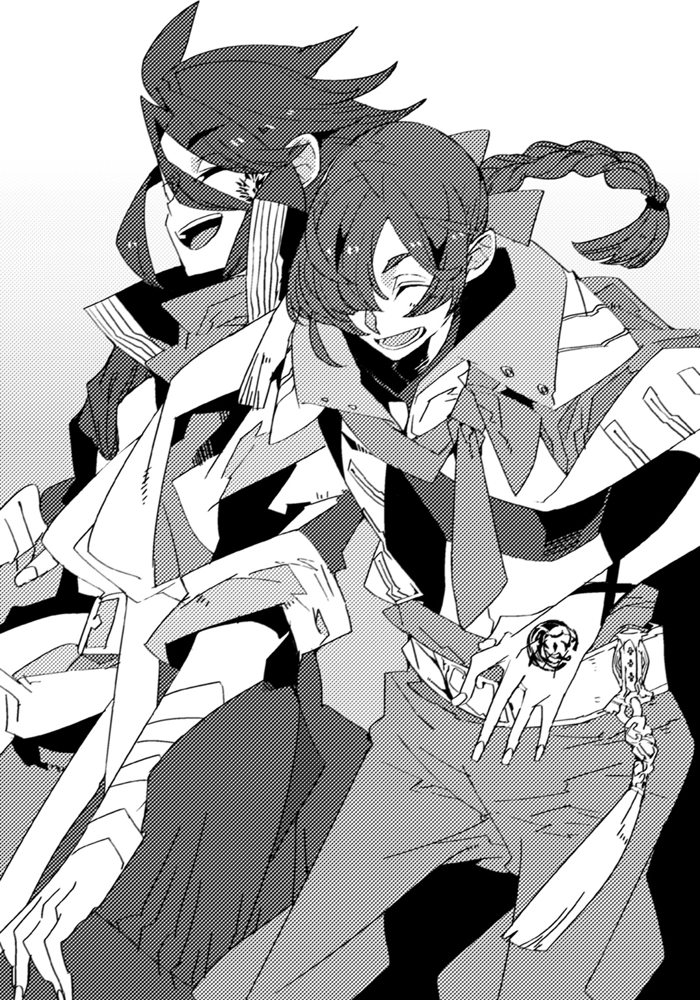
改めてアイゼンの方へと向くと、フィルは言う。
「オレの力を見た時、そのロギィって奴は『契約じゃなくて継承したのか』って言ってきたんですが、どういうことなんですか？」
すると――アイゼンやアムリタ以外の面子は、一斉に眉を顰めた。
「継承......？ 聞いたことありませんね、そのようなことは」
「聞き間違いじゃないの？」
「いえ、確かに耳にしました。一体どういうことなんだろうと思ってたんですが」
アンジェやジラの言葉にフィルは首を傾げていたが、
「【契約】とは竜の力を一部だけ借り受けること。それに対して【継承】は、竜の力を全て譲り受けることだよ」
アイゼンが、驚くべきことを言い放った。
「す、全てっすか!? そんなことありえんすか!?」
度肝を抜かれた様子のフィルが、素っ頓狂な声を出す。
「ほとんどないけどねー。だから、あんまり知られてない。でも、過去に二、三人ほど例があるそうだよ。で、どうして前例が少ないかと言えば、継承って行為は、聖竜の命そのものを犠牲にしてしまうからなんだよねえ」
「え、じゃあ、ヴァースキアは俺に力を託すために......？」
アイゼンの説明に、フィルは急いでアムリタに対して頭を下げた。
「ご、ごめん！ 俺なんかのせいで！」
「気にしないでいいわ」
棒読みにも似た喋り方ではあったが、アムリタの声に、憎しみや怒りが籠っている様子はない。フィルは「......ありがとう」と笑顔で礼を述べた。
「でも、あたしでも知らなかった継承のことなんて、よく知ってたわね、アイゼン」
意外そうに言ったジラに、アイゼンは笑みを深める。
「まあ、色々あってね」
「色々ってなによ」
「色々は、色々だよ」
深くは語るつもりがないようだった。
ジラはしばらく不審そうな眼差しを送っていたが、やがて「まあ、いいけど」と渋々引き下がる。
「しかし、竜の全てを、か......厄竜の体を一撃で真っ二つにしたのも頷ける話だ」
フィルは一人で納得しつつ、もしかして、という考えを抱いていた。
かつて自分を救った竜伐者もまた、一人で多くの竜を打ち倒している。
彼もまた、継承者だったのだろうか――。
「竜を一撃で、ですか。にわかには受け入れ難い話ですね。アイゼンさん以上ではないですか」
アンジェが驚きに唸った。
「どうにも規格外過ぎて、いまいち実感湧かねぇなぁ」クレスが溜息をつきながら、「で、アムリタ。これからどうするんだよ？」
「やらなければならないことがあるわ」
アムリタは思い出したように言って、フィルの方を見つめてくると、
「――フィル、わたしと一緒に来てほしいの」
「分かった！ 任せろ！」
「脊髄反射で請け合うんじゃないっ！」
即座に胸を叩いて答えたフィルだったが、後頭部を思いきりジラに叩かれた。
「せめて『なにをするつもりなのか』とか『どこへ行くのか』とか、そういうところを聞いてからにしなさい！ 脳味噌溶けてるの、あなたは！ え、お母さんのお腹から出た時、置いてきちゃったの――!?」
「いいい痛い！ 痛いですジラさん！ すみませんでした！」
挙句耳を引っ張られて、大いに泣き叫ぶ。
「考えなしもここまでくると見事ですね......クレス以上の逸材かもしれません」
「おいおい、あんま褒めんなよ、アンジェ」
「頭の悪さは似たモノ同士のようですが」
頭を搔いて照れるクレスに、アンジェは大きな溜息をついた。
「で、何をするつもりなのよ？ この馬鹿にちゃんと説明してあげてくれる？」
「......ええ、そうね」
ジラから促されて、アムリタが口を開いた――その時。
「やっと見つけたぞ、女ァ！」
外で声がすると共に、鈍い地響きが起こった。
何事かと全員で顔を見合わせ、巣穴の建物から急いで出る。
果たしてそこには、最悪の事態が待ち受けていた。
翼をはためかせた竜が、こちらを見下ろしている。
濁った沼のような色をした鱗を生やし、蛇のような顔をしたその竜は、両前脚の第二関節辺りから巨大な鉈のような刃物を生やしていた。
竜の肩には筋肉質な体に上着だけを羽織った男が立っており、わずかに残忍そうな笑みを浮かべていた。
「苦労をかけさせてくれる。お前のおかげでこちらは総動員で世界中に散ることになった」
「......どうしてここが？」
アムリタが警戒するように半歩退くと、竜――鮮血のような目をした厄竜は、逆に大きく踏み出してきた。男が軽く頷く。
「匂いだよ。厄竜は一度嗅いだ聖竜の匂いは忘れねぇ。さて......オレは無駄な時間が嫌いでな。抵抗せずに死んでもらえると助かる」
「......いいえ」
アムリタが言った途端、彼女の体が白い粒子に包まれる。
間もなく現れたのは――淡雪の如き純白の肌をした、小さな竜だった。
『追われる意味も分からずに、死ぬわけにはいかないわ』
「気難しいことだな。トカゲのくせに理屈っぽいと見える」
嘲弄するような口調で言って、男は降り立った。厄竜を見上げる。
「刃斬種。こいつ程度ならお前だけでもやれるだろう。――あまり時間をかけてくれるなよ」
厄竜が、応えるように鋭い咆哮を上げた。
前傾姿勢を取ると、アムリタに向かって顎を開く。
彼女の体程度なら、丸ごと吞み込んでしまいそうなほどの巨大な口だった。
「くっ......！」
フィルは刀の柄に手をかけ、アムリタを助ける為に駆け出そうとした。
が――寸前に肩を摑まれ、強引に押し止められる。
「待ちなさい、フィル」
「ジラさん!? どうして......！」
振り向くフィルに、ジラは首を横に振った。そして、
「こんな状況は、今に限った話じゃないわ。多分これから先、アムリタの身にずっと起こることよ。だったら中途半端に手を出すような真似はやめなさい。彼女に無駄な期待をさせるだけよ」
厳しい顔つきのままで、告げてくる。
「アムリタを助けるのなら、これからの彼女の全てを受け入れるつもりでやりなさい。あなた、その覚悟があるの？ ないのなら、【圧倒せし咆哮】の副団長として――部下であるあなたに、戦うことは許さないわ」
「それは......」
フィルは改めて前方へと視線を移した。
ギレルガスと呼ばれた厄竜が、両手に生えた刃を使い、次々とアムリタを攻め立てている。彼女は逃げ回っているものの、完全に避けきれているわけではない。
少しずつ切られ、傷つき、血を流していた。
それを見た瞬間。
「――あります！ 今、覚悟を決めました！」
フィルは刀の柄に手をかけ、刃を引き抜いた。
「勢いだけで決めるんじゃないの！ 彼女の事情を知らずにどうしてそんなことが言えるのよ!?」
こちらを引き止めるように、肩に置かれたジラの手に力が籠る。
だが、強引に振り解くようにして前に出ると、フィルは胸を張って答えた。
「アムリタが――完璧に、オレの好みだからですっ！」
「............。はああああああ!?」
ジラの絶叫に等しい声を背に、フィルは体を前傾させて、思い切り地を蹴る。
瞬く間にアムリタの横をすり抜け、敵の懐へと入り込むと、跳躍した。
上段から振り上げた刃を、渾身の力で振り下ろす。
血飛沫が舞った。
頭蓋を切り裂かれたギレルガスが、苦悶の叫びと共に仰け反る。
「なんだ、お前は......！」
男が睨みつけてくる。
フィルは刀を正眼に構え、アムリタの前に立った。
『フィル......』
「細かいことはいい！ お前が何を抱えてるかなんてものもどうでもいい！」
背後から聞こえてくるアムリタの声に、躊躇わず言い放つ。
「はっきり言おう！ アムリタ、一目見た時から――俺はお前に、惚れたんだ！ 惚れまくったんだッ!!」
刀を正眼に構え、フィルは相手を睨みつけた。
「だからアムリタと一緒に行く。お前を守る。理由はそれで十分だ！ だから、こいつは......」
アムリタの、敵は。
「俺の――敵だッ！」
咆哮と共に振り下ろされてきた刃を、フィルは受け止める。
凄まじい圧力に押し負けそうになったところで、まるで誰かが教えてくれたかのように、頭の中にある言葉が浮かんだ。
文字の並びそのものは見たことはないが、呼び方は既に聞いたことがある。
（そうか、これが竜の力を表す名......！）
力を使う為の合図ともいえるもの。アイゼン達が口にしていたのと、同じものだ。
「行く......ぞ......！」
歯を食いしばりながら、攻撃を堪えた後――フィルは、高らかに叫んだ。
「――【竜身融合】――ッ！」
刹那、全身の細胞が活性化する。己の肉体が、全てを超越する存在へと昇華するのを感じた。
強引に相手の刃を弾き飛ばし、フィルは真っ向から迎え撃つ。
「お前、なんだその力は......!?」
驚く男に構わず、ギレルガスが憤怒したかのように足を踏み鳴らした。
今度は、左右同時に刃を向けてくる。
『......フィル、その武器では無理よ』
アムリタが言いたいことは分かっていた。相手の持つ刃と刃の間の距離が空き過ぎているのだ。今のままではこちらの刀身が短く、一本は防げてももう一本はやり過ごしてしまう。
「安心しろ。こういう時の為の竜装だ」
フィルは刀の柄に両手を添えると、力を込めた。
思い切り、まるで引っ張るように上下へ手を滑らせる。
直後――その形に変化が起こった。
鈍い音と共に柄が伸び、同時に、刃そのものも伸長していく。
瞬く間に、フィルの持つ得物は全体が身の丈を超えるほどの大きさとなった。
竜を殺す為に鍛え上げられた刀、その真骨頂が明らかになったのだ。
「竜牙刀【叢】――いざ参るッ！」
持つだけで重さに負けそうになる武器を、竜王の力を使い、フィルは鮮やかに振り抜く。
鋭い音が空気を切り裂いた。
赤い華が舞い、二つの刃が宙を舞う。
前脚を失ったギレルガスの傷口から――噴水のような、血が噴き出した。
「......馬鹿な!?」
男が続く言葉を失う。フィルは勢いに任せたまま、地面を蹴って高く跳躍した。
このまま止めを刺そうと刺突の構えをとる。しかし、
「くそ、まだだ！」
男が叫んだ次の瞬間、ギレルガスの両前脚の切り口が泡立ち――見る見るうちに再生、元の刃を取り戻した。
「......なに......！」
咄嗟のことで防御が間に合わない。双方から迫る刃が、フィルに牙を剝く。
「【翠意の竜】！」
――寸前、地面から伸びた何本もの草の蔓が、ギレルガスの両腕を縛りつけた。
振り返ると、こちらに向かってクレスが親指を立てていた。彼がやったことのようだ。
「ったく。お前、とことんまで馬鹿だな！ だが――そういうの、嫌いじゃないぜ！」
それと同時、身動きの取れなくなったギレルガスに対して、別の声が放たれた。
「――【颶風の竜】！」
フィルの目の前に、全く何の前振りもなくジラの姿が現れる。
「清々しいほど正直な子ね！ でも、決意は本物みたいだから、特別に許可して協力してあげるわ！」
彼女は腰の捻りと共に腕を引くと、拳を真っ直ぐに突き出した。
手の甲に装着された刃がギレルガスの右目を貫き、激しく血を流させる。
苦痛の鳴き声を上げたギレルガスがジラを喰らわんと口を開いた――しかしその時には既に彼女は別の場所に移動していた。
今度は左目から流血し、ギレルガスの視覚は完全に閉ざされてしまう。
ジラが刃を引き抜き、相手の頭を蹴ってこの場から離れた。
その時、音もなく彼女の姿が搔き消えるのを、フィルは目撃する。
「【灼熱の竜】！」
アンジェの声が響いて間もなく、突如として極大の焰が立ち上り、ギレルガスを包み込んだ。
全身を一瞬にして炭と化すようなそれに巻かれ、巨軀が暴れ回った。
火のせいで蔓も焼き尽くされたが、目を潰されている為に攻撃がままならない。
「なにをしている。とっとと殺せ！」
男が焦った様子で言うが、時既に遅かった。
「行くよ。【暴食の竜】」
穏やかな声が発せられたかと思えば、ギレルガスより遥かに高く、影が躍る。
アイゼンが手にもった大剣を轟然と振り被り、猛烈な勢いで落とした。
筆舌し難い異音が鳴り渡る。
地に降り立ったアイゼンが、得物を振り回し、肩に担いだ。
ギレルガスが――ゆっくりと、後ろ向きに倒れていく。
土煙を上げながら仰向けになった後、巨体は、真っ二つに分かれていた。
「さすが団長ッ！ 見たかコラ――ッ！」
クレスが嬉しげに勝利の雄叫びを上げる。
「凄い......！ 凄過ぎるッ！」
流れるように決まった攻撃の数々に、フィルは見惚れてしまった。これが彼らの契約の力なのだろう。
「ど、どうなっている。厄竜があれほど簡単に......」
男が声を戦慄かせた。
「うーん。もう終わっちゃったか。まあ、この種ならこんなものかな」
アイゼンが笑みを浮かべたままで、男に向かって剣を突きつける。
「――さて、君は満足させてくれる？」
声色に変わりはなかった。しかし、フィルは確かに肌で感じ取る。
アイゼンから放たれる、圧倒的なまでの殺気を。
「......くそ！」
男は歯嚙みすると、踵を返し、走り出した。
「あ、こいつ！ ククルカン！」
慌ててクレスが蔓を呼び出すも、男が手を振ると全てが切り裂かれる。
その腕は、ギレルガスと同じく鋭い刃と化していた。
彼はそのまま、驚くべき速さで去っていく。
「しまった、逃げられた......」
「ま、いいわ。アムリタのこともあるし、深追いすることもないでしょ」
地団駄を踏むクレスに、ジラが肩を竦めた。
「......傷の具合は？ 酷くないか？」
事態を切り抜けられたことに安堵しつつ、フィルはアムリタに確認する。
『ええ。すぐ治るわ』
言って間もなく、アムリタの負った傷が、目に見える速度で癒えていく。竜の自然治癒能力は、人のそれより格段に高いのだろう。
やがて彼女は再び白い粒子に包まれると、人間の姿になった。
「フィル......助けてくれて、一緒に来てくれると言ってくれて、ありがとう」
気にするな、と応えかけて、フィルははたと気づく。
（し、しまった......さっき、場の流れに任せて思いきり告白してしまった！）
今更ながら恥ずかしくなってきた。「い、いや、その、あの」とあたふたする。が、
「でも、私に惚れたって、どういうこと？」
当の本人にはまるで伝わっていなかったようなので、心の中で諸手を上げて喜んだ。さすが竜。好きになった子が異種族で良かった。
「気にするな。とにかく俺はお前に手を貸す。問題ないだろ！」
「ええ、ないわ。これからよろしく、フィル」
「ああ、よろしく、アムリタ！」
フィルは手を差し出す。が、アムリタはこちらの行為を不思議そうに見つめ、
「......よろしく」
と、なぜか手首を摑んで自分の胸に押しつけた。柔らかな未知の感触が伝わり、フィルは「わおうっ！」と変な声を出す。
「な、な、な、なにしてるんだ！ 惚れ直すだろ!?」
「なんとなくこうした方が良いのかと思って......間違ってた？」
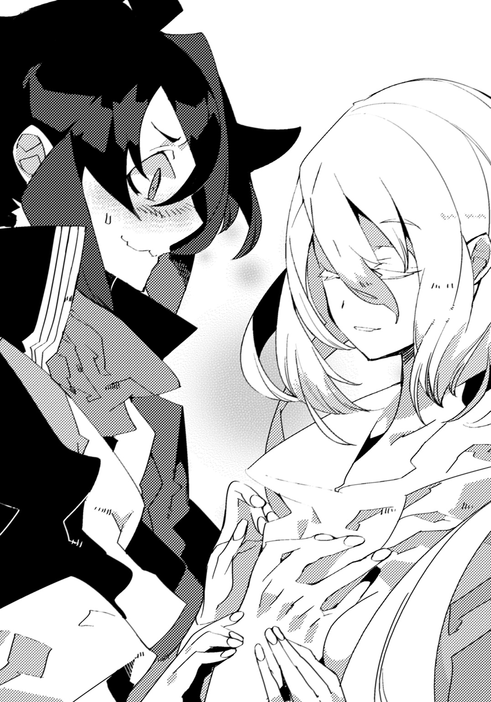
どうやら、人間の常識というものをあまりよく知らないらしい。
「い、いや、間違ってない。でも俺以外にはやらない方がいいと思う！」
「分かったわ。胸を触らせるのはフィルだけにする」
「ありがとうっ!!」
「なにあけすけに噓ついてんのよこの思春期暴走男は」
高らかに礼を言った後、フィルは、後ろからジラに頭を叩かれた。
「痛い！......あ、ジラさん。いや、他の皆も。アムリタとのことを決めたことで、お願いがあります」
「なんだい？」
アイゼンが悠然と構えながら訊いてくるのに、フィルは応える。
「はい。俺は竜伐者になったばっかりで、まだまだ未熟です。さっきだって皆さんに助けてもらわなければ、危なかった。正直、こんな状態じゃ、アムリタを守り切るのは難しいと思います。だから――」
顔を上げ、真っ直ぐ前を見つめながら、
「俺とアムリタに協力してください。皆さんの力を貸してほしいんです！」
アイゼン達は顔を見合わせた。半ば予想していた答えであったかのように、彼等の表情に変わりはない。ただ、
「そうすることで、あたし達に得はあるの？」
ジラが、そう言ってきた。
「......え？」
思いもよらない問いかけであった為、フィルはきょとんとしてしまう。
「フィル、竜伐者っていうのは別に慈善家ではないの。竜を退治しているのはあくまでもお金の為。報酬もなしに危険なことは出来ないわ」
「そ、それはそうかもしれませんけど、でも......」
「目の前で仲間が危ない目に遭っていれば助けるわ。だけどそこから先は別。あなたがあなたの目的で勝手に動くならともかく、団としてアムリタの助力をするのなら、何かしらの対価は必要になる。本来の仕事に当てる時間を取られるわけだしね。それが仕事人ってものよ」
正論だった。ぐうの音も出ず、フィルは言葉を失ってしまう。
（参った......何も考えてなかったぞ。竜伐者への依頼料って幾らくらいだ）
きっと安くはないだろう。自分の財布の中身を思い返しながら、フィルは暗澹とした気持ちになった。しかし、
「報酬ならあるわ。これを受け取って」
傍にいたアムリタが言って、自分の懐から取り出した皮袋を放った。
受け取ったジラは紐を解き、中身を掌の上に落とす。
すると――色とりどりの煌めきを放つ大粒の石が、幾つも現れた。
「うお、すげえ。なんだこれ」
クレスが目を剝いて固まる。
「......どれも名の知れた宝石ですね。恐らく、本物です」
一つを手にとって、陽の光に透かしていたアンジェが鑑定した。
「随分な物をもっているのね。これ、どうしたの？」
ジラが驚いたように言うと、アムリタは落ち着いた口調で答える。
「逃げる前、ヴァースキアにもらったわ。何かあれば使えと」
「......そういえば、聖竜は宝石を好んで蒐集する者が多いと聞いたことがありますね」
アンジェが思い出したように言うと、ジラが納得したように頷いた。
「......なるほどね」
「ヴァースキアはもっと沢山の宝石を隠していたわ。その場所も聞いてる。もしあなた達が私とフィルに協力してくれるというのなら、全ての目的を終えた後で教える。......それでどうかしら」
「いいの？ 大事な物のような気がするけど」
アイゼンが確認するように問うと、アムリタは首を振った。
「別にいいわ」
「......そう。分かったわ」
息をつき、ジラが宝石の入った皮袋を宙に投げる。
「その依頼、受けましょう。――よろしくね、アムリタ」
皮袋を摑み取った後で、彼女は微笑んだ。
第二章 竜少女の目的
次の日。フィル達一行は、街に出ていた。
アムリタが、目的の為に長い行路を旅しなければならないと言ったためだ。その間に必要となるであろう、食料や消耗品を買いに来たのである。
「ごめんください。どなたかいらっしゃいませんか？」
雑貨店に入ると誰もおらず、アンジェが皆を代表して声をかけた。しばらく待つと、奥の方から返事が来る。
「ああ、すみませんねえ。棚の整理をしていまして。もうちょっとだけお待ちください」
恐らくは店主だろう。特に急いでいるわけでもなかったので、全員がその場に佇んだ。
「色々なものが置いてあるのね」
店内を見回しながらアムリタが言った。表情に変化はないが、心なしか目に興味を惹かれたような色が宿っている。
「ここは人間が生活に必要なものなんかを買うところだからな。種類は多いぞ」
フィルが教えてあげると、アムリタは棚を指差した。
「あれはなに？」
「薬草だ。傷口に塗る。怪我なんかもそうだし、虫刺されにも効くな」
「じゃあ、あれは？」
「干した肉と果実。旅に出る時にはなるべく長持ちする食品をもっていく方がいいからな。必需品だ」
「あれは？」
「雨具だ」
「あれは？」
「火打ち石だ」
「あれとあれは？」
「ナイフに野営用の料理道具」
「あれとあれとあれは？」
「この辺りの地図と方位磁石だろ、ええと」
「あれとあれとあれとあれは？ それにあれも気になるわ。あれとあれとあれも。あれとあれはなにをするものなのかしら。あれとあれは食べ物？ あれはどうやって使うの？」
「ええ？ あれ？ え？ あれがあれであれ？ あれはあれだから、あれ!?」
あまりにも矢継ぎ早に質問が飛んでくるので少々混乱してきた。しかしアムリタはこちらの様子にも気づかずに、残像を引くほど速く店のものを片っ端から指差している。
「あれも気になるわ。あれも教えて。あれはどうなの？ フィル、あれは一体？」
「あーあーえーあー。悪い、ちょっと待った。もう何がなんだか」
フィルが頭を搔きながら必死に状況を整理していると、アイゼンが笑った。
「リタは随分と好奇心が強いんだねぇ」
「そうかしら。見たこともないものばかりだから」
アムリタは生まれてからずっと、ヴァースキアと二人で――二匹と言うべきだろうか――暮らしていたらしいという話だったから、無理もない。とはいえ、この調子で続けられると、こちらも対応に苦慮しそうだった。
ちなみにリタとはアムリタの愛称である。これから一緒に行動するのだから、そういうものがあった方がより親しくなれるのではないか、とクレスが考案したものだった。
彼女自身は特に嫌がっている様子もなかったので、そのまま定着している。
「いやあ、お待たせしました。何にしましょう」
そこでようやく店主が姿を見せ、注文を受けつけ始めた。
「とりあえずお酒ね。葡萄酒とラム酒を樽二つずつ」
カウンターに手をついて、ジラが身を乗り出す。
「ダメです。お酒は巣穴にあるものを持っていきます」
アンジェが容赦なく却下する。
「ええええええ。そんなんじゃ昼にはなくなっちゃうわよ、アンジェ！」
「なくなりません。大体、いくら旅が長くなりそうだといっても、樽二つも吞めるわけないでしょう」
「吞めるわよ？」
「なぜ誇らしげに言うんですか」
アンジェからじろりと睨まれ、ジラは唇を尖らせた。
「......ジラさんはかなりお酒を吞むのか？」
フィルはクレスに問いかける。出会った時に部屋に転がっていた酒瓶のことを考えると、大方の予想はつくのだが。
「かなりなんてもんじゃねえよ。この前なんて酒場に入って、帰る頃には店の在庫全部なくなってたんだぜ」
それはいささか度を超し過ぎではないだろうか。フィルは戦慄した。
「ジラは小さい頃から酒吞みだったからねえ。お父さんの目を忍んで秘蔵の蒸留酒を全部空にしちゃって、怒られるより先に怖がられたって聞いたよ」
アイゼンが吞気そうに少しも吞気でない思い出を語る。
「そんなに吞んで体大丈夫なのか？」
「さあなあ。アンジェが心配して酒を隠すんだけど、物凄い勘の良さで見つけてくるんだよな。あの嗅覚はさすが腕のある竜伐者だぜ」
「なるほど！ 一流の竜伐者とはかくあるべきということか！」
「あっはっは。無関係だよ」
フィルが感心していると、アイゼンが即座に笑顔で全否定した。
「お酒......というものはそれほどまでに美味しいかしら」
アムリタが近くにあった果実酒の瓶を持ち上げて眺める。フィルは首を傾げた。
「俺も吞んだことないから分からないけど、好きな人は好きと聞くな」
「でもお酒は体に悪いとヴァースキアに聞いたことがあるわ。吞み過ぎると死ぬこともあるって」
「まあ、噓はついてねえわな」
クレスがなんともいえないという表情をした。すると、
「じゃあ、ジラは死のうとしているのね。協力してもらっている恩返しに、殺してあげた方がいいのかしら」
可愛い顔をしてアムリタがとんでもないことを口にする。しかも無表情で。
「リタ、冗談に聞こえないぞ」
「冗談ではないわ」
「衝撃の告白！」
慄くフィルに、クレスが「んなわけねえだろ」と冷静に突っ込んできた。
「ねえ、いいでしょ？ 今回だけ。今回だけだから！ 次からもう吞まないから！」
と、そこでまだやりとりを続けているジラとアンジェの方を見る。
「その言い訳五十二回目です。いい加減にしてください。大体、ジラさんが年間に飲むお酒の代金で、うちの財政がどれだけ逼迫しているか分かっているんですか？」
「ええ、だって、ランプだって油がなきゃ火が点かないでしょ？ あたしにとってお酒は油なのよ。油。吞まないとやる気が出ないのよ！」
「木材を口に突っ込んで着火してあげましょうか？」
「なんちゅうおぞましい発想すんのよこの子は......」
さすがのジラも引いていた。
「とにかくお酒は巣穴にあるだけにします。足りなければ我慢してください」
「なによー。細かいこと言うわね、お金持ちのくせに」
不満げに零したジラに、アンジェは眉間に皺を寄せる。
「前も言いましたが、お金を持っているのは私の実家であって、私自身ではありません。別に親から仕送りを頂いているわけでもないですから」
「ちぇ。分かってますよ」
普段と違い子どものような口振りで、ジラは溜息をついた。
「お金持ち......？」
気になる単語に呟くと、クレスが口端を上げる。
「ああ。実はさ、アンジェって貴族の令嬢なんだってよ」
「え、そうなのか!?」
「らしいぜ。ここから少し離れた土地の領主で、結構羽振りの良い生活をしてるらしい」
どうりで立ち振る舞いや喋り方に品があるわけだ。
ただ、フィルは気になることがあった。
「そんな人が、どうして竜伐者に？」
「それがよぉ。あいつ小さい頃からお転婆で、本で読んだ竜伐者に憧れてたんだとさ。で、十六歳になったことをきっかけに目指すことを決めて、親に告げたら、大喧嘩。結局、半ば絶縁みたいな形で家を出たとか」
「うーむ。それはまた、すごい行動力だな」
「まさに跳ねっ返りだよな。我も強いし、気をつけろよ、下手なことすると尻蹴っ飛ばされるから。特に胸のことは言うなよ。あいつ、自分に胸がないこと気にしてるんだからよ。まあ、姐さんと比べると確かにどこの荒野だと思わんばかりに平坦だけど――」
「せいっ！」
「ひぎっ！ ごめんなさいっ！」
いつのまにか近くに寄っていたアンジェに思い切り尻を蹴られ、クレスは飛び上がった。
「余計なことばかりくっちゃべってるんじゃありません。別に胸のことなんて気にしてませんし」
顔を赤くしながら、アンジェは腕を組んだ。
「頭脳も腕前も私、完璧ですから。身体的特徴如きどうでもいいことです」
「そうよねえ。胸なんてほんとにどうでもいいことだわ。そんなことでとやかく言うのなんて馬鹿馬鹿しいにもほどがあるわね」
ジラがアンジェの後ろに立った。
「......ジラさん、胸を頭の上に乗せるのやめてもらえます？」
額に血管を浮かび上がらせながら、アンジェが上目遣いにジラを睨みつけた。
「あらごめんなさい。あなた背が低くて丁度良い位置に頭があったから」
「......持っていくお酒は瓶一本だけにしますね」
「胸なんて飾りよ飾り！ 男には分からないのよ！」
急に態度を覆して味方になるジラだったが、アンジェは「もう遅いです」と冷酷に切って捨てる。
「......胸は大きい方がいいのかしら」
二人のやり取りを聞いていたアムリタが自身の体に手を当てた。彼女のそれは、小さいわけではないが、特別大きいわけでもない。
「まあ、ないよりはあった方がいいんじゃねえの？ 胸が膨らむと夢も膨らむってさ。はははは！」
「「下品！」」
クレスが大声を上げたが、ジラとアンジェ両方から同時にまたも尻を足で強打され、悲鳴と共に大きく跳んだ。
「......フィルもそう？」
アムリタが、こちらを見て小首を傾げる。
「ん？ なにを言ってる。リタがリタであればいいんだ。胸なんてどうでもいい！ 揉めれば！ 揉めればいいんだ！」
「いいこと言ってるように思ってるみたいですけど、割と最低のこと口にしてますよ」
フィルが力一杯に宣言していると、アンジェに思い切り睨みつけられた。
「でも、フィルは私のことを助けてくれたわ。だから、あなたが望むなら出来る限り応えるつもり」
アムリタは、ずいとこちらに迫ると、
「大きくした方がいいなら大きくするわ。どうすれば大きくなるの？ どうすれば？」
「異性に揉まれれば大きくなると聞いたことはあるわね」
ジラが訳知り顔で頷いた。
「そう......揉まれれば......揉む？」
「揉みますっ！」
「真っ昼間から爽やかな顔で破廉恥なことを口にしないでください！」
胸元を開けようとするアムリタに親指を立てたフィルだったが、後ろから思いきりアンジェにはたかれる。
「......あの、お客さん方、結局なにを買うんで？」
置いてけぼりを食らっていた店主がおずおずと申し出てきた。
「ああ、すみません。干し肉と干し果実に携帯食料、後は火打ち石に松明を下さい。そうですね。一週間分くらい」
アイゼンがてきぱきと指示をすると、店主は「かしこまりました」と応えて再び奥へ引っ込んでいった。
「ああ、ちょっとアイゼン、お酒が足りないってば」
「ダメだよ、ジラ。君は放っておくとずっと飲んでるんだから」
「別にいいじゃない。何の問題もないんだから」
「後々大変なことになっても困るからねえ」
「だけど、お酒がないとあたし――」
「ジラー？ ダメだよー？」
アイゼンが縋りつくジラの方を向き、にっこりと笑う。
特に何の変わりもない、いつもの彼の表情に思えたが――。
「......わ......分かったわ。我慢する」
あれだけアンジェに注意されてもめげなかったジラが、あっさりと引き下がった。
気持ちは分かる。フィルもまた硬直していたからだ。
アイゼンの全身から感じ取れる、曰く形容し難い迫力を。
「......一番怒らせたら怖いのは、団長かもな」
ぼそりと呟くフィルに、クレスが「全くだ」と同意した。
「んん。そういえば......クレスはどうして竜伐者になったんだ？」
「オレか？ そんなもん、決まってるじゃねえか。――格好いいからだ！」
「そうか！ やっぱりな！ それ以外ない！」
「おうよ！ 気が合うじゃねえか！」
『おっしゃあああ！』
クレスとフィルが手を叩き合っていると、後ろから「馬鹿二人......」というジラの嘆きにも似た声が聞こえてくる。
やがて、無事に当座に必要なものを買い揃えることが出来たフィル達は、外に出た。
大通りには様々な店が並び、簡易的な食事を提供する屋台が軒を連ねていた。
「フィル。あれはなに？」
早速、アムリタが質問をする。
フィルが彼女の顔が向いている方へと視線を傾けると、そこには大きな樽を後ろに控えさせた屋台があった。
「ああ。紅蜜だな。林檎を搾ったものに色んな他の果実を漬けこんで、蜂蜜を入れてるんだ。この辺の名物だよ」
フィルが答えると、アムリタは「そうなの......」と言いながらじっと見つめる。
「......欲しいのか？」
尋ねると彼女は目を瞬かせた。
「別にいいわ。人間の世界で物を貰うにはお金というものが必要なのでしょう？ わたし、持っていないから」
別段、虚勢を張っているわけではなさそうである。竜に物欲はあまりないのかもしれない。ただ、フィルはやはりそのまま放っておくことは出来なかった。
「よし。俺に任せろ。すみません、六人分下さい！」
屋台に駆け寄るとお金を払い、陶製の器を受け取る。
「別にいいと言ったのに......」
遠慮をするアムリタに、フィルは微笑みかけた。
「俺と他の皆の分も買ったからな。ついでだ」
団員たちに一つずつ手渡した後で、アムリタに差し出す。
彼女は少し躊躇っている様子だったが、アイゼン達が礼を言って飲み出したのを見て、真似するように口に含んだ。
しばらく味わうように頰の内側に留めていた液体を、喉を鳴らして嚥下する。
「......どうだ？」
黙ったまま器で波打つ紅蜜を見つめているアムリタに問いかけると、彼女は顔を上げた。
「甘いわ」
「え、ああ、まあ、林檎と蜂蜜だからな！」
「冷たいのね」
「近くに井戸があるからじゃないか！」
「............」
それきり、アムリタは無言になってしまった。
「......感想が見つからないなら、無理に気を遣わなくてもいいぞ？」
「後は酸っぱくて、ちょっとどろっとしていて、量が多いわ」
「最早悪口になってんぞ」
クレスに突っ込まれるがアムリタは不思議そうにするばかりだ。自覚はなく、多分、なにか言わなければという想いのまま口にしたのだろう。
「あんまり美味しくなかったか？」
竜の好みは分からないからな、とフィルが頭を搔くと、アムリタは再び器へと視線を落とした。
「分からないの。物を食べて美味しいとか美味しくないとか、考えたことがなかったから」
「聖竜は普段なにを食べているんですか？」
興味をもったのかアンジェが問いかける。
「周りの植物から得られる、生命力とも呼べるものを摂取しているわ」
「それ美味いのか？」
クレスが訝しげな顔をした。
「どうかしら。ふよふよしたものが、すっと入ってきて、ぱーっとなる感じよ」
「いや全然分かんないわよ」
ジラの意見にフィルもまた同感である。
「......こう、ふよふよしたものが」
埒が明かないと思ったのか、アムリタが虚空で手をひらひらと泳がせた。
「すっと入ってきて」
そのまま自分の体に掌を当て、
「ぱーっとなる感じよ」
両腕を大きく開いた。そして、心なしか、どうだ分かっただろうという顔でこちらの反応を待っている。
「――そういうことか！ 全部分かった！」
フィルは拳を握った。アムリタがわずかに嬉しそうな表情になる。
「え、お前、本当に分かったのかよ。どういうことなんだ？」
クレスが訝しげに尋ねてくるので、フィルは喜んで答えてやった。
「いいか。ふよふよしたものが、すっと入ってきて、ぱーっとなる感じだっ！」
「全然理解してないじゃないのよ！」
ジラに頰を思いきり抓られる。フィルとしてはこの上なくちゃんと説明したつもりなので、目を白黒させるばかりだ。
「あはは。竜っていってもこうして喋るとあんまり僕たちと変わらないねー」
朗らかに笑うアイゼン。確かにその通りだとフィルも思った。
聖竜などと言われると身構えてしまうが、今のアムリタはどこからどう見てもちょっと変わっているだけの、ごく普通の女の子にしか見えない。
なんだか意外なような、それでいて安心したような気がして、フィルもまた口元を緩めた。
「それはそうと旅に出るなら、リタ、あなたの服装は少しいただけませんね」
アンジェがアムリタの格好を上から下まで見ながら言う。
「そうかしら。昔、ヴァースキアがくれたのだけど」
アムリタが服の裾を引っ張りながら答えた。
「それはそれで持っていくとしても、旅に出るならもう少ししっかりしたものを揃えなくては。ちょっとそこで見てみましょうか」
アンジェが指差したのは服屋だった。連れ立って中に入ると、店が小さい割に品揃えは豊富だ。
「山道を歩くかもしれません。靴は丈夫なものにした方がいいでしょうね」
「夜は冷えるわ。竜にとっては関係ないかもしれないけど、一応、上着をもっていきましょう」
「獣に襲われて破かれるかもしれませんし、替えも用意しておきましょう。これなんかどうですか？」
「それならこっちよ。安い割に生地が丈夫だし」
「ですがジラさん、それは少し派手なのでは......」
なんだかんだと言いながら、アンジェとジラが服をとっかえひっかえして、アムリタに押しつけていく。
「......なんか楽しんでないっすか？」
クレスが呟くと、アイゼンは腕を組んだ。
「ジラはああ見えて、一度関わるとなるととことんまで世話を焼くからねえ。アンジェは初めて下の子が出来て、妹みたいで嬉しいんじゃないかなぁ」
「下の子って......多分、リタはアンジェより年上だと思うっすよ」
「そうなのか？」
二人の会話にフィルが割り込むと、クレスが「ああ」と短く返してきた。
「竜ってのはどえらく長生きするからな。リタは若そうに見えるけど、少なくとも百歳は超えてるんじゃねえか」
「えええ!?」
とてもそうは見えない。今の姿はどう考えても十四、五歳程度だ。
「そ、そこまで上だと......いいや！ 歳の差結婚もありだな！」
「どこまで飛躍して決意してんだよお前は」
クレスが呆れたように半眼で見てくる。
「うーん。そうね。上はこっちかしらね」
ようやくジラが決めたのか、上着を自分の腕にかけた。
「替えはこっちにしましょうか。じゃあリタ、ちょっと試着してもらえますか？」
アンジェが声をかけると、リタはわずかに顎を引く。
「分かったわ」
と、思うと急にしゃがみこんだので、どうしたのかと思っていると、
「よいしょ」
いきなり、何の前触れもなく、リタが自分の着ていた服を脱いだ。
「んなっ!?」
あまりにも突然の肌着姿を目の当たりにし、思わず変な声が出るフィルである。
「ちょ、ちょ、ちょっと待ちなさい！ どうしてここで脱ぐんですか!?」
アンジェが顔を真っ赤にして手を振った。
「服は脱がないと着られないわ。私もそれくらいの常識は知っているのよ」
どこか自慢げに腰に手を当てるアムリタ。薄布一枚で。
「別の常識を学びなさい、あなたは！ ほら、男どもは見ない！」
素早く指示をされ、フィルは急いで後ろを向いた――ように見せかけて振り返った。
「分かりやすい行動ですね！」
が、同時にアンジェから目を指先で突かれ、「目がっ！」と悲鳴を上げる。
「......はい、もういいわよ」
しばらくして、ジラから許可が出たので、フィルは涙目になりながら前へと向き直る。
アムリタは長距離を移動するに相応しい、生地のしっかりした服装に変わっていた。袖のない上着に編み上げの靴がよく似合っている。頭には、花をあしらった髪飾りがつけられていた。
「......変かしら？ フィル」
アムリタが尋ねてくるので、フィルは、急いで答える。
「結婚してください！」
「勢い余んな！」
ジラから頭に手刀を喰らった。
「不束者だけどよろしくね」
「そっちもよろしくしない！ 意味分かってないでしょ!?」
頭を下げたアムリタに、ジラが叫ぶ。
「も、もう、いい加減に疲れるわよ。クレスだけでも大変なのに、この上、面倒なのが二人揃って......！」
ぜえぜえと息をつくジラ。
「あっはっは。ジラも大変だなぁ」
アイゼンが平和そうに呵呵大笑した。
「あ・な・た・も・協力しなさいよおおおおお！」
ジラに襟首を摑まれ揺さぶられるも、アイゼンは依然として「はははは。痛いよジラ」と変わらぬ調子を保ち続ける。大人物だとフィルは感心した。
「......あなたに気に入ってもらえたようなら良かったわ」
なんとなく満足そうな素振りをみせながら、アムリタは自身の体を見下ろす。
「まったく......さ、準備も整ったし、そろそろ行きましょうか」
アイゼンを解放し、ジラが声をかけると、一同はぞろぞろと店を出た。
「さて......いよいよ出発の時だけど。そろそろ話してくれてもいいんじゃない？ あなたは何を目指して旅立つつもりなの？ フィルは関係なくあなたの力になるみたいだけど、あたし達は一応、知っておきたいのよ」
ジラが街と外界を隔てる門の前で、アムリタに尋ねた。
「そうね。あの時は邪魔が入ったから」
アムリタは軽く頷くと胸元に手を入れ、何か首飾りのようなものを取り出した。先端に仄かに桃色に光る水晶がついている。
「......また宝石？」
アンジェが覗き込むと、アムリタは「いいえ」と口を開いた。
「これは、身に着けているだけで竜の力を増すことが出来る宝珠なの」
水晶をこちらへと見せながら、アムリタが語る。
「ヴァースキアから、『時』が来る前に異変が起これば、これを求めなさいと渡されたわ。そこには【竜賢神】と呼ばれる特別な竜もいると」
「竜賢神？ ......なんだそりゃ」
クレスが怪訝そうに眉を顰めた。
「分からないの」
「じゃあ、その竜賢神ってのに会えば、ヴァースキアがリタに伝えられなかったことも教えてくれるかもな！」
フィルは希望を持つと、アムリタもまた肯定するように頷いた。
「うーん？ でも、その宝玉、リタが持っているならもう要らないじゃないかい？」
アイゼンが不思議そうに言うが、アムリタは首を横に振る。
「この宝珠――【竜の魂】は元々、もっと大きかった。ただ悪用されないよう、ヴァースキアが八つに分けて何処かに隠したそうよ」
「じゃあ、そいつを探しに行かなければならないということか」
フィルの言葉に、アムリタは頷いた。
「竜の力を増す......ねえ。それがリタがヴァースキアと一緒に暮らしていた意味にも繫がってくるのかしら。だけど、リタの力ってそもそも、なんなの？」
「さあ。それも分からないわ」
尋ねたジルに対して、アムリタは素っ気なく返す。
「分からないって......じゃあ、何の為にその【竜の魂】を探すのかも不明ということですか」
アンジェが困惑したように眉間に皺を寄せた。
「だけど、ヴァースキアが求めなさいと言った以上、探すうちに全ては明らかになっていくと思うわ」
「......ま、何も指針がないよりは、ずっといいかもしれないわね」
ジラの考えに、フィルも心の中で同意する。現状、それ以外にアムリタがとるべき選択肢はないのだから、仕方のないことではあった。
「それで、その他に隠してある【竜の魂】というのは、どう見つけるんだい？」
アイゼンが小首を傾げると、アムリタは、ゆっくりと宝珠を天に翳した。
すると――奇妙な現象が起こり始める。
桃色の石が光り輝き始め、宙に浮かぶと、ある方向に向かって走り出したのだ。
宝珠【竜の魂】はある地点に来ると再び止まり、そのまま停滞した。
「こっちに向かって進めばいいらしいわ」
「仲間がいるところを教えてくれるってことね。随分と便利じゃない」
ジラが面白がるように言う。
「うん、じゃあ、出発しようか。目指すはここから北北西ってところかなー」
宝珠の行き先から大体の見当をつけたアイゼンが、皆を率いるように歩き出した。
フィルもまた、彼の背を追って足を踏み出す。
――こうして、フィルの竜伐者として初めての仕事は始まった。
第三章 宝珠を求めて
旅 壱日目
いかに人と同じ姿をしていても、アムリタは竜である。
街で買い物をしていた際に感じていたことだが、より一層に認識し始めたのは、旅に出てからのことだった。
「フィル、これはなに？」
移動に乗り物を使おうとして、アンジェが御者に賃金を払っていると、アムリタが幌付きの馬車を指差して言った。
「馬に引っ張ってもらって走るものだ。これがあると歩かなくて済む」
フィルの解説に、アムリタは感心したように頷く。
「さあ、乗ってください。山越えをする手前の村まで頼んでおきました」
アンジェに促されて、アムリタが半ば走り気味に馬車へと向かっていった。好奇心が疼いたのかもしれない。
彼女は台に足をかけると、入り口の縁を支えに勢いよく体を持ち上げて――。
「さあ、行きましょう」
大真面目な顔で幌の上に座った。
「......いや、リタ？ 突っ込み待ちか？」
クレスが恐る恐るといった体で尋ねると、アムリタはやはり真面目きった顔でこちらを向く。
「なにを突っ込むの？ 棒？」
本気のようだった。
「ざ......斬新だ！ 今年はこの乗り方が流行るに違いない！」
フィルは力一杯断言すると、同じように幌を摑む。
「いいからどっちも降りてきなさい。二人だけ歩かせるわよ」
ジラが嘆息したので、アムリタはどことなく、納得いかなさそうな顔をして降りてきた。
「リタ、馬車に乗るのはもう少し下です。下に座ってください」
アンジェが丁寧に教えると、アムリタが「分かったわ」と真剣な顔で請け合う。
そして、幌から降りると――ごく普通の顔で馬車の真下に潜り込んだ。
「行きましょう！」
「行けるか！」
地面すれすれの状態でなんとか摑まりながらきっぱりと言い放ったアムリタに、ジラが全力で突っ込んだ。
「あのね、あなたは零か一しかないの？」
「斬新だ！」
「だからそっちも真似をするんじゃない！」
アムリタと同じように潜り込んだフィルは、ジラに襟首を摑まれ引っ張り出された。
「あのですね。ここです。ここに乗って、中にある席に座ってください。いいですか、ここですよ」
アンジェが扉を開いて念を押す。
「......こんなに狭いところで過ごすのね。人は大変だわ。飛んでいけばいいのに」
中を覗き込んだアムリタが感想を漏らした。ちなみに彼女自身も翼があるので飛行できるが、竜としては小さく、とてもではないがフィル達全員を乗せることは出来ない。よって、移動は人間と同じ手段を使わざるを得なかった。
「いやまあ、飛べるもんなら飛んでいくけどよ......」
クレスが笑みを引きつらせる。
「うーん。まあ、人も飛ぼうと思ったら飛べるけどねえ」
アイゼンがしみじみと言ったので、クレスが意外そうに尋ねた。
「え？ どうすんすか？」
「思い切り剣で叩けば飛ぶよ」
「それは跳ばされてるのよ。物理的に」
ジラが投げやりな調子で告げる。
「そうなの。一度見てみたいわ」
アムリタが期待を込めたような目をした。ならばとフィルは実行に移す。
「よし。クレス、アイゼンにやってもらってくれ！」
「なんでオレなんだよ!? お前がやれよ！」
「痛いじゃないか！」
「オレだって痛いわ！ お前仲間になった途端に遠慮ねえな!?」
フィルとクレスのやりとりを、アムリタは不思議そうに眺めていた。
旅 弐日目
竜伐者はそれぞれ【契約】した竜の能力に則った力をもち、それをもって厄竜に対抗している。
例えばクレスの場合、【翠植種】という名の竜の能力を備えていた。
植物や土を自在に操る術をもち、広範囲に亘って地面を陥没させることや、毒花を咲かせて相手を苦しめる他、フィルを縛りつけたように蔓のようなものを呼び出すことが出来るのだ。
「これはちょっと登るのが大変そうだねえ」
アイゼンが困ったように、その実、全く困っていなさそうな吞気な顔で言った。
険しい山を越えようとしていた時のことである。フィル達の前の道が、土石流のようなものによって塞がれていたのだ。
「そういえば昨日、激しい雨が降っていたものね。そのせいかしら」
ジラが腰に手を当てて考え深げに言った後、傍らにいたクレスへ視線を向けた。
「クレス。頼んだわよ」
「了解っす。――ククルカン！」
宣言と共にクレスが指を鳴らす。途端、地面から何本もの蔓が生え、それらは互いに絡み合うと、瞬く間に伸びていった。やがて頂上付近まで到達すると、先端が蛇のようにのたくい、近くにあった巨大な岩に、何重にもわたって巻きついていく。
クレスは何度か蔓を引くと、満足いったように頷いて、こちらを振り返った。
「大丈夫そうっす。念のため、まずオレから行くっすね」
言い残すと、土の塊に足をかけ、クレスは器用に蔓を使って登っていく。
「すごいな！ 厄竜を倒すだけじゃなく、こういう使い方も出来るのか！」
フィルが感嘆の声をあげていると、仲間達は次々とクレスに続いていった。
「フィル、行かないの？」
アムリタが問いかけてくるので、フィルは首を横に振る。
「俺は一番最後にするよ。リタが落ちたら大変だからな」
「......そう。ありがとう」
少しだけ口の両端を上げると、アムリタは蔓を握って、少しずつ登っていった。
しばらく様子を眺めていたフィルだったが、どうにか大丈夫そうだと踏むと、同じようにしていく。
クレスの生み出した蔓は、見た目以上にしっかりしていて、そこらの縄より頑丈だった。
半ば辺りまで来た時、ふと、アムリタは大丈夫だろうかと見上げる。
途端――フィルは硬直した。
忘れていたが、アムリタはスカートだ。つまり、当たり前の話だが、ズボンと違って下から覗けば中が丸見えになってしまう。
だが、フィルが動けなくなったのは、そのことに対してだけではなかった。
上を仰ごうとした時、しまった、このままでは下着が見えるかもしれない、ということくらいは、予想できたのだ。
しかし、何も見えなかった。
いや、正確に言えば下着を思わせるようなものは、一切ない。
代わりにあったのは、滑らかな白い肌の、控えめな盛り上がりだけ。
――率直に言って、アムリタは何も穿いていなかった。
「どわあっ!?」
はたと我に返った時、思わず手を放してしまい、フィルは真下に落下する。
慌てて受け身をとったはいいものの、思い切り地面に背中を打ちつけてしまった。
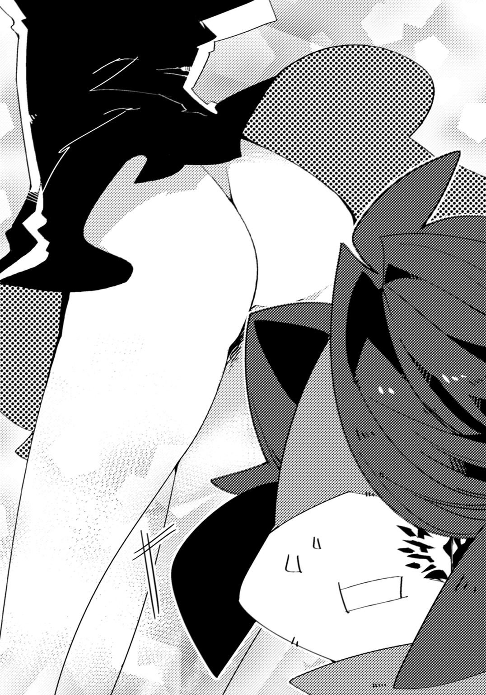
「いっ......たああああ！」
悲痛な叫びを上げると、涙目になった視界の中、アムリタがこちらを見下ろしている。
「どうしたの。大丈夫？ フィル」
「い、いや、オレは大丈夫だが、あの、アムリタこそ色んな意味で大丈夫か!?」
「わたし？ わたしはなんともないわ。いつも通りよ」
「いつも通りなのか!? それはそれで問題があると思うが！」
「むしろ落ち着いているわ」
「落ち着いているんだ！ すごいな!?」
頭を押さえながら、フィルは立ち上がった。
「で、でも、あの、リタ、どうして......その、あの、下着......」
「なに？ 下着がどうかしたの？」
「いや、なんというか......下着......穿いていない的な!? いや、まさか、まさかなー！」
「穿いてないわ」
「超正直ッ!!」
「え、そうなのかよ!?」
勢い込んで下を覗き込んだクレスが、アンジェに襟首を摑まれて引き戻される。
「な、なんで穿いてないんだ!?」
思わず勢い込んで尋ねるフィルである。が、
「あれって毎日穿くものなの？」
「その発想はなかった！」
「ちょっと、リタ、あなたには下着を何枚か渡したでしょう!?」
慌てたアンジェに、登り切ったリタは首を傾げる。
「ええ。でも、今日はいいかと思って」
「いや、いいとか悪いとかそういう分類のものでもないですから！」
「そうなの。じゃあ、アンジェも穿いているの？」
「ええ、もちろん。今日はちょっと奮発して買った高級生地のものを――ってなにを言わせるんですか！」
純真無垢な顔で訊くアムリタに、アンジェはつい答えかけ、顔を赤くした。
「ああ、アンジェ、あれ穿いてるんだ。あれはちょっとあなたには早いと思うけど」
ジラが何気なく言う。
「放っておいてください。どんな下着を穿こうと人の勝手で――ってどうしてジラさんが私の下着のことを知っているんですか!?」
「あ、まずい。風の噂で聞いたのよ」
「今、まずいって言いましたよね。確実に直接見ましたよね!? どんな風の噂ですか！」
上の方で、ジラとアンジェの言い争いが続いていた。
が、フィルにとってはそれどころではない。先ほど見た場面が頭から離れなかった。
「リタ、本当に穿いてないの？」
「ええ。ほら」
「スカートをめくらないでください！」
アイゼンの問いかけに行動で応えようとしたリタが、必死にアンジェから止められる。
（す、素敵な子だ......）
高鳴る鼓動を抑えながら、ますますリタに好意をもつフィルであった。
旅 三日目
深い森が続いている。
高く生えた木々が影を落とす中、フィル達は進んでいた。
辺りには静寂が漂っており、鳥の声一つ聞こえない。
「気をつけなさい。こういう場所は厄竜の棲み処になっていることが多いわ」
ジラの注意に、フィルは辺りを見回す。
「何もないように思えますが......」
呟くと、アイゼンが散歩でもしているようにぶらぶらと進みながら答えた。
「厄竜には様々な種類があってねえ。中には獲物に喰らいつくまで、周囲の風景に溶け込んで見えにくくなってるものもあるんだ」
「え、そんなの、防ぎようがないじゃないですか」
「注意深く見ることね。後、不用意に近づきすぎないこと」
ジラから助言され、フィルは一層の警戒をする。
が、どこをどう観察してみても、何かがいるようには見えなかった。
「フィル、あの実、とても綺麗ね」
ふとアムリタが指差した方向へと視線をやる。そこには、やや高い木の枝に鮮やかなまでに赤を宿した実が下がっていた。
「本当だ。食べられるのかな」
「分からないわ。少し気になる」
じっと見つめるアムリタの横顔は、どう観察しても「少し」というようには思えない。
「分かった。じゃあ、オレがとってくるからここで待っててくれ」
だから、フィルは先手をとって動いた。近づくと、木はごつごつとして足場が多そうだ。これならいけると、するする上がっていった。
瞬く間に枝に辿り着くと、木の実に向かって手を伸ばす。
が、そこでフィルは、はたと妙なことに気づいた。
（あれ。なんでこの木、実が一つしかなってないんだ？）
どう考えてもおかしい。他はすべて落ちてしまったのだろうか、と考えていると、
「フィル！ ちょっと！ 下りてきなさい！」
下でジラが両手を振って呼びかけてきた。
「大丈夫です、この程度の高さならなんでもありません！」
これでも竜伐者を目指す身だ。木登りくらいなんでもない。
そういった意味を込めた主張だったのだが、
「そうじゃなくて！ そこ！ 危ないです！」
「飛び降りてもいいから戻ってこいって！」
アンジェやクレスまでもが必死に止めてくるので、さすがに変だと思った。
「一体どうしたんですか。この木が一体なんだって......いう......の......」
答えようとした声が途切れる。
フィルの目の前に――『眼』が現れた。
それはぎょろりと、こちらをねめつけてくる。
「な、なんだ!?」
反射的に腰に差した刀へ手をやった時、突然、辺りが揺れた。
だが、地震ではない。フィルの周囲だけが、動いているのだ。
途端、けたたましい鳴き声と共に、フィルは激しく振り下ろされた。
体が宙に浮かんだその時、確かに目視する。
地面の下から、巨大な土色の厄竜が現れたのを。
頭に巨大な樹を生やした厄竜が、獲物を待ち受けていたのだ。
「このっ――！」
フィルは素早く刀を引き抜き、継承の力を発動すると、目の前を一閃した。
頭部を損傷し、厄竜はよろめくも、体勢を立て直して踏み込んでくる。
「フィル！ 逃げて！」
アンジェからの声が飛ぶものの、こちらは空中で無防備な状態だ。即座に対応することが出来ない。
やがて厄竜が身を大きく反らした。その上、虚空に、光の粒子が収斂していく。
「気をつけて、【思法】を使うつもりよ！」
ジラが大きく叫んだ。
思法、とは、竜だけが持つ力場のことだ。念じるだけで様々な現象を起こすことが可能である他、彼等の巨大な体を支える要にもなっている。
思法はそれぞれの個体によって使い方が違うため、これを把握することが厄竜退治の第一歩とも言えた。
加えて、聖竜はある種の方法――彼ら曰く極めて感覚的なやり方であり、言語にすることは不可能らしい――を行い、精神的な繫がりを持つことで、己の思法を他の生命体にも使わせることが出来るようになる。
これが、いわゆる竜伐者の行う【契約】というものの真実だ。
フィルはジラから聞いたことを思い出しながら、奥歯を嚙み締め、なんとか事態を打開しようとする。
「ウル・スマウグ！」
刹那、厄竜の背後から、唐突に火柱が出現した。
直撃を喰らった相手は絶叫を上げ、炎上する。
すかさず、今度は右側から火が吹き上がると、厄竜の全身を包み込んだ。
紅色に染まった巨大な体は、焦げたような異臭を漂わせながら、瞬く間に朽ちていく。
やがて、灰と化した厄竜が、ぱらぱらと崩れ落ちた。
「不用意に近づくなとジラさんに言われたばかりでしょう。気をつけてください」
背後からの声に振り返ると、アンジェが立腹した様子で頰を膨らませている。
「悪かった。これをリタに渡そうかと思って」
フィルが頭を搔いていると、アムリタが近づいてきて、頭を下げた。
「ごめんなさい。私のせいで」
「いや、いいんだ。はい、これ」
手渡された果実を、アムリタは両手で持ち、しばらく見つめる。
だが、おもむろに、躊躇いなく齧りついた。
「わあ！ こら、よく知りもしないものを口にしないの！」
ジラが子どもへするようにアムリタを叱りつける。
当の本人は、しばらく口の中をもぐもぐと動かしていたが、
「......個性的な味ね」
とだけ感想を漏らす。
「個性的って、具体的に、どんな感じだ？」
フィルが更に確かめると、彼女はしばらく思案するような間を空けた。
だが、やがて、頷いてから答える。
「ゴミを食べているみたいよ」
「じっくり考えた結果、不味いんじゃないか!?」
フィルは、がっくりと肩を落とした。
それからしばらく進み、ようやく森を抜けたところで、フィル達は昼食がてらに休憩を取ることにする。
「アンジェ、干し肉炙るから火を出して」
ジラの要請に、アンジェは頷いて手を翳した。
「ウル・スマウグ」
すると、虚空から突然に火が現れ、轟々と燃え始める。
「......さっきも思ったが、アンジェの力は凄いな。何もないところから火を出せるのか」
火を中心に皆が車座となった後、フィルが感心した。
「ええ。わたしが契約した【焰芯種】は、火を司る竜であり、己の意志一つで山を丸ごと焼き払うほどの炎を吐くとされています。そのことからわたしも、『任意の場所に炎を呼び出す』という力を授けられました」
アンジェが心の中で命じない限り、火は決して消えず、更に範囲内であれば一度に複数の炎を出現させることも可能であるとのことである。汎用性の高い、優れた能力であると言えた。
「あとね。敵を攻撃したり、焚火を熾すだけじゃないのよ」
ジラが陶製のコップに葡萄酒を注ぎ、「お願い、アンジェ」と頼んだ。アンジェはやや呆れるような顔をしつつも、小さく契約した竜の名を呟く。
すると、ジラのコップの下に小さな火が出現し、すぐに消失した。なみなみと入った酒からは湯気が立ち上っている。
「こうして、簡単に熱いお酒が出来て、体を温められるというわけ」
「な、なるほど！ お手軽だ！」
フィルは驚きに唸ったが、
「......竜の力を便利な台所用品みたいに使われても困るんですけど」
アンジェは、不服そうな顔を作るのだった。
旅 四日目
「そういや、リタって竜なんだよな。なんか竜っぽいことって出来ねえの？」
平坦な道をのんびりと歩いていた時、ふと、クレスが尋ねた。
「竜っぽいことって、具体的にどういうのよ」
ジラが問い返すと、クレスは指を立てる。
「いや、ほら、火を吐いたり、翼で暴風起こしたりとか。オレらが力を借りてる聖竜みたいなことっすよ。リタにもあるのかと思って」
「火は出せるわ」
リタが頷いた。
「お、本当か。ちょっと見せてくれよ」
クレスだけでなく、アイゼンやアンジェも興味を惹かれたようにアムリタの方を見る。フィルも同じだった。
「ええ、少し待ってね」
リタは息を吸い込むと、大きく身を反らす。
「って、ちょっと、リタ、こんな近くで火を吐かれたら！」
慌てたアンジェが止めようとしたが、
「――ふうっ」
勢い良く体勢を戻すと共に、アムリタの開いた口から、物凄く小さな火が出た。
頼りない紅色の揺らぎは、瞬きをする間もなく消えてしまう。
「......心配する必要もなかったわね」
ジラが肩を落とした。
「どうかしら、フィル」
心なしか胸を張るようにこちらを見つめてくるアムリタ。
全員の注目が集まる中、フィルは断言した。
「――可愛いから、良しっ！」
「言うと思ったわ！」
正直に告げたのに、何故か、クレスに後ろから叩かれる。
「他にはないのかい？ 竜っぽいもの」
アイゼンの質問に、アムリタは首を傾げ、
「そうね。肌が滑らかで綺麗だと言われたことはあるわ」
「それ竜っぽい能力か......？」
クレスが訝しげな顔をしていると、アムリタの体が白い粒子に包まれた。間もなく竜の姿になると、彼女はフィル達に言う。
『触ってみて』
「え、いいんですか？ でも失礼なんじゃ......」
アンジェは遠慮するが、ジラが「ま、リタから許しが出たことだし」と近づいて、アムリタの肌に手を置いた。そのままゆっくりと撫でていく。
「......本当。滑らかだわ。気持ち良い」
それを見て、アンジェもおずおずと手を伸ばした。指先が触れた途端、彼女は目を見開く。
「ほ、本当です！ こんな感触は初めてです。上質な絹よりもきめ細やかです」
「すごいわよね。竜の肌ってこんな感じのものもあるんだ......」
しきりに二人が触り続けるのを眺めていたクレスが、手を上げた。
「はい！ オレも触りたいです！」
「「ダメ」」
が、ジラとアンジェと同時に却下される。
「なんでっすか！ リタも良いって言ったじゃないっすか！」
「あなたはダメよ。なんか別の意味でまさぐりそうだし」「そうですよ。変態っぽく撫でくり回しそうです」
更には間髪を容れずに半眼で睨まれて、クレスは「ちくしょおおお！ 偏見だあああ！」と嘆きながら膝をついた。
『フィルも触ってみて』
「え、ええ!? いいのか！」
アムリタから誘いを受けて、フィルは動揺する。
「......まあ、リタがそう言うなら」「クレスよりはマシですよね」
ジラとアンジェも、頷き合って、横に退いた。
恐る恐る歩み寄って、フィルはアムリタの体に手を添える。すると、生き物の肌とは思えないほど細やかで、まるで引っかかるところのない感触が、伝わってきた。確かに心地良い。ずっとこうしていたくなってくる。
「すごいな......」
呟きながら、フィルは背中から辿って、なんとなく尻尾の付け根辺りに触れた。
『んっ』
と、アムリタの口から、らしからぬ艶やかな声が漏れる。
「え、ど、どうしたんだ!?」
驚いて、つい、少しだけ強めにその部分を揉んでしまった。
『......あっ』
途端、更に大きく喘いで、アムリタは元の人間の姿に戻ってしまう。
頰は少し赤らんでいるようで、彼女は目を伏せながら、こちらに向かって告げてきた。
「突然そんなとこを触るなんて、フィルは、意外とえっちなのね」
「ここはエッチなところなのか!?」
そんなことを言われてもという気持ちである。
「ふうん。竜の性感帯ってことかな」
アイゼンが腕を組み、感心したように頷いた。
「そんなものがあるんすか。な、なあ、リタ。他にはどんなところがあるんだ？ もう一回、竜の姿になって細かく教えてくれよ。ほ、ほら、ほら、減るもんじゃなし――」
クレスが興奮したようにアムリタへ近づいていく。
「そういうところが！」
ジラが手を振り上げ、
「――変態だというのです！」
アンジェと一緒に、クレスの頭を叩いた。
「痛いっ！ すみません、思春期男子の好奇心がっ！」
ぶたれた箇所を押さえてしゃがみこむクレスを、アイゼンが笑う。
だがフィルはそれどころでなかった。
（い、今触ったところは、人間の女性で言えばどの部分なんだろう......）
頭の中は、そんな考えで一杯である。
「フィル？ どうしたの？」
「ひいっ！ なんでもないですっ！」
アムリタから顔を覗き込まれ、つい、敬語になってしまうフィルだった。
旅 五日目
穏やかな風が吹き、フィル達が進む草原を微かに揺らしている。
厄竜や害獣らしきものも見当たらず、場には穏やかな空気が流れていた。
が、ふと先頭を歩いていたジラが立ち止まり、空を仰ぐ。
「......空気が湿ってるわね」
呟くと、ジラは視線を巡らせ、ある地点で止めた。
そこには、少し離れた場所に、大きな木が立っている。ジラが足先を変えて向かったので、フィルもまた後を追った。
木は横幅だけでなく高さも相当なもので、思い切り見上げても頂点が窺えないほどである。
「ちょっと行ってくるから。――ワイヴァース」
ジラが木の腹に足をかけながら、呟いて間もなく。彼女の体は搔き消え、気づいた時には少し上の枝に出現していた。
ジラが契約した【疾空種】は、当初、凄まじい速度で飛行する竜であると思われていた。
だが後に、速度ではなく『空間をすっ飛ばしながら進んでいる』ということが明らかになる。即ち、瞬間移動だ。
それに伴い、彼女もまた、一定距離であれば自在に場所から場所へと移動する能力を会得していた。
これにより、敵に動きを悟られず死角から攻撃を仕掛けることが出来るのはもちろん、今のように高い場所でも容易に上がることが出来る。
ただし他の竜伐者と同様、能力を一度発動するごとに体力を幾らか消耗するらしく、必要でなければ出来るだけ使わないようにしているようだった。
「どうだい？ ジラ」
ジラが何をしようとしているのかを悟っているらしく、アイゼンが真下から問いかける。
契約の力によってあっという間に頂上に到達したジラは、しばらく遠くの方を見ていたが、
「やっぱり、向こうの方は雲が多くなっているわね。あの流れだとそろそろ来るわ」
と答えると、登った時と同様、素早く降りてきた。
「急ぎましょう。かなり激しそうだから、ここにいては拙いわ」
ジラが言って、勢いよく駆け出す。フィル達も慌てて続いた。
やがて向こう側に森が見えてきた時、フィルの額にぽつりと冷たい感触が伝わる。
それは少しずつ数を増していき、二呼吸する間に、豪雨へと変わっていた。
だが幸い、本格的に降り出す前に全員が森へと入り、大きな岩の下へ逃げ込んだので、ずぶ濡れにはならずに済んだ。
「ふえー。姐さんさまさまっすね」
クレスが背負った荷物から取り出した布で、水滴のついた髪を拭く。
「これを予測していたわけですか。すごいですね」
フィルは激しく降る様子を眺めながら感心したが、次に鼻がムズムズとしてきて、大きなくしゃみを連発した。どうやら雨に当たり過ぎて冷えたらしい。
「フィル、平気？」
アムリタが布を手に持って、こちらの体を拭き始めた。だが彼女もフィルと同じくらいに濡れてしまっている。
「リタ、俺はいいから自分を拭いてくれ。そのままだと風邪をひくぞ」
「わたしはいいの。人と違って体温が下がることはないから」
言って、一生懸命に、水に濡れた肌を拭ってくれるリタ。
「見せつけてくれるなぁ、おい」クレスが羨ましそうにこちらを見た後で、傍にいたアンジェに視線を向けた。「オレにもやってくれよ、アンジェ」
「いいですよ。さあ行きますよ。せいっ！」
掛け声と共に、アンジェは手に持った布で、クレスの顔を無茶苦茶に力を入れてこすった。
「痛い痛い痛い痛い！ どうやったら布でこんな痛く出来んだよ！ 肌が削れるわ！」
「削るつもりでやってますから」
「やんなよ！ 真顔がこええよ！」
掛け合いをしている二人を、アムリタが興味深そうに眺めている。
その間、彼女は自分の体をほとんどくっつけるようにして、体を拭いてくれていた。おかげで、ありがたいのだが、非常に緊張してくる。
「あ、あの、リタ？ なんていうか、ちょっと近いというか......服も濡れてるし......」
段々と耐え切れなくなってきたので「そっちも余計に濡れてしまう」という意味で、フィルは注意しようとした。
「あ......ごめんなさい」
しかしアムリタは何を勘違いしたのか、フィルの服を摑んで持ち上げ、脱がしてしまった。
「え、なに!? どうしたんだ!?」
突然の行動に驚いていると、アムリタは無表情のままで、
「......服の下も濡れているから拭いてほしいということではないの？」
「いやいや、確かにそうなんだけど、俺が言いたいのはだな......」
とフィルがしどろもどろしているうちに、アムリタは上半身を丁寧に拭っていった。益々距離が縮まってくる。
「う......く......わあああ！ もういいから！」
たまらなくなって、つい、アムリタを軽く押してしまう。
その拍子に自分も倒れてしまい、自然、彼女を押し倒すような形になってしまった。
「あっ......！」
どうしてこうなったのか、意味が分からないのか、目をぱちくりとさせるアムリタ。
「リ、リタ......」
「......なに？」
きょとんとしている彼女に向けて、フィルは言い放った。
「お、男として責任取りますっ！」
「もう一回雨浴びて頭冷やしてきなさい、あなたは」
ジラに襟首を摑まれ、フィルは連れていかれる。
「ち、違うんです！ ジラさん！ ここは！ ここは男としてー！」
必死に主張するも聞き届けてはもらえず、そのまま、本当に外へ放り出された。
「フィル？ 男の責任をとるって、どういうこと？」
しばらく後、問いかけてくるアムリタ。
「......こういう目に遭うってことだ」
フィルは、雨の中で正座させられながら言ったものだった。
旅 五日目
「竜牙刀【叢】――いざ参る！」
フィルは己に備わった継承の力を発動し、巨大な刀を振り払った。
目の前にいる数匹の厄竜が、纏めて切り裂かれる。
だが即座に岩陰から別の数匹が現れると、牙を剝いて襲い掛かってきた。それらを薙ぎ、怒濤の如く攻め込んでいくと、周囲を一掃する。
それでも、全体から見れば数がわずかに減ったに過ぎなかった。フィル達は数十匹以上もの厄竜に囲まれている。山越えをしている途中、あまりにも突然、群れに遭遇したのだ。
「参ったわね......まさかこんなところに巣があったなんて」
ジラが息をついたところで、その背後から厄竜が飛び掛かる。彼女は姿を搔き消し、相手の背後に回ると、首筋に手甲についた刃を突き刺した。
同じようにアンジェやクレスも奮闘しているが、いかんせん、敵の数が多すぎる。
フィルは新たに厄竜を何匹か切り倒すと、後ろにいるアムリタを守りながら引き下がった。
「アンジェー？ この厄竜の特徴知ってる？」
一人だけ余裕を見せていたのは、アイゼンだった。彼は手に持った大剣を軽々と振り回しながら、厄竜を次々倒していく。
「え？ あ、はい！」目の前の厄竜を火柱で焼いていたアンジェが、突然話を振られたことに戸惑いながら答えた。
「ええと、【軍衆種】ですね。一匹一匹は大したことはないですが、必ず複数で行動します。頭が良いので単純な攻撃方法を使わず、連携をとってくるので厄介ですね。加えて近くに仲間がいればどんどんと集まってきます！」
「そう、正解。で、対処方法は？」
アイゼンが、大剣で厄竜を纏めて両断しながら、更に問うた。
「単独ではなく纏めて倒すのが望ましいですね。出来れば一度に全てを始末するのが望ましいです」
「よく出来ました。――というわけで、皆、ちょっと下がってね」
にこりと笑って、アイゼンが突然、大剣を鞘に仕舞う。
フィルはこれまでの旅路から彼が何をしようとしているのかを悟り、アムリタと頷き合うと、共にこの場から離れた。クレス達もまた、同じ行動をとる。
「よし、それじゃ行くよ」
アイゼンは言って、しゃがみ込むと、足元に転がっていた石を拾った。
次いで――おもむろに、それを口の中へと放り込む。
同時に、凄まじい異音を発しながら、嚙み砕き始めた。
「うん。......なるほど。こういうことか」
一人納得したように顎を引き、アイゼンは何もない空間に手を翳す。
「吐き出せ、オルガンド」
呟きと共に、アイゼンの周囲の景色が変動した。
地面に転がっていた石が微かに震えると、彼に向けて、集まり始めたのだ。
間もなく、石同士は互いにくっつきあい、一つの形をとり始めた。
やがて――アイゼンの手に現れたのは、巨大な一本の石斧である。
「さて――行こうか！」
アイゼンが嬉しげな声を上げた途端、大気を叩き砕くような異音がした。
彼が、両手に握った自身の身の丈以上もある石斧を、思い切り振り回し始めたのだ。
まるで嵐のような猛烈さで刃が虚空を切り裂いていく。
それらに巻き込まれ、【群衆種】の名を持つ厄竜は次々と断末魔の叫びと血飛沫を上げた。
瞬きをする間もない。
気がつくと、あれだけいた厄竜が、一匹残らず肉塊と化していた。
「凄まじいな......まるで規格外だ」
あまりの見事さに、フィルは棒立ちとなる。
オルガンド――アイゼンが契約した竜は、ある特殊な力を持っていた。
この世に存在するありとあらゆるものを喰らい、その素材に沿った物体を体表に生み出して防御や攻撃に使うのだ。
故にアイゼンにも、『喰ったものを武器や鎧に変化させる』という技が備わっていた。
しかし、彼の真骨頂は能力そのものだけではない。
日頃から愛用している大剣に始まって、先程のような斧や、他に槍、弓、槌など、どんな得物でも一流の扱いを見せるのだ。
力と才能が相まって、アイゼンは、完璧に近い竜伐者となっていた。
（しかし......やっぱり団長は似ているんだよな、あの人に）
幾度となく、アイゼンの活躍を見ていたフィルは、何度か浮かんだ想いを嚙み締める。
十年前、自分を救ってくれた竜伐者のことだった。
大剣を使うことといい、圧倒的なまでの力と動きといい、どうにも重なるところがある。
「どうしたんだい？ フィル」
いつもの笑顔で、アイゼンから尋ねられた。
「あ......いえ。ちょっと気になることがありまして」
少し迷ったが、思い切って、フィルは訊いてみることにする。
「ひょっとして、団長は――十年前、オレの村を襲った竜を倒してくれた人ではありませんか？」
アイゼンは微笑みを浮かべたまま、こちらを見つめてきた。鼓動が高鳴り始めて、フィルは緊張に唾を飲み込む。
だがやがて、
「いやあ、よく分からないや。どうだろうね」
首を横に振って、前を向いた。
「ど、どうだろうって、どういうことでしょう。団長の得物といい、その強さといい、そっくりなんですが！」
「まあ、世の中には似ている人が三人はいるっていうしね。気にしない、気にしない」
肩を竦めると、アイゼンはそのまま先を行く仲間達と合流する。
なんとなく、否定も肯定もせずにはぐらかされてしまった印象を受けた。
（あの人ではないのだろうか......？）
言われてみれば、薄らと残る記憶の中で、かつての恩人とアイゼンの顔は違っている気もする。
しかし、気のせいで片づけるには、いささか無理があるようにも思えた。
「うう、どっちなんだ......」
頭を抱えて悩むフィルだったが、
「フィル、なにしてんの。置いてくわよー」
前方からジラに声をかけられ、「あ、はい！」と慌てて追いかける。
（......とりあえず、ひとまずは考えるのをやめよう。今、答えは出そうにない）
そう、フィルは、自分を納得させるのだった。
旅 六日目
長い行路を経たところで、アムリタの持つ宝珠の指す光が、ようやく濃くなり始めた。どうやら、目的地は近いようだ。
この分なら明日か明後日には着けるだろう、とジラが推測したことで、フィル達の間にも安堵の空気が漂い始めた。
そのせいか野営の夜も落ち着いていて、最後の行程を乗り切る為に、皆、静かに休んでいる。
フィルは焚火で焼いた兎の肉を齧って空腹を満たしていたが、ふと、離れたところでアムリタが何かを熱心に見ていることに気づいた。
「なにしてるんだ、リタ」
近寄ってみると、彼女が手に持っているのは一冊の本である。
「アンジェに借りたの」
題名から察するに、中身は歴史書のようだ。そういうことかと得心がいった。
「人間のことを勉強してるのか。リタは偉いな。俺なんて、本の文章を少し読んだだけで頭痛がしてくるぞ」
「そうなの。変わっているのね」
「たまに持つだけで割れるように痛むしな」
「そうなの。変わっているのね」
「いやどっちかというともうそれ病気の域だと思いますが」
傍にいたアンジェが顔をひきつらせた。
「知らないことを知れるのは、とても楽しいわ」
表情は変わらないものの、どこか弾んだ声で、アムリタが言う。
「へえ、リタがそこまで本を好きになったのなら、俺も読んでみようかな」
頭が痛くならなければ、と思いつつ、フィルは返した。
「他にも借りたのか？」
「ええ。ジラからも。こちらは、竜伐者についてのものよ」
傍らに置いてあった、青い表紙の本を手にとって、アムリタが見せてくれる。
ぱらぱらとめくると、そもそもの成り立ちから始まって、最新の情報まで記載されていて、中々に読み応えがありそうだった。
「そのうち、俺より人間に詳しくなるんじゃないか」
フィルが笑うと、アムリタもまた「だといいわね」とほんの少しだけ口元を緩める。
「あと、クレスも貸してくれたのよ」
「へえ、クレスが？」自分と同じぐらい読書などしなさそうだったので、意外だった。「どんなものなんだ？」
「まだ確かめていないわ。本を借りたいと言ったら、鞄の中にあるから適当に持っていってくれと言われたのだけど」
と、アムリタは赤色の装丁がされた本を持ち上げた。題名を見たが、なぜか黒く塗り潰されてしまっているので分からない。
「どんな本なんだ？ 気になるな」
「そうね。読んでみるわ」
アムリタが軽く頷いて、ページを開いた。しばらく黙読していたようだが、やがて、小さな口を開く。静寂の夜に、涼やかな声が響いた。
「『その時、キッドは、己の内に眠る獣心を思うさまに解放しようとしていた。無理もない。目の前には彼が待ち望んだ、美しき少女の裸身が横たわっているのだ。ふくよかな胸を見つめているうち、キッドがキッド足り得るというべき象徴が、少しずつ屹立し始め、その先端から』――」
「え、ええ、えええ!?」
「ぎゃあああああああああああ！ なに読んでんだお前えええええ！」
予想外の出来事にフィルが二の句を継げないでいると、クレスが凄まじい勢いでこちらにすっ飛んできた。いつにない素早さで、アムリタの手から本をもぎとる。
「なにをするの。まだ最初よ」
「最初で最後！ もう終わりだから！ っていうか、これ違う！ これ違うやつだから！ 鞄の奥にしまい込んでたやつ！ もっと手前に別のがあっただろ!?」
クレスが急いで、だが、まるで愛しいものを守るように本を懐にしまい込んだ。
「ええ。あったわ。でも奥の方に、まるで見られては困るから隠しているかのように、もう一冊あったから、そっちにしたの」
「見られては困るから隠しているのに、なんでさらけ出しちゃうの!?」
顔を赤くするクレスに、ジラが優しく言った。
「いいのよ。男の子だものね」
「姐さん！ 今、そういう気遣いが一番傷つくからっ!!」
顔を両手で覆って蹲るクレス。
「というか長旅にどうしてそんなものを持ってきてるんですか......」
アンジェが軽蔑するような眼差しをクレスに送った。
「いや、むしろ、長旅だからいる！ いるんだ！ お気に入りのが！」
フィルが立ち上がって力説する。
「お、おお、同志！ そうだよな。長旅だからこそだよな！」
クレスが妙に元気づけられて立ち直り、握手を求めてきたので、フィルは快く応えた。
「最低という二文字以外思いつけませんよ」
アンジェが額を押さえて盛大なため息をついた。
「......ところで、この本は、人の何を描いたものなのかしら」
ふと思いついたように、アムリタが疑問を呈してくる。
「............」
考え込んでいたフィルは、しばらくして、告げた。
「......未来？」
旅 七日目
「いたわね......」
ジラが囁いて、岩の陰に潜んだ。
フィルもまた彼女の背から恐る恐る覗き込み、そこにいるものを見る。
乾いた肌にびっしりと生え揃った鱗、翼はなく、尾が反るように生えている。
濁った目は足元にある草を注視しており、こちらに気づいてはいないようだった。
全体の中で特に目立つのは、額にある角だ。山羊を思わせるようにねじれており、長く、大きい。
「クレス、あの竜の種別と特徴は？」
ジラから質問を受け、クレスが思い出すように、わずかに視線を右へと移した。が、すぐに口を開く。
「雷撃種っすね。巨体を活かした力任せの攻撃も結構強いですけど、一番危険なのは角です。あいつは思法で生成した雷をあそこから四方八方に撒き散らします」
「そう。その通り。じゃあ対処法は？」
ジラが頷いて、再度、クレスへ尋ねた。
「まず動きを止め、次に怒ったガオークスの雷を惹きつける必要がありますね。その隙に大きな衝撃を与えて意識を奪い、最後に角を砕けば終わりって感じです。後は破壊力か切れ味のある竜装で首を切り落とせばいいかと」
「......上出来ね。あなたも中々やるようになったじゃない」
満足そうに微笑むと、ジラはクレスの頭を軽く叩いた。
クレスは「うへへ、そう？ そうっすか？ ふへへへ」と笑みを浮かべる。しかし、
「その気持ち悪い笑いさえなければ、もっと良かったのでしょうけどね」
アンジェに半眼で見られ、「うるせえ！」と不機嫌になる。
「手順は把握したね。それじゃ、後はいつも通りだ。落ち着いていこう」
アイゼンが纏めると、全員が頷いた。
「そんじゃ先に行かせてもらいます。ククルカン！」
クレスが飛び出すと同時、彼の叫びに呼応するかの如く地面が振動した。土煙が舞い上がり、ガオークスの体が沈む。突如として空いた深い穴に、落下したのだ。
「ワイヴァース！」
宣言と共に、ジラの姿が搔き消えた。
かと思えば、瞬時に必死で穴から這い上がろうとしているガオークスの目前に現れ、拳につけた刃を叩きつける。
絶叫した相手がジラを睨み付けると、鋭い角の先端が青白く光った。
間もなく何条もの光柱――雷が空気を焦がしながら、彼女に襲い掛かる。
しかしジラの動きは視認するのすら難しく、全くといっていいほど当たらない。
正確には当たろうかという寸前、彼女がいなくなってしまうのだ。
ガオークスはどうにかして攻撃を当てようとするも、全てが見事なまでに地を焼くだけに留まった。
ジラは走っているわけではないので動きを捉えられることがなく、突如として様々な場所に現れ、攻撃を加えることで、敵を混乱させている。
「今よ、アンジェ！」
何度目かの雷光が弾けた直後、完全にガオークスの注意が自分へと逸れたのを見て、ジラが指示を飛ばした。
アンジェが頷き、両手を広げ、目を閉じる。
「ウル・スマウグ！」
熱波がこちらにまで押し寄せてきた。
ガオークスの周囲に何の前触れもなく炎が渦巻き、ありとあらゆる角度からその巨体を容赦なく焼き尽くしていく。
悲痛な叫びが木魂し、ガオークスの体が揺らいだ。
白目を剝いた顔は、相手が気を失ったことを示している。
「次お願いします。アイゼンさん！」
「任されました」
戦いの場にいるとは思えぬほどの穏やかな声を発し、アイゼンがのそりと立ち上がった。
彼は散歩にでも行くような足取りで、ガオークスを正面に据える。
「うん。この距離ならいけそうかな」
呟いたアイゼンが、背中に負った大剣――ではなく、傍にあった岩に手を添えた。
鈍い音が鳴る。いとも容易く、アイゼンの手が岩を砕いたのだ。彼は大きな岩塊を握り締めると、それを己の口へ持っていき、直後に――。
がり、ごり、がき、という音を鳴らしながら、嚙み砕き始めた。
塊を飲み下すと、アイゼンは再び岩に接触する。だが今度は自らで砕かなかった。
岩そのものの一部が、本体から離れ、変質し始める。
フィルの見る前で、まるで意志を持つかのようにして大きな岩がぼろぼろと崩れ、形を整えていき、最終的にはある物の形をとった。
アイゼンの身の丈ほどもある弓と矢である。
手にとった岩の弓の調子を確かめるようにして、何度か握ったアイゼンは、「うん」と頷いて弦を引いた。
元が岩塊とは思えないほどにしなやかな張りを見せた弦に矢をつがえ、ゆっくりと狙いを定めると。
――射る。
風を切る音。次いで、何かが派手に砕ける音が響き渡った。
見事にガオークスの角が粉砕されている。
遠く離れた位置から放ったとは思えないほど、正確な射撃だった。
「どうしたの、ぼうっとして。まだ終わってないよ」
アイゼンに背中を叩かれ、フィルははっと我に返る。そうだ。まだ最後の役目が残されていた。
「すみません。今行きます！」
フィルは腰に差した刀を抜き払うと、駆け出した。
足止め役のクレス。攪乱役のジラ。攻撃役の、アンジェとアイゼン。
様々な役目を持つ竜伐者団【圧倒せし咆哮】において、フィルに与えられたもの。
それは、敵への致命的な一撃を与えること。つまりは、止めの役だった。
一番攻撃力のある者に任されるらしく、以前まではアイゼンが担っていたらしい。
「竜牙刀【叢】......参る！」
柄を握り、上下に引っ張った。かち、という音が鳴り、刀が伸長する。
フィルは素早く集中し、己の中に眠るものを覚醒させた。
ヴァースキアの力が全身を駆け巡り、己を超常の存在へと昇華させる。
跳躍すると、耳元で轟々と大気が唸った。
腰を捻って構えた刀を、急速に接近したガオークス目掛けて一閃させる。
しかし次の瞬間、相手の目に赤い光が蘇ったかと思うと、同時に身を起こした。
大きく開かれた口が刃を嚙み、フィルはそのまま投げ飛ばされる。
地面に背中を打ちつけ、息が詰まる。
それでも素早く体勢を整え、再び向かおうとしたが――ガオークスが穴から這い上がると、尻尾を地面に叩きつけた。
轟音と共に砂煙が濛々と舞い上がり、視界を覆い隠してしまう。
幸いなことに、すぐさま風が吹いて消し飛ばされたが――。
一瞬の隙をついて、ガオークスはある人物に向かって襲い掛かっていた。
よりにもよって、皆の邪魔にならぬよう物陰に隠れていたはずのアムリタである。
尻尾による攻撃の影響で強い衝撃波が起き、それを受けて彼女もまた吹き飛ばされてしまったらしい。
無防備になった状態のアムリタに、ガオークスが牙を剝いた。
「リタッ！」
急ぎ走ったが、間に合わない。いかに継承で驚異的な力を持てても、足の速さはそのままなのだ。
（くそ、もっと......！）
その時、フィルは願った。
（もっと、大きな力があれば！）
貪欲に、想うがまま、自身の中に眠る竜の存在に。
「――竜身融合――ッ！」
思わず叫んだ、刹那。
......ドクン......！
胸の奥で、何かが膨れ上がった。それは瞬く間に全身へと行き渡り、フィルの肉体に更なる変化を与える。
周囲の景色が一気に過ぎ去っていった。そのことで、自身が超高速で動いているということを自覚する。
「すごいぞ！ まだ強くなれるのか......!?」
驚愕と共に喜びが溢れた。継承の力さえあれば何でもできるのではないか。そんな考えが浮かんだ。こうなったらとことんまで求めてやろう。どこまでもいってやろう。
そんな気持ちに、フィルは思わず口元を歪めたが、
「......がっ!?」
突如として頭痛が生じ、奥歯を嚙み締めた。
いや、それだけではない。脳が焼けつくように痛み、同時に意識が薄れていく。代わりに浮かび上がってきたのは、ある衝動だった。
――破壊したい。
何もかも。目に映るもの全てを。完膚無きまでに滅し尽くしたい。
「ぐ......く......お......！」
抗えない。支配されていく。制御できない何かに、自分自身が喰われていく。
「嗚呼――ッ！」
フィルは、その場で咆哮を上げた。
「はい、そこまで」
直後、誰かに頭を強い力で押さえつけられ、地面に叩きつけられる。その衝撃が、失いかけていた己をかろうじて繫ぎとめてくれた。
見上げると、いつのまに来たのか、アイゼンが立っている。
「あんまり調子に乗っちゃうと、痛い目を見るよ」
彼はこちらにいつものように穏やかな笑みを向けてくると、腰を捻った。
手に持った大剣を、軽々と投擲する。
大気を切り裂きながら進む刃が、アムリタに牙を剝いたガオークスの首に刺さった。
そのままアイゼンの得物は厄竜の肉体を貫通し、後ろの壁に突き立つ。
ガオークスは、しばらく呆然とするように棒立ちになっていたが――。
やがて、鈍い音を立てて倒れた。
「......よし。みんな、お疲れ」
ジラが手を叩き、戦いの終わりを告げる。
（さっきの衝動は、一体なんだったんだ......？）
フィルは自分の体を見下ろしながら、言いようのない不安に囚われた。
しかし、それよりもまず確認すべきことがあるのを、思い出す。
「そ、そうだ。リタ、大丈夫か!?」
急ぎ駆けつけると、アムリタは埃を払うようにして立ち上がり、頷いた。
「ええ。なんともないわ」
「......良かった。さっきはごめん！ 俺が油断していたせいだ」
安堵の息をついた後、沈痛な想いと共に頭を下げる。
「本当に大丈夫だから。フィルこそ大丈夫？ 怪我はない？」
「ああ、俺はなんとか――くっ」
とアムリタに言いかけたところで、フィルは顔を顰めた。背中が痛む。先ほど、投げ飛ばされた時に受けた傷が疼いたのだろう。
すると、突然、なにかふわりとしたものに包まれた。
「......本当に平気？」
アムリタがこちらを抱き締めながら、尋ねてくる。
「え、い、いや、平気だって！」
顔が熱くなり、慌てて逃れようとしたが、アムリタは離してくれなかった。一体どうしたのかと思っていると、
「いたいの、いたいの、こっちこい」
ゆっくりと言いながら、アムリタがこちらの頭を何度か撫でてくる。
「いたいのいたいの、こっちこい」
「......リタ？」
不思議に思って顔を上げると、アムリタは小首を傾げた。
「さっき、ジラに教えてもらったの。こうすると、言った人と痛みを分け合えられるのよ。人間の風習だって。知っていた？」
「そ、そうなのか！ 知らなかった。でも、リタに痛みがいくのはまずい。離してくれ」
「問題ないわ。受け取った痛みは、他の人に移せばいいの」
アムリタは手に握った、彼女曰くフィルの『痛み』を、そっと開く。
「クレスへ飛んでいけ」
「なにその唐突な悪意!?」
クレスが不意打ちを食らったような顔になった。
「リタちゃん？ オレのこと嫌いなの？ オレなにかした？ まだ取り返しはつく？」
「無駄ですよ。クレスがクレスである限りは」
「なに訳知り顔で絶望的な言ってくれてんだこの女は......」
腕を組んできりっとした顔で言ったアンジェを、クレスが睨みつける。
「クレスは皆の痛み受付係だって、ジラに聞いたわ。違うの？」
「姐さん!?」
まさかの犯人にクレスは振り返るも、ジラは口笛を吹きながら腰に提げた酒入りの皮袋をとった。
「懐かしいなぁ。昔は僕がジラの痛み受付係だったんだよねえ。彼女、小さい頃は気が強いくせにちょっとしたことで泣いてたから、その度に僕が痛いの痛いのこっち来いって......」
「ちょっ、余計なこと言ってんじゃないわよ、アイゼン！」
思わぬところから痛手を受けてしまったジラが、動揺しながら止めに入る。
しかしアイゼンは気にも留めずに話を続けた。
「他にも意地っ張りなところがあってねえ。お化けの話を聞いてトイレにも行けなかったから、ついていこうかって言うと、ほっといてって返してきて、でも我慢できなくて、ついに僕の前で」
「最早息の根を止めるしかないのかこの男は！」
最後まで言わさず、ジラがアイゼンに飛びかかって口を塞いだ。
「ははは。いふぁいよじふぇ」
しかし、必死なジラと相反するように、アイゼンは猫にじゃれつかれたような反応をするだけだった。
「姐さんも女の子らしい過去があったんですねえ......」
「しみじみと失礼なこと口にしてるの気づいてます？」
うんうんと頷いているクレスに、アンジェが冷静に突っ込んだ。
「と、とにかく！ 目的は達したんだから、帰るわよ！」
場を取り繕うようにして立ち上がると、ジラは歩き出した。
「リタ、もう出発らしいぞ。その......そろそろ、離してもらっても......」
おずおずとフィルは申し出る。まだ抱き締められたままだった。
「ごめんなさい。......嫌だった？」
「いやまったく！ むしろ俺としては一日中このままでいても何の問題もないどころか、至福の極みに達して世界一穏やかな顔のまま喜んで逝ってしまうところなんだが！......リタが嫌なんじゃないかと」
「私は構わないわ。少しでもあなたの役に立てるなら」
正面きって言われ、フィルは目を見開いた。
「よし――じゃあ、今日はこのままでいよう！」
が、後ろから思いきり頭をはたかれた。
「いたっ!?」
「行くって言ってんだろ、いつまでもいちゃついてんじゃねえよ、ほんとに」
クレスに襟首を摑まれ、引っ張られていく。
「いちゃついてるだって!? 別にいいだろ！ いちゃつけるんだから！ いちゃつける時にいちゃついていなければ、いちゃつきたい時にどうする!?」
「うるせえわ！ 無駄に連呼すんな！ お前らが仲良くしてるとオレの心の中の何かが血を流しそうになるんだよ！ なんだ、なんなんだこの経験したことのない感情は！」
「もてない男の嫉妬では？」
「ですよね！」
アンジェの言葉に、クレスは涙目になりながら返した。
そんな二人を眺めていたフィルは、ふと視線を感じて後ろを向く。
アイゼンが、何か意味ありげにこちらを見つめていた。
ガオークスのいた所から少し行くと、小さな村がある。
フィル達一行がその入り口に立つと、やがて村人達が現れた。
集団の中から進み出た一人に、ジラが話し始める。
「とりあえず、竜は持ってきました。渡すので後はそちらで何とかしてください」
フィル達の傍には、ガオークスの死体があった。
重過ぎてとても持ち運びなど出来ないと思ったフィルだったが、アイゼンが尻尾を摑んで軽々と担ぎ上げたのには呆気にとられた。これも契約の力だろう。
「ありがとうございます。では報酬をお受け取りください」
集団の先頭に立つ老人――村長が布袋を差し出すと、ジラが受け取り、中身を確認した。
「確かに。あと、今晩の宿を六人分、用意していただいてますか」
「もちろんでございます。ではこちらに」
頭を下げ、先導する村長に、フィル達は続く。
フィル達がこの村に辿り着いたのは、今より少し前のことだ。
旅の途中、日が暮れ始めたところで見つけ、泊まる場所を確保しようとジラが交渉をもちかけたのだが、その際、村長からある申し出を受けた。
この村の近くに厄竜が棲むようになり、人が襲われたり畑が荒らされたりと困っている。宿の世話と報酬を約束する代わり、退治してくれないか、と。
話の途中で、自分達が竜伐者であると告げたからだろう。
その後、依頼を二つ返事で引き受け、どうにかこなして、今帰ってきた次第だった。
「こちらです。粗末なところで申し訳ありませんが、誰も使っていませんので」
村長に案内されたのは、一軒の家屋だった。
確かに古い上に状態もあまり良いとは言えないが、この際、文句は言っていられない。
フィル達が中に入ると、外と違って内部はそれなりに整えられていて、過ごしやすそうだった。
部屋も人数分あり、ひとまずは荷物を置いてくることにする。
「とりあえず、ご飯は村長さんが用意してくれるみたいだから、それまでは待機ね。何してもいいけど、あんまり遠くには行かないこと」
ジラが言うと、アイゼンを除いて、場にいた全員は揃って了解の返事をした。
自分に当てられた部屋に行き、フィルは背負っていた鞄を地面に置くと、刀を壁に立てかける。
ベッドに腰掛けると、慣れない旅の疲れがどっと出たような気がした。
しかしこの程度でめげてはいられない。まだ先はあるのだ。
気合を入れる為、自分の両頰を叩いた。
と――その時、ノックの音が響いて、聞き馴染んだ声がする。
「フィル、いるかい？ アイゼンだけど」
ベッドから起き上がると、扉を開けた。笑みを浮かべたままのアイゼンがいる。
「どうしたんですか？」
「うん、君に話があってね。ここじゃなんだから、外へ行こうか。あ、竜装を持ってきてね」
分かりました、と返して、フィルはアイゼンと共に家から出た。
しばらく歩き、村から少しだけ離れた平原まで来る。
「......この辺でいいかな。フィル、話っていうのは、君の力のことなんだ」
「俺の力......ヴァースキアのことですか」
こちらに背を向けていたアイゼンは振り返り、首肯した。
「今日――君は、リタを助ける為に普段使っている以上の力を得ようとした。違うかい？」
鼓動が高鳴る。驚きを禁じ得ないままに、フィルは頷いた。
「は、はい。やっぱり、分かっていたんですか。だから俺を止めようとしたんですか？」
「まあ、そうだねえ」
「ですが、どうして見ただけでそれを？ それに、どうして止めたんですか？」
「どうしてか、という問いはひとまず置いておこうか。なぜ僕が君を止めたのか。答えは簡単だ。あのままいくと、君が、君じゃなくなっていたからだよ」
抽象的な答えにフィルは眉を顰める。
「俺が、俺ではなくなる、ですか......？」
「理性もなく、ただ目の前のものを破壊し尽くすだけの化け物。つまりは――厄竜のような存在になってしまうということだよ」
一瞬、そんな馬鹿な、という考えが浮かんだ。
しかし、その一方で、思い当たる節はあった。
あの時――力を求め続けた結果として、己に起こった現象。
あれは確かに、己が己でなくなるような感覚だった。
「【継承】というのはね、フィル。継承者が求めれば求めるだけ、体の中に宿る竜の魂が力を与えてくれる凄いものなんだ。だけど行き過ぎると使い手の感情を蝕み、壊し、暴走させてしまうんだよ」
「なぜ、そのようなことが......？」
「理由は僕にも分からない。ただ、継承の力を使うということは、竜と人の精神を融合化することに等しい。それがあまりに激しいと、人間の心は耐え切れなくなるのかもしれないねえ」
本当にそうなら、恐ろしい話だった。もし今日、アイゼンが止めてくれなかったら、どうなっていたことか分からない。
「......制御する方法はあるんですか？」
「あることは、あるよ」アイゼンは鷹揚に頷いた。「継承者がこちらの世界に留まりたい、人のままでいたいと強く思うことだ。その気持ちが、君を君であることに繫ぎ止める。まあ、相当なものじゃないと、成功しないと思うけど」
「む、難しくてよく分からないんですが。具体的にどうすれば？」
「んん、あれだねえ。こっちに大きな未練......人でいなくてはならない、化け物になっちゃいけないっていう理由でもあればいいんじゃないかな」
フィルは眉間に皺を寄せて唸る。が、やはり、いまいち理解できなかった。
「あはは。そう深く考え込まないでいいよ。要するに、暴走しなきゃいいんだから」
「そ、そうですよね！ 気をつけて力を使えばいいんです！」
単純な結論に落ち着いて、ほっと胸を撫で下ろすフィルだった。
「そういうことだね。で――それを踏まえて訊くけど、フィル、君、今以上の力を身に着けたくはないかい？」
へ、と気の抜けた声が漏れた。さっき、そのことを禁じたのではなかっただろうか。
「ああ、違う、違う」こちらの様子から内心を察したのか、アイゼンが笑って手を振った。
「君が持つ継承の力そのものを、僕がどうにかするというわけではないよ」
「では、どういうことでしょうか......？」
「そうだね。フィル、君の力は相当に凄い。正直なところを言えば、正面から戦えばうちの団の誰よりも、僕よりも強いかもしれない」
「団長よりもですか!?」
さすがに度肝を抜かれる。確かに竜を一撃で両断したりと常識外れではあると思っていたが、そこまでの実感はなかった。
「うん。ただ、正面から戦えば、の話だけどね」
アイゼンの言葉の意味が分からず、フィルは眉を顰める。すると、
「――つまりね」
唐突に踏み込みざま、アイゼンが大剣を抜き、上段から振り下ろしてきた。
「うおっ!?」
慌てたものの、フィルは咄嗟に己の竜牙刀を抜いて応戦する。
鋭い金属音が鳴り、刃と刃が交差した。
「だ、団長、どうしたんですか、いきなり!?」
フィルの問いかけには答えず、凄まじい力でこちらを圧してきたかと思うと、
「フィル。君は今、自分が持っているものを漠然と腕力だけに頼って振っているような状態だ。それだとこんな感じで、直接的な攻撃に際しては優れたものになる」
告げて間もなく、アイゼンは飛び退いた。
「だけど、敵がいつだって真っ直ぐ戦いを挑んでくるわけじゃない」
と思うと、再び真正面から突進してくる。
訳が分からないまま、それでも防御するフィルに対して、彼は腰を捻ったかと思うと――。
得物を、前触れなく投擲してきた。
凄まじい速度で接近する大剣にフィルは目を見開き、かろうじて体を横にすることでかわす。同時に頭上から差す影を知って、アイゼンが移動したと見て、顔を上げた。
が、それは彼が身に纏っていた上着である。
囮に引っかかった、と自覚して間もなく、前方から気配を感じた。
急いで視線を戻したが――そこにあったのは、アイゼンの拳である。
「......こんな風にね」
微笑みを浮かべると、アイゼンは、拳を解いて手を下ろした。
「厄竜は種族によって様々な能力を持つ。中にはこちらの動きを拘束したり、五感を封ずるような手段をとるものもいる。それだけじゃなく、相手も死なない為に様々な方法でこちらを幻惑しようとするんだ。さっきの戦いで、ガオークスがやったことを覚えてるかい？」
フィルは、呆然としたまま頷く。雷を操る厄竜は、尻尾で視界を隠し、その隙にアムリタを狙ったのだ。
「あんなふうに搦め手で来られた場合、近接的な行動しか出来ない君は、即座に対応できない。今だってそうだったし、もし今日、僕がなんとかしなかったら、リタはどうなっていただろう？」
「......それは......」
頭の中に、最悪の結果が浮かび上がった。拳を握りしめる。そんなことだけは避けなくてはならない。
「二度と同じようなことが起こらないよう、君はこれから自分の力を、意識的に体の様々な方面に割り振って使わなければならないと思うんだ。ただ徒に竜装を振るだけじゃなく、敵がどんな手を使ってきても迎え撃てるようにね。これは竜の力を、一部ではなく、全て受け継いだ君にしか出来ないことだよ」
「そのやり方を、団長が教えてくれるんですか!?」
もしそうなら、願ったり叶ったりだ。身を乗り出したフィルに、アイゼンは鷹揚に頷いた。
「出来る範囲でね。もしそれを完璧に修得することが出来れば、単純な攻撃だけじゃない、君は全てにおいて人という存在を超えるよ」
「ぜ、是非！ 是非よろしくお願いします！」
迷う必要などどこにもなかった。フィルは深々と頭を下げる。だが、
「でも......先ほどの暴走の話といい、どうして団長がそんなことを知ってるんですか？ 継承者とは前例が少ない存在のはずですが」
ふと気になって尋ねると、アイゼンはいつも通りの笑みを浮かべた。
「まあ、色々とね。今はそんなことは気にしなくていいよ。君は目の前のことに集中しなきゃ」
「はあ......」
以前と同様、答えてくれるつもりはないらしい。フィルは頭を搔いた。
「でも、力を攻撃以外に使うといっても、具体的にはどうすればいいんでしょうか？」
「そうだねえ。じゃあ、さっき僕が言ったことを参考にしよう。君をヴァースキア、竜そのものだと考えるんだ。そこで、力を体の各部分に一点集中させる」
アイゼンが再び拳を固めると、戦いの構えをとる。倣ってフィルも同じ姿勢をとった。
「まずは右手と左手」
鋭い二つの拳打が飛んでくる。フィルは腕を交差して防いだ。
「次に右足、左足」
風を切るようにして放たれた蹴りが、交互に狙ってくる。身を反らし、足先を動かしてどうにか対応した。
「続いて――耳と目だ」
地面についたアイゼンのつま先が砂を掬い上げた。視界が隠された直後、左右の耳が大気のうねりを捉える。
気がついた時には、アイゼンの両手はフィルのこめかみ近くにあった。彼がその気であったなら、強く叩いて鼓膜を破ることも可能だっただろう。
「最後に、口」
アイゼンは唇を緩やかに曲げながら、手を放した。
「そうやって竜の五感と自分のそれを合わせていく。そうすれば、次第に体の機能に竜の力を上乗せする感覚に慣れていくはずだよ。......どうだい？」
「ええと......右手を使う時は、そこにだけヴァースキアの力を発揮させるとか、そういうことですか」
「おお。今度は一発で分かったんだね。偉い偉い」
アイゼンから頭を撫でられる。誇らしい気持ちになった。
「と言っても、最初は簡単にいかないと思うよ。限定された場所に力を集中させるなんて、僕でもやったことないからねえ」
確かに、かなり難解な技のようだ。自分に出来るだろうか、とフィルは悩んだ。
「まあ、迷うより先にやってみることだね。とりあえず僕を相手に頑張ってみようか」
「......すみません。ありがとうございます！」
フィルは、勢いよく一礼した。
「いいよいいよ。君が力を使いこなしてくれれば、僕たちの戦いだって楽になるんだから。......と、いうわけで」
アイゼンが足元の石を蹴り、摑み取った。そのまま口の中へと放り込み、異音を生じさせながら嚙み砕く。
飲み込んだ後、足元の地面へと触れると、周囲に散らばっていた砂利が集まり始めた。
みるみるうちにアイゼンの足元から這い上がってきた無数の石礫は、互いに繫がり、彼の体を覆い隠す。
やがて現れたのは、頑強な石の鎧だった。
「まずは右手からやってみようか。――さあ、おいで」
両腕を交差し、身構えるアイゼン。
フィルは「はい！」と応えて、拳を強く握った。
瞼を閉じると、集中し、ヴァースキアの力を発動させる。
だが、今回は以前とは違う。何となく流れるままにするのではなく、はっきりと自分の意志により、身体に宿るものをあえて一カ所へ集中させるのだ。
（少しずつ......流れを変えるようにして......）
想像し、意識する。
体を支配する力が、右へと傾き、手に留まっていく――。
「――今だ！」
目を見開き、フィルは走り出した。右の拳を振り上げ、アイゼンへと叩きつける。
凄まじい衝撃音が、静かな夕暮れ時の平原へと鳴り響いた。
アイゼンは土煙を上げながら後退するも、どうにか耐え切る。
「......うーん。ダメだね」
アイゼンが首を横に振った。
「竜の力を全て右手だけに注ぎ込んだら、こんなものじゃないよ。いくら僕が鎧を身に着けているとしても、軽く吹き飛ばされるはず」
「......ですね」
まだ完全に操り切れていないようだ。歯嚙みすると、肩に手をのせられた。
「残念だったねえ。そう簡単じゃないってことかな。どうする。これで諦めるかい？」
フィルは顔を上げる。アイゼンの挑発的な目が、そこにはあった。
「......いえ、まだまだ、これからです」
故に、負けてなるものか、とフィルは言い放つ。
この程度で断念したくはなかった。
必ず守ると約束をした、アムリタの為にも。
「とことんまで付き合ってください――団長！」
フィルの宣言に、アイゼンはいつも通り、穏やかな笑みを返してきた。
「......っ......はあ......はあ......！」
フィルは拳を突きつけた状態で止まりながら、荒い息をついた。
「今度も......ダメ......か......」
崩れ落ちながら、悔しい想いで零す。
何十回か同じ行動をした結果だった。
「まだ力の込め方が弱いね。瞬間的に右手と意識だけが存在していると考えてみるんだよ。で、他は捨てる。そうすればなんとかなるかも」
アイゼンが助言してくれる。分かっていた。しかし、難しい。
「......もう一度、お願いします」
それでもまだフィルは立ち上がった。無理をしていると分かっていても。
道は見えたのだ。なんとしても、ものにしたかった。
「......竜身融合......！」
声を嗄らして叫び、突貫する。
相手目掛けて、握り締めた右手を突き入れた。
何度も聞いた異音が轟き、アイゼンの体がわずかに下がる。しかし、
「......ダメだ」
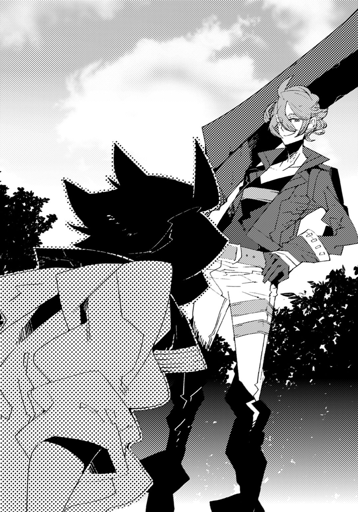
まだ完璧ではない。右手以外に負担がかかっている。
「もう一度......お願いします......！」
こみあげてくる吐き気をこらえながら、フィルは頼み込んだ。
「いいよいいよ。でも、あんまり無理してぶっ倒れないようにね」
アイゼンは、薄い笑みを浮かべながら請け負ってくれた。
それにしても、驚くべきは彼の体力だ。いくら石の鎧があるとはいえ、これほど継承の力を受け続けているというのに、まるで疲れを見せない。底知れないというのはこのことだった。
（さすが団長......俺も負けてはいられない！）
息を吸い込み、ゆっくりと吐きながら、心を落ち着かせた。
あと少しなのだ。もう少しで摑める。
確証はないが、なんとなく自分で分かっていた。
（今あるのは、自分の意識と右手だけ......他はいらない......必要ない......）
頭が朦朧とする。なにも考えられなくなっていた。
ゆらり、ゆらり、と揺れながら、フィルは次第にたった一つのことだけを何度も胸中で呟くようになる。
（意識と右手......意識と右手......俺はなく......力だけがあって......）
目を閉じた。暗闇の中、静かな風の音だけが聞こえる。
（意識と......右手......己ではなく......力のみを寄せ集めて......）
別ものとして――分離させる。
「......ヴァースキアじゃなく......俺の、力として......！」
目を開いた。掌を翳し、一本ずつ、指を折り畳んでいく。
「行きます、団長！」
フィルは足を踏み出し、肘を引くと、構えた。
雑念はない。望みはただ一つ、届かせること。
己のこの、真っ直ぐな想いを。
疾走する。最中で腰を捻ると、ぐっと握った手に力を込めた。
拳に魂を宿らせるのだ。今この瞬間、竜と、自分の――命を。
そして。
「はああああああああああああっ！」
解き放つ。
途方もない打撃音が鼓膜を打った。
何度もこちらの攻撃を受け続けてきたアイゼンが遂に吹き飛んだ。
――が、すぐに空中で身を翻し、着地する。
「......ダメか」
呼吸を整えながら、ゆっくりと手を下げた。
アイゼンがこちらの攻撃を堪え切れている状態では、完璧とは言えないだろう。
直後、体力を使い果たしたのか、均衡を失った体が自然と傾いていき、フィルは無残に崩れ落ちた。
「うーん。惜しいねえ。本当に、あと一歩というところなんだけど」
アイゼンが腕を組んで、唸る。
「もしかしたら、気持ちの問題かな。やっぱり、何が何でもやらなきゃっていう心が、訓練じゃ出にくいのかもしれない」
「な、なるほど......そういうものですか」
息も絶え絶えに、フィルは相槌を打った。
「まあ、今日はこのくらいにしておこう。またやればいいさ」
「す......すみません......」
まだやれる、と言いたいところだったが、最早、四肢がまるで言うことを聞いてくれない。断念する他なかった。
「ところで、どうする？ ご飯食べに帰る？」
アイゼンが、こちらの顔を覗き込んできた。
「いえ......もうしばらく休んでから行きます。ちょっと動けないので」
正直に告白すると、アイゼンは「はは。無理もないね」と納得した。
「じゃあ、僕は先に行くから。ジラには事情を話しておくよ」
手を振ると、彼の体を覆っていた石が崩れ、ぼろぼろと落ちていく。アイゼンは地面に落ちていた自分の得物を拾うと、こちらに背を向けた。
限界を迎えたこちらと違い、去っていく彼の後ろ姿からは、まだ余裕を感じられる。
竜王の力を持つこちらよりよほど人間離れしていた。
フィルが空を見上げると、太陽は既に沈み、星が出ている。
「悔しいなぁ......」
結局、会得できなかった。初めてすぐどうなるというわけではないということくらいは、分かっていたのだが。
「......フィル？」
ふと――その時、声がした。近づいてくる足音がして、しばらくすると、見覚えのある顔が前に現れる。
「リタ......どうしたんだ？」
尋ねると、アムリタはしゃがみ込んでこちらの顔を覗き込むようにして答えた。
「アイゼンとどこかに行ったままいつまでも帰ってこないから。探してたの」
どうやら出ていくところを見られていたようだ。心配をかけて悪い、と謝ると、アムリタは首を横に振った。
「いいの。でも、何をしていたの？」
アムリタに体を支えられながら起き上がり、フィルは言う。
「竜の力を色んな形で使いこなす方法を、練習してたんだ」
アイゼンから言われたことをはじめ、全てを話した。
「人間は面白いことを考えるのね。でも、そんなことが出来るの？」
「いや、ダメだった。もうちょっとだと思うんだけどな」
「......そう。残念ね。フィル、ひどく疲れてるみたい」
ほんのわずか、アムリタの眉間に皺が寄る。心配をしてくれているのかもしれない、と思った。
「これくらい、リタを守るためにはなんでもないことだ」
フィルとしては、アムリタを安心させるために言ったことだ。
しかし、彼女は何故かほんの少し顔を曇らせ、俯いてしまった。
「......ごめんなさい」
しばらくしてから、小さく呟く。
「どうして、謝る？」
「元々あなたには関係のないことだったのに、辛い思いをさせてしまっているわ。余計なことに巻き込んでしまった」
「気にするな。俺が好きでやってることだ」
「でも......今の役目を担うのは、あなたである必要はなかった」
アムリタが視線を上げる。紅色の瞳にこちらの姿が映った。
「別の誰かでも良かった。あなたは逃げても良かった。だけどこうして私の為に戦って、傷ついて、倒れている。そのことが、申し訳なく思うの」
「いや、これは俺でなきゃダメだったんだ」
フィルは、無理矢理に体を起こし、アムリタを見つめる。
「あそこで俺がリタと出会ったからこそ、ここでこうしてるんだ。これが他の誰かだったら、お前やヴァースキアの頼みを引き受けなかったかもしれない」
「そうかもしれない。けど......」
罪悪感を覚えているのだろう。フィルはアムリタの気持ちを察した。
「だが仮に俺が役目を放棄したとして......リタは他に頼る人がいたのか？」
「......いいえ。いないわ」
項垂れたまま、アムリタが首を横に振る。
「両親は？」
「分からない。物心がついた頃にはもういなかった。だから、人間で言うところの『家族』と呼べる人は、私を守ってくれていたヴァースキアしかいなかったわ」
だが彼もまた、フィルに力を託し、命を落とした。
アムリタは、己を守ってくれるもの全てを亡くし、一人ぼっちになってしまったのだ。
「......だったら、尚更だ」
フィルは笑った。体力が尽きていて、口元の筋肉を動かすだけでも大変だったが、そうしなければならないと思ったのだ。
「俺はあまり運命って言葉が好きじゃないが、今回ばっかりは、そう言っていいんだと思う。俺がヴァースキアの代わりに、大好きなリタの傍にいる」
「......フィル」
アムリタが唇を震わせた。表情は変わらない。しかし彼女は、自分の中に生まれた何かを嚙み締めるようにして、胸の前で手を握った。
「ありがとう......」
紡ぎ出された言葉に、フィルはもう一度、笑う。
「それにリタには俺だけじゃない。団長やジラさん、アンジェにクレスもいる」
「......そうね。私は一人ではないのね」
「ああ。だから、気に病むことなんてない。俺は俺の意志で戦っているんだ」
「......分かった。ただ約束して。あなた自身を大切にしてほしい。たとえ、何が起こったとしても」
アムリタに対して、フィルは頷いた。
虫の音だけが微かに聞こえる中、二人で、静かに頭上を仰ぐ。
闇に染まった天がある。浮かぶ月が、自分達をおぼろげに照らしていた。
薄らと立ち昇る靄が、やがては空気に溶け消えていく。
岩を集めて作られた簡素な囲いの中に、たっぷりの湯が張られていた。
フィルは足先をつけ、息を吸い込んで止めると、一気に体を沈めていく。
「いっ......！」
熱さが肌を焼き、至る所に痛みが走った。
昼間、アイゼンに付き合ってもらった訓練の際に負った傷が、疼いているのだろう。
だがしばらくすると少しずつ治まっていき、フィルはようやく人心地をつくことが出来た。
風呂の縁に背を預け、目を閉じる。慣れた温度が肌にじわりと染み込んでいった。旅の疲れが癒されていくような気がする。
村の近くに温泉が湧いていたのは、僥倖だった。しかも、擦り傷、打ち身への効能があると聞いては、入る以外の選択肢がない。
「あはは、ご苦労様」
湯気の向こうから声が聞こえた。アイゼンのものだ。食事の後、誘われて一緒に入りに来たのである。
「はい。でも、結局、ものにはなりませんでした」
フィルは温泉の成分か、白く濁った湯の中で手を何度か開閉した。
一刻も早く竜の力を自在に使いこなし、団や、なによりアムリタの役に立ちたいというのに、このままではどうなることか。
「まあ、すぐには無理だよ。これから繰り返してやっていけば、なんとかなるんじゃないかなあ」
「本当ですか!?」
「いや適当だけど」
「適当ですか！」
勢い込んだのに拍子抜けするような答えを返されたので、フィルは転んで湯船に沈んだ。アイゼンが大きな声で笑う。
「しかし、この温泉はいいねえ。まさかこんなところで湯に浸かれるとは思ってなかったよ」
アイゼンが嬉しさを嚙み締めるように言った。
確かに、宿屋によっては体を拭く程度の湯を用意してくれることはあるが、基本的に旅の途中は川で水浴びが出来れば良い方で、体を清潔に保つために何も出来ないのが普通だ。
よく味わっておこう、とフィルは更に体を深く沈めていった。
と、そこで、
「いえええええいっ！」
不意に夜空を何かの影が横切り、フィルの目の前で派手な水柱が立ち上がった。かと思うと、「ひゃっほおおおおお！」という大声と共に、誰かが立ち上がる。
「クレスは元気だなあ」
アイゼンがほのぼのとした様子で言うと、静寂を乱した闖入者――クレスは濡れそぼった髪の毛を両手で撫でつけた。
「はい！ オレは元気！ やる気！ 根気に満ち溢れた新進気鋭の竜伐者様ですよ！ ひゃあああ！」
奇妙な叫びと共に、クレスは無造作に後ろへ倒れていった。再び水飛沫が舞い、フィルは目元を腕で覆う。
「おい、クレス、あんまり騒ぐなよ」
フィルが注意すると、クレスは胸を張って自分を指差した。
「なに言ってんだ！ 温泉だぞ、温泉！ こんな機会、滅多にないんだから、はしゃぐしかないだろ。盛り上がるしかないだろ！」
「む......確かにそうだな。よし、じゃあ、俺もはしゃぐぞ！」
「おう、来いよ相棒！ いっせーのーでっ！」
『ひゃっほほおおおおおおおおおおいっ！』
フィルはクレスと共に、その場で跳躍して、湯舟に沈んだ。
「ちょっと！ フィル、クレス、うるさいですよ！ 静かにしてください！」
その時、隣から、アンジェの声がした。クレスが「おっ？」と明後日の方を向く。
フィルもまた視線を傾けると、そこには岩が山となって積み上げられていた。簡易的な壁となっていて、越えた先は女性専用の浴場が存在している。
「......なるほど。くっくっく」
なにやら怪しげな笑いと共に壁に近づいていくクレス。
「馬鹿が二人もいると、本当に騒がしいわね。......それにしても、小さい村だからあんまり期待してなかったけど、中々のものね」
「本当ですね。広くてゆっくりできそうです」
ジラの声もした。どうやら、二人して風呂へ入りに来たらしい。
「丁度いいわ。いい加減、汚れを落とさないときつくなってきたから」
「............。そうですね」
「ん？ なによ、その間は。......あ。あーあーあー。そういうことねー」
ジラが、なにかに気づいたかのように声の高さを上げた。
「大丈夫よ、アンジェ。あなただってすぐ大きくなるんだから。気にすることはないわ。本当、その、気にする必要ないから。ないから。ね？ ないのよ」
「何度も繰り返さないでください！ 別に気にしてません！ 全く、胸の大きさがなんだっていうんですか。下らないにもほどがあります！」
「あたしは背のことを言ったんだけど」
「えっ」
長い長い沈黙があった。
「......お、お気遣いありがとうございます」
アンジェの声が震える。すると、間もなく、爆発したかのような笑いが響き渡った。
「あはははははははは！ ごめーん！ そっちも気にしてたかー！ いやあ、ほんとう、鈍い女でごめんね、アンジェー！」
「ううう、うるさいですね！ だから！ 気にしていないと！ 言ってるじゃないですか！ ジラさん本当！ 本当に失礼ですよ！」
「まあまあまあ。許してよ。ほら、なんなら触ってみる？ ん？ そうしたらこう、あなたにもなんらかのあれがあれして、少しは大きくなるかもよ？」
「なんですか、その、何もかもが曖昧な論説は！ いいです！ 近づいてこないでください！ 押しつけないでください！ ちょ、本当に、もう、うぷっ、やめてください！ やめて！」
「ほらほら。ぎゅーっとしてあげるから。堪能しなさい。陥落しなさい。屈服するのよ！」
「い――や――っ！」
悲痛な叫びが夜の闇にこだまする。
「あとほら、揉んであげるわ。そうしたら大きくなるわよ。異性じゃないけど少しは効果あるかも。ほらほらほら」
「ちょ......まっ、やめてください！ その話は俗説だって聞いたことが......やっ......あんっ！」
「可愛い声出すわねぇ、愛いやつよのぅ」
「ジラさんっ......言い方が......完全におっさんで......やんっ！」
思ってもみない展開になってきて、フィルは思わず赤面した。
アイゼンの方をちらりと窺うと、いつもと変わらない様子で温泉を楽しんでいるようだ。やはり自分とは格が違うらしい。
一方、クレスはといえば――。
「ん？ おい、クレス、なにしてるんだ？」
想定外の行動を取っているクレスに、フィルは問いかけた。
あろうことか、彼は岩壁に足をかけ、よじのぼっていたのだ。しかも全裸で。
「馬鹿野郎、お前、あんな会話を聞かされて黙っていられるかってんだ。ここは登って現物を拝ませてもらうのが筋ってもんだろ」
「待て。それは犯罪だろう！」
「いいか、フィル。男には過ちだと分かっていてもやらなくちゃいけないことがある。姐さんはともかく、あのアンジェ相手だってのがやや不服だが......それでも、いや、だからこそ！ オレは登る！ この神秘を隔てる壁を！ やらねば男である意味がないのだ！」
きりっとした顔でこちらを振り向くクレス。
「そ、そうか、男だからか！ ......いや、しかし！ 男であるからこそ、みだりに女性の裸を見てはいけないんじゃないか!? やっぱりやめるべきだ！」
フィルは近づき、クレスの足を引っ張った。
「あ、お前、やめろよ！ お前だって見たいんじゃないのか！」
「べ、別に俺は！ 大体、勝手に覗くなんて失礼だ！」
「あのなあ、オレはそういう、おためごかしみたいな台詞を聞きてえわけじゃないんだよ。いいか？ さっき声は聞こえなかったが、あの二人がいるということは、リタだっているかもしれないんだぞ？」
「......え」
「お前、リタの裸を見たくないのか？ 偽りなく、堂々と言えるのか？」
フィルの頭に、旅立つ前の服屋でのことや、崖を登っていた時のことが蘇る。
薄布一枚となったアムリタの姿。透明な肌に、浮かび上がる体の凹凸。あの時、はっきりと見えなかったものを、この壁を越えれば目に出来るかもしれないのだ。
「そ、それは......いや......」
ダメに決まっている、と言いたかった。主張したかった。自分の正義を信じたかった。
だが、何かが引っかかっている。喉につかえて、言葉を形に出来ないでいる。
「素直になれよ――フィル」
クレスが爽やかな笑顔のままで、岩を摑んだ方とは別の空いた手を、差し出してきた。
「オレ達、一緒に戦う仲間だろ？ 噓や誤魔化しは、臆病な自分を守る剣や鎧と一緒だ。互いに身のまま、心のまま......ありのままでぶつかろうぜ！」
「ク、クレス......！」
なにやら無駄に感動する。間違っていたのは自分の方かもしれないとすら思った。
「来いよ、フィル。さあ――行こうぜ、あの壁の向こう側へ！」
クレスが誘いをかけてくる。フィルは迷い、逡巡し、そして――。
「そんなに見たいなら、行ってくれば？」
アイゼンに腕を摑まれた。
『......へっ？』
二人同時に間の抜けた声が出た直後。
「はい、いってらっしゃーい」
突如として、凄まじい勢いで、宙に投げ飛ばされた。
『ええええええええええええええええ！』
聖竜との契約で得た、尋常ならざる膂力ならではの荒業である。
......などと感心している場合ではないのは分かっていた。
どばんっ、という音と共に、フィルは自分の体が湯舟に沈んだことに気づく。
「......ぶはっ！」
急いでもがき、湯から顔を出した。
「む、無茶苦茶するぜ、団長......」
クレスが咳き込みながら、呻く。
「本当だ。死ぬかと思った......ぞ......」
答えながらフィルはゆっくりと顔を上げて――硬直した。
風が吹き、湯気が取り払われていく。
目の前に、複雑な紋様が現れた。どこかで見覚えがあると思ったら、聖竜との契約の証だ。しかし、クレスが見せてくれたものでも、アイゼンのでも、ジラのでもなかった。
滴る水が伝い、流れていくのは、丸みを帯びた艶やかな肌だ。
中央にある『線』を基点として、左右に分かれたそれのうち、契約の証――【爪痕】が刻まれているのは右側だった。
（これは......まさか......）
自分の考えが当たっていると、すれば。
「......アンジェの、お尻か？」
目の前の誰かが、振り返った。同時に、フィルは視線を上げていく。
綺麗な形のヘソを辿り、体の曲線は、やがて首の下辺りに辿り着いた。
そこには、控え目だが、はっきりと膨らんだ二つの双丘がある。
無論、先端にある、桜色の突起すらも。
アンジェがこちらを見つめている。彼女はとんでもないものに出くわしたように瞠目していたが、やがて、瞬く間に全身を赤く染めていくと、
「き......き......」
一気に感情を爆発させた。
「きゃあああああああああああああああっ！」
フィルの視界で火花が散る。頰を思いきり叩かれたのだと分かった。
「ななな、なんですかなんなんですかどうしてここにいるんですかどうしてわわわわわわわたしの裸をあわわわわわとととと殿方になんて見せたことなかったのにいいい！」
「だ、だ、大丈夫だ、アンジェ！」
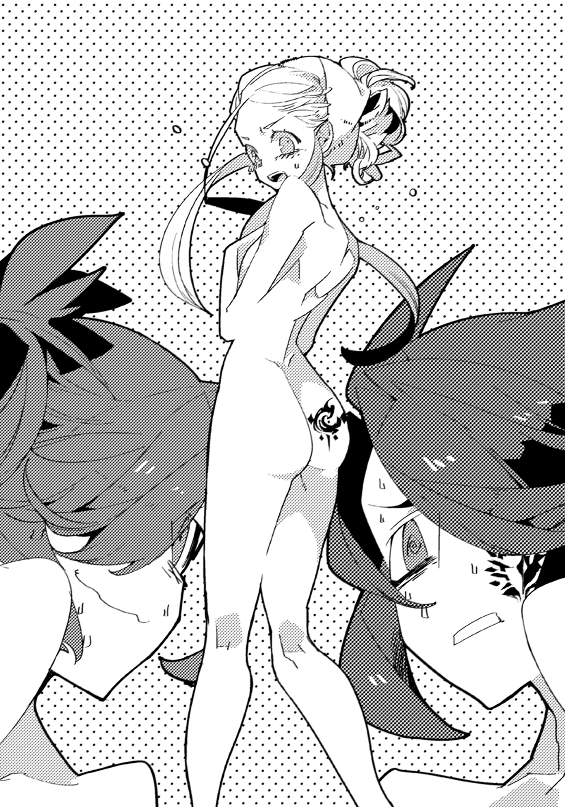
落ち着かせるつもりで、フィルは断言する。
「たとえ小さくとも――お前のおっぱいは、綺麗だ！」
もう一度叩かれた。しかも往復で。
「許せません......っ！ 成敗するから、そこに直りなさい――ッ！」
「ぎゃああ！ わわわわ、悪いっっ！ 事故なんだっ！」
羞恥の入り混じった金切り声を背に、フィルは慌てて逃げ出す。岩をよじのぼり、急いで元の男湯へ戻ろうとした。
「お、おい！ フィル！ オレを置いていかないでくれ！ 見捨てるな！ ちょっと！ 仲間だろ！ なあ！ 全てを分かち合おう！ 主にその、そう、これから始まる地獄とか！」
「悪い！ 男としてその真の価値を全うしたお前のことは忘れない！ きっと！ 絶対！ だから、なんていうか――後は任せた！」
「てめえええええええええええええええ！」
後ろからクレスの絶叫が迸る。だが、聞こえていない。いや、聞こえない振りをした。大変申し訳ないことに、それどころではない。
「いい度胸してるわねえ、クレス。その勇気に免じて歓迎してあげるわ」
ジラが妙に優しい声色でクレスに話しかける。
「いいいいいえ、姐さん、とんでもないです、オレはその、オレはなんていうか、なな、なんなら今すぐ帰りたいところでして帰りますので帰る！」
「まあ、待ちなさいよ」
「ひいいいい！ 違うんです！ わざとじゃないんですうう！」
「いいじゃない。こっちのことはたっぷり見たんでしょ？ だったら代わりにあなたのもじっくり見せてもらいましょうか。そうねえ、あそこの木の枝に引っかけて明日の朝までぶら下げておくってのもいいかもね。きっとこれから来る村の人とかを存分に楽しませると思うわよ」
「やあああめええてえええええええ！」
絶叫が迸る。フィルは何度もすまないと謝罪しながら、ようやく元の場所へと戻った。
「あ、危なかった。本気で危なかった」
アイゼンとの訓練など比べものにならないほど、死を間近に感じた気がする。
「やあ、大変だったみたいだねえ」
元凶であるアイゼンが吞気に笑った。
「勘弁してください、団長！ よりにもよってなんてとんでもないことをするんですか！」
「えー。見たがってたから協力してあげようと思ったのに」
その時、岩壁の向こう側で「そそ、そんなところをそんな風にするのはらめえええええ！」というクレスの悲惨な声が聞こえてきた。なにをされているか、想像したくもない。
（......そういえば、女湯にリタはいなかったな）
咄嗟のことでちゃんと観察出来たわけではないが、姿を見かけなかったように思った。
（まあ、いたらいたで立ち直れなくなってたから、幸いだったが......）
ひとまずそろそろ上がって、ジラとアンジェに事情を説明するまで、外で待機していた方がいいだろう。クレスの為にも。
「団長、すみません、お先に失礼します」
断りを入れてから、フィルは温泉から上がると、岩で作られた洗い場の床に立った。
風呂場の入り口に備えつけられた扉に向かう為、歩き出そうとしたが――。
がらり。
突然、扉が開いて誰かが姿を見せた。
「あら。フィルも来ていたのね」
「でえっ!?」
動揺のあまり、自分でも聞いたことのないような声が出る。
当たり前だ。いきなり、とんでもない人物が現れたのだから。
「リ......リタ!?」
名を呼んだフィルに、アムリタはいつも通り茫洋とした顔を向けてきた。
「ええ。私よ」
だが、顔以外がまるでいつも通りではない。
彼女は、体に何も身に着けてはいなかった。
早い話が、素っ裸だったのである。
「ななな、なんで!? こ、ここ、男湯だぞ!?」
「......？ お風呂でしょう？ ジラとアンジェに誘われて来たのよ」
まるで理解できてない様子で首を傾げるアムリタ。
「いや、そうだけど！ お、お前は女性で！ だからして女湯の方に！」
「そんな決まりがあるの？ 知らなかったわ。人間は難しいのね」
顎に手を当て、考え込むアムリタ。
しかしフィルとしてはそれどころではない。
アムリタのきめこまやかな肌や、ほどよく膨らんだ乳房、なだらかな線の下にある秘所ですらも、丸見えになっているのだ。
「ああ、あの、リタ、だから、その、お前は女湯へ――」
「......フィル？」
「なんだ!?」
突然尋ねられたので、思わず声が裏返ったまま答えると、アムリタはこちらの体の下半身を指差した。
「なぜあなたのここは形状が変化しているの？」
「み、見ないでくれえええええ！」
顔を隠したまま、全速力でフィルは駆け抜け、脱衣所で服を着た。
「ねえ、教えて。どうしてそこはそうなっているの。なにが原因でなったの。そうなるとどうなってしまうというの。なにがあるの。気になるわ。教えて、フィル」
背中に柔らかな感触が伝わってくる。アムリタが裸のままなにかを押しつけてきていると理解し、そのなにかがなんであるかを悟った瞬間、フィルは全身が熱くなった。
「そそ、その問いにだけは、なにも言えないっ！」
素早く答えると、フィルは転がるようにして風呂場を飛び出したのだった。
......その後、ジラとアンジェへ状況を説明したことで、フィルはどうにか叱責を免れる。
だが、しばらくの間、アムリタによる「どうしてあの時はああなったのか」という質問攻撃に、フィルは悩まされ続けたのだった。
旅 八日目
アイゼンから指導を受けてからというもの、フィルは一日としてかかさずに鍛錬を続けてきた。しかし、竜の力に直接的な攻撃以外の変化を持たせるやり方は、未だ会得するに至っていない。
アイゼン曰く、『何かでコツさえ摑んでしまえば、後はなんとかなると思うんだけどなあ』とのことだったが、今一歩が及ばなかった。
「まあ、普通の力と違うからな。そう上手くはいかねえよ」
旅に出て八日目の夜。道中で寄った町の酒場で、クレスが蜂蜜酒を飲み干しながら慰めてくる。
既に自分が行っている訓練については、団員全員に話していた。
「確かにそうだが、こう何度やってもダメだとさすがに自信をなくしてくるな」
フィルは、唸りながら焼き魚の塩焼きにフォークを突き刺した。
「気にすんな！ ひたすらに努力、努力、努力だ。そうすりゃ結果はついてくる！ このオレが言うんだから間違いはねえ！」
「クレスに保証されたところで、何の確実性もありませんけどね」
冷淡に横槍を入れながら、アンジェは優雅な手つきで羊肉の香草焼きをフォークで切り分ける。
「そりゃどういう意味だよ。この将来有望なオレの眼力を軽視するつもりか？」
「そういうのは自分で言うもんじゃないわよ、クレス」
大きなジョッキに注がれた麦酒を喉の奥に注ぎ込んだ後で、ジラが注意した。
「誰も言ってくれないから自分で言ったんですよね」
「んなっ!? んなことねえよ、しょっちゅう言われてるわ！」
「へえ。そうなんだ。誰に言われたの？」
野草のサラダを美味しそうに口へと運びながら、アイゼンが興味を惹かれた様子で訊く。
「............。昔、うちのばあちゃんがあんたはやれば出来る子だって言ってたっす」
「思いつかなかったからって、無理やり過去の思い出を掘り起こしてこなくても......なんだか泣けてきたわ」
「すみません。さすがに私もやり過ぎました」
「同情すんなよ！ けなしてくれよ！ 余計に悲しくなってくるだろ！」
ジラとアンジェが沈痛な面持ちとなったので、クレスは抗議するように机を叩いた。
「リタ、この鳥のやつは美味いぞ。食べたか？」
「いいえ。肉の焦げた匂いがするわね。でも不愉快ではないわ」
「そういうのは香ばしいというんだ」
「そうなの。勉強になるわ。この土に埋まっていた植物に、動物性の脂肪がかかったものはなんていうのかしら。気になるわ」
「馬鈴薯のバター炒めだ......いや、リタ、間違ってはないが、その表現はちょっと食欲をなくしそうになるぞ」
「じゃあこの牛の死体を焼いたものに果実の搾りかすをかけたものは？ 教えて」
「ステーキと林檎調味料な！ いや、だから！ 興味を持ってくれるのは嬉しいが、どんどん申し訳なくなってくる！ 店の人に！」
フィルの嘆きを他所に、アムリタは淡々と食事をたいらげていった。どことなく楽しんでいるようなので、何よりと思うしかない。
「お前らオレが苛められてるのになに仲良くしてるの？ 青春なの？ 独り身は死ねってことなの喧嘩売ってるの？」
こちらのやりとりを眺めていたクレスが、じろりと睨みつけてきた。
「なにを言ってるんだ。このくらい、普通だ。なあ、リタ」
「ええ。クレスが普通じゃないのよ」
フィルはアムリタと顔を見合わせ、頷き合う。
「よし分かったやっぱり喧嘩売ってんだなてめえら！ 買ってやろうじゃねえかうきいいい！」
なぜか余計に憤り、クレスが奇妙な声を上げた。
「うるさいですね、クレスは。嫉妬は見苦しいですよ」
「嫉妬じゃねえよ！ オレは全世界の男を代表して言ってんだよ！」
ため息と共に言ったアンジェに、クレスが食って掛かる。
「仲良いのはいいことじゃないか。クレスだってそういう子がいるだろう？」
「いませんっ!!」
「あっはっは。物凄く堂々と言われてしまったよ、ジラ」
アイゼンが振り向くと、ジラは三杯目のジョッキを空にしていた。
「まあ、いないのにいるって思い込んでるよりはマシじゃない」
「マシというかそれ自体がかなり問題なのでは......確かにクレスは近いうちにそうなりそうですけど」
「お前はほんと息をするようにオレを罵倒するよな」
ジラに答えたアンジェをクレスは非難するように見る。
「......まあ、そんなどうでもいい話はともかくとしてだ。あれだな。せっかく新しい技を使えるようにしているっていうなら、上手くいった時のことを考えて、それぞれに名前をつけねえとな」
「名前？ どうして？」
紅蜜の入った陶器を傾けながらフィルが尋ねると、クレスは胸を叩いた。
「だってそっちの方が、燃えるだろう!?」
「そうなのか!?」
「敵を殴る時に黙ってやるより、なんかすごい能力名つけて『必殺！』って感じでやった方が爽快じゃねえ!?」
「そうかもしれないっ!!」
物凄く納得した。が、アムリタを除いた周囲の者達は複雑な顔をする。
「頭が単純な奴が二人いると疲れるわ......」
「クレスとは別方向の面倒臭さですよね」
「あんまりややこしい名前つけると覚えきれなくなるよー？」
ジラ、アンジェ、アイゼンの言葉にフィルは焦った。
「え、いや、ダメですか？」
「ダメではないけど、まあ、なんていうか、ダメってことはあるわね」
「よく分からないんですが!?」
ジラの曖昧な答えに益々焦りが増すが、彼女はそれ以上続けてくれない。
「まあ、気にするなって。こいつは男にしか理解できねえことさ」
「団長もさりげなく否定してた気がするが......」
「......。とにかく。お前の技、オレがつけてやるよ！」
あれ、流された。と思ったが、ひとまずは追及せず、フィルはクレスの話を聞くことにした。
「体の各部分に力を振るっていうのなら、まずは右手と左手だよな。そーだな。ここはあれだ。【竜王の掌】ってのはどうだ？」
「おお。なんかいいな」
「元になったものはなんなの？」
ジラから飛んできた質問にクレスは素早く返す。
「俺の直感です！」
「......ああ、そう。続けて」
突っ込む気も失せたのか、ジラは運ばれてきた蒸留酒を吞み出した。
「ういっす！ で、次は足だろ。足は【竜王の脚】で、どうだ！ んで、目は【竜王の眼】。うん、これだ！」
「おおおおお、クレス、ありがとう！ 確かに燃えてくる！」
「......ちょっと質問なんですが」二人ではしゃいでいると、アンジェが手を上げた。「それをいちいち、力を使う度に言うんですか？」
「当たり前だろ。それが浪漫ってやつだぜ」
「ああ。浪漫ってやつだ！ 浪漫ってなんなのかは知らないが！」
「そうですか......男って理解出来ませんね......」
クレスの迷いない返答にアンジェは言って、羊肉を飲み下した。
「僕もよく分からないんだけどねえ？」
アイゼンが微かに笑みを浮かべながら首を傾げた。
「そうですね。じゃあ、馬鹿のことはよく分からないということにしておきます」
「フィルは馬鹿ではないわ。訂正して」
「あれ、リタちゃん、オレは!?」
クレスがさりげなく外されていたことに気づいて指摘するも、アムリタは何も言わずに皿を一枚空にした。
「まあ、先駆者ってのは中々理解されないものさ......オレは負けねえぜ」
「おお。クレス、なんだか大人だ。憧れるぞ」
「ふふ、止せよ。お前もそのうち、こっちの領域に辿り着くさ。さあ、オレたちの友情に乾杯！」
ジョッキをぶつけ合い、フィルはクレスと意気投合する。
「......まったく、あなた達は本当、どうでもいいことばっかり言ってるんだから」
その時、どん、という鈍い音がして陶器が机に置かれた。
「そんなことだから、いつまで経っても未熟なんでしょぉ？」
ジラだ。しかし、妙に喋り方がおかしい。呂律が回っていない気がした。
ふと見ると、彼女の机の上には大量の酒瓶とジョッキが転がっている。
「あああ！ ジラさん！ どれだけ吞んでるんですか！」
アンジェが慌てて立ち上がった。
「あなたねえ、酒吞みが自分の腹に入れた酒量を覚えてるうちはまだまだよぉ」
「なに格言みたいにろくでもないこと口にしてるんですか。もうダメです！」
果実酒の入った陶器を取り上げようとしたアンジェを、ジラはするりとかわした。
「あはは。あたしは団の攪乱役よ？ あなたに捕まるようなへまはしないわよん」
手を伸ばすアンジェの頭を片手で押さえつけながら、ジラは尚もアルコールを摂取していく。
「ちょっと、アイゼンさん、止めてください！」
アンジェが抵抗しながら、アイゼンに助けを求めたが、
「無理だよー。吞む前ならともかく、吞んだ後のジラを止めるのは僕にだって不可能だよ」
と、彼は吞気そうに自分の葡萄酒を味わうだけだった。
「ああ、良い気分......でも暑いわねえ」
熱を帯びたように頰を少し赤くしながら、ジラは自分の服に手をかける。
「よっしゃー！ こんなのいらなーい！」
かと思うと、突然、思い切り衣服を脱ぎ棄ててしまった。
白い肌と豊満な乳房が目の前で揺れ、フィルは硬直する。
呆気にとられる面々の前で、彼女は下着すら外し、今度は下穿きに手をかけ始めた。
周囲の客がざわめき、こちらを注視してくる。
「ちょ......ちょっとおお！」アンジェが両手を広げて抱きつくようにし、ジラの肢体を隠した。
「ダメですよ、何しているんですか！」
「脱いでるのよ」
「見て分かりますけどそんなことを訊いていないの分かってますよね!? 着てください早く早く！」
「うるさいわねぇ。じゃああなたも脱げばいいじゃないの」
言って、ジラはアンジェのローブに手をかけた。
「どうしてそういう思考になるんですかやめてくださいいい！」
抵抗するも、アンジェは徐々に衣服を剝ぎ取られていく。
あっという間に、露な姿となった女性二人を前に、フィルは完全に思考が停止した。
「あーあ......また始まったか。姐さん、泥酔するといつもこうだからな......」
クレスが困ったように顔を顰める。
「......前にあったお風呂の時みたいにこう、盛り上がらないんだな？」
冷静な態度にフィルが不思議がっていると、クレスは何やら悟った風な顔で遠くを見つめた。
「ああも堂々と見せられると、逆に興奮してこないんだよな」
分かったような分からないような気持ちである。これも彼の言う浪漫というやつなのだろう。
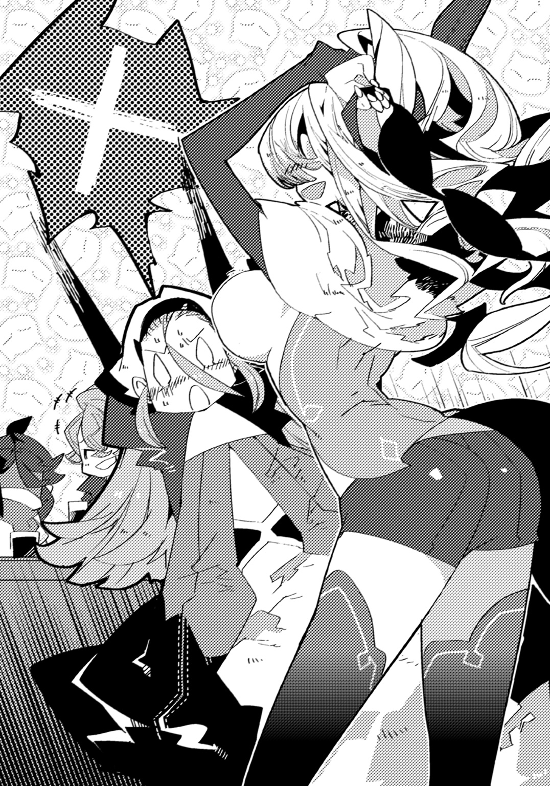
「ああ、はいはい。ジラ、その辺りにしておこうねー」
と、アイゼンが言って、二人を引き剝がすと、まずはアンジェの衣服の乱れを直した。
その後、ジラを羽交い締めにすると、無理矢理に服装を正していく。
「なによぉ、アイゼン、あたしから自由を奪う気ぃ？」
「自由は時に大きな責任が伴うんだよ、ジラ」
妙に重いことを言って、瞬く間にアイゼンはジラの状態を元通りにしてしまった。
「......騒がしい人達ね」
アムリタが呟くように口にして、混乱する様子を眺める。
「この旅の道中、ヴァースキアと暮らしていた頃には、経験出来なかったことばかりが起こるわ」
「......嫌か？」
気遣って尋ねるフィルだったが、アムリタは首を振った。
「いいえ。とても楽しいわ」
抑揚がなく、感情の色さえ含まれてはいなかったが。
その口元には、微かな、よく観察しなければ分からないほど微かな――笑みが浮かんでいて。
フィルは、彼女の言葉が、真実であると思った。
第四章 導かれし場所で
自らの意思を持つかのように浮かぶ宝珠を追って、ようやく辿り着いたのは、ある森の奥深くにある地だった。
まるで巨人がそこだけ木々を捥ぎ取ってしまったかのようにぽっかりと空いた場所には、色とりどりの花々が咲き乱れ、大きな湖が広がっている。
頭上を仰げばそこにあるのは、轟々と流れ落ちる荘厳な滝だ。
「この辺りに二つ目の宝珠があるのかしら」
ジラが周りの様子を確かめるようにして、あちこちに視線を飛ばした。
直後――アムリタが持っていた宝珠が、するりと彼女の手を離れて浮遊する。かと思うと、まるでこちらを導くようにゆっくりと移動し始める。
「こっちに行けばいいみたい」
リタが歩き出そうとしたが、ふと足を止め、ぽつりと呟いた。
「......近くに聖竜がいるわね。それが【竜賢神】なのかしら」
突然のことにフィルは驚き、感覚を研ぎ澄ませてみたが、特に気配は感じない。
「全然そんなふうには思えねえけどな。そんなもん、分かるのか」
クレスが不思議そうに問うと、アムリタは再び進み出しながら答えた。
「はっきりとは無理だけど、大まかなところは。竜は違う竜の存在を感知できるの」
便利な能力だ、とフィルが感心していると、アムリタは湖を回り込んでいった。
「ただ、厄竜は別。何故か、近づいてくることも、存在していることも分からないわ」
「妙な話ですね。向こうはアムリタのような竜を『匂い』で判別できると言っていましたが。似ているのに、厄竜と聖竜はやはり何か根本的な違いがあるということでしょうか」
アンジェが片眉を上げて疑念を呈する。
「それを言えば、どうして人間に害を及ぼす竜とそうでないのがいるのかってことも、まだ不明なのよね」
ジラが首を傾げた。
「そうね。......ヴァースキアにもっとよく聞いておけばよかったわ」
後悔しているように囁いたところで、アムリタは足を止める。
「ここね」
フィルは目の前で展開される状況に、驚いて、目を瞬かせた。
激しく湖に落ち続ける滝。その裏に、まるで水のカーテンに隠されるようにして、洞窟があったのだ。
「これは凄いねえ。ぱっと見じゃ気づけないよ」
アイゼンも腕を組んで感心しているようだった。
再び歩み始めたアムリタの背を、フィル達は追う。
うるさいくらい響く水流の音を背に、洞窟へ足を踏み入れると、フィルは自分の肌が粟立つのを感じた。外と比べると、まるで真冬かと思うほどに寒い。時折落ちる水滴の音がいやに大きく木魂した。
静けさに満ちた洞窟の内部は薄暗く、背後からの明かりがなければ、足元さえおぼつかなくなってしまいそうだ。
転ばないように気をつけながら、先へ先へと進んでいった。
すると、いきなり楕円形に開けた場所へと出る。
それまでの通路とは段違いなほどに規模があり、これなら竜も十分に暮らしていけそうだった。
「誰かいるの？ ヴァースキアと共に暮らしていたアムリタよ。目通りを願いたいの」
アムリタが声を発すると、洞窟内に反響していく。
最奥の方に影があったが、薄暗いため、傍まで行かなければ全容が判然としなかった。
返事がなかったので、フィル達は近づいていく。
少しずつ距離を詰めていき、やがて、ようやく、相手の姿が分かり始めた――。
その時。フィルは体を竦ませた。
灼熱色の肌。綺麗に生え揃った鱗。馬のたてがみを思わせるような、背筋から生えた豊かな毛。長く大きな尻尾の先には幾つかの棘。
アムリタの言う通り、聖竜は確かにそこにいる。
――いや。正しくは『いた』と表現した方が良かった。
岩の転がる地面に巨体を横たえ、目を閉じた竜は、呼吸をしていない。
死んでいたのだ。フィルが初めて聖竜と出会ったその時のように。
「随分と遅かったじゃない。待ちくたびれちゃったわ」
代わりにいたのは女だった。
短く切った髪に切れ長の瞳。体に密着した服を着て、聖竜の巨体に、まるで踏み躙るようにして足を掛けていた。
加えて、女の背後には別の竜がいる。
巨木のような腕と足を持ち、人のように立って佇んだ、平べったい頭と蜥蜴を思わせる顔をしていた。その双眼は、血を思わせるような赤い色に染まっている。
厄竜だった。
「......あなたは誰。聖竜に何をしたの」
アムリタが問い質す。女は肩を竦めた後で口を開いた。
「ワタシはイエナ。見ての通り――【竜賢神】は殺したわ」
アムリタが、絶句する。フィルも息を吞んだ。
（......なぜ、こいつが竜賢神の名を？）
旅に出る前まで、自分はおろかジラですらも知らなかったはずだ。
「ちょっと手こずらされたけど、なんてことはないわね。こうなると、ただ図体のでかい蜥蜴だわ」
口元を歪めながらイエナと名乗った女が、竜賢神の巨体を蹴った。
「あなた......いえ、あなた達は一体何者なんですか？ なぜリタを狙うんですか！」
アンジェが問いを投げかける。女がゆっくりと正面を向いた。
「【漆黒の光輪】。ワタシ達のことはそう呼んでもらって構わないわ。そこにいる聖竜の命を求めているのはただ一つ。そいつが――ディオマトス様の復活に邪魔だからよ」
「ディオマトス......？ なんだ、それは」
聞き覚えのない名に、フィルは眉を顰める。
「あら、そんなことすら知らないでそこの竜と一緒にいるのね。笑えるわ」
イエナは愚か者を見るような目つきになって言った。
「ディオマトス様は下らない人間や聖竜を駆逐した後、新たな世界の王として君臨する存在よ。【漆黒の光輪】はディオマトス様の従順なる配下として、未来永劫の繁栄が約束された組織なの」
「なにを訳の分からないことを......」
さっぱり理解出来ない。顔を顰めているフィルを見て、イエナが鼻を鳴らした。
「生憎だけど、あの方のことすら知らないあんた達に、これ以上理解してもらおうとは思ってないわ」
手をこちらへと差し伸べてくると、アムリタを見た。
「いいからその女をこちらへ寄越しなさい。そいつは存在しているだけで、邪魔なのよ」
「断る」間髪を容れずにフィルは突っ撥ねた。「事情はよく知らないが、お前達がリタを殺そうとしたのだけは確かだ。渡すわけがないだろう！」
アムリタを庇うように前へ出ると、他の仲間も同じようにする。
「あんたかしら。ヴァースキアの力を継承したという子は。だけどちゃんと操り切れているのかしら？」
嘲弄するように嗤って、イエナがこちらへと一歩踏み出した。
すると彼女に従い、背後にいる厄竜もまた動き始める。
「試してみればいいんじゃない？ これで中々やるのよ。うちの新人」
ジラが手甲についた刃をちらつかせた。
「もっとも――あなたが相手にするのは、フィルだけじゃないけどね」
「依頼を受けた以上は全力でこなす。それが竜伐者としての矜持でなぁ。そう簡単にやられると思うなよ」
クレスが胸を張れば、アンジェが鋭い眼差しをイエナへと送る。
「あなたのような人間、存在しているだけで怖気が走ります。瞬く間に排除して差し上げましょう」
「......ま、そういうわけだから」
大剣の柄に手をかけて、アイゼンが変わらぬ穏やかな笑みを浮かべた。
「悪いけど、ちょっと痛くするかもしれないよ」
「ほざきなさい、三流ども」
イエナが唇を弓形に曲げ、手を上げた。
「【蝙黒種】！」
呼び声に厄竜が咆哮した。
直後、口腔を大きく開いたかと思うと身を反らし、何かを放出する。
炎ではない。雷でもない――まるで夜の闇で染めたかのような、漆黒の霧だった。
見る間にそれは洞窟内を覆うように広がり、フィル達を包み込んでしまう。
視界が一気に閉ざされ、周囲の様子を窺い知ることが出来なくなった。
「これは......！ まずいわ、皆、散開して！」
ジラの声がした。固まっているといいようにやられてしまうと判断したのだろう。
「リタ、こっちに来い！」
傍にいるはずのアムリタに声をかけると、誰かに手を握られる感触がした。そのままフィルは素早くその場から離れる。
「どうかしら。ギャリアスの吐き出す煙は、瞬時に場を暗闇へと変えるのよ」
暗黒の中でイエナの声だけがした。
（こうやって竜賢神をやったのか......でも）
考えながら、フィルは引っかかるものを覚える。
「こんなことをすればあなただって目が利かないんじゃない？ 戦法としては浅はかだと思うけど」
ジラがフィルの頭に浮かんだことをそのまま口にしてくれた。だが、
「......フフ。そんな間抜けなことをすると思う？」
イエナが微かな笑いを漏らしてすぐ――少し離れた場所で「がっ！」という苦痛を表すような声がした。あれはクレスのものだ。
「クレス!? どうしたの!?」
ジラが様子を確認する。
「くそ......いきなりやられた。皆、気をつけろ。あいつ、見えてるぞ！」
「そんな馬鹿な――きゃあっ！」
今度はアンジェだ。何かにぶつかるような音がする。
「どういうこと。なにがあったの!?」
再度、ジラが尋ねるも、誰も応えられなかった。
「蝙蝠が自在に夜を飛ぶように、ワタシはあなた達のいるところが手に取るように分かるのよ」
イエナが言った後、金属音だけが鳴り響く。
「......そういうこと。あなたに相応しい、卑怯な技ね！」
どうやらジラが相手の攻撃を受け止めたようだ。この闇の中、勘だけで行ったのだろう。
「やるじゃない。だけど――続けられるかしら」
再び発する異音。何かと何かが衝突するようなそれが連続した。
しかし――次第に、ジラの焦燥めいた声が混じり始める。
「ちょ......この......っ！」
さすがに全てを防ぎ切るのは、ジラをしても不可能なのだろう。追い詰められていくのが分かった。
「ほぅら。遊びは終わりよ！」
鈍い音。同時に、ジラが小さな悲鳴を上げた。
「ジラ！」アイゼンの声と共に周囲に突風が吹いた。攻撃を加えたのだろう、硬い何かが砕かれる音が鳴る。
「物騒ねえ。危ない危ない」
言葉とは裏腹に余裕のあるイエナの声が、先ほどとは違う場所から聞こえてきた。咄嗟に逃げたらしい。
「さあ、どうするのかしら。そう簡単にはやられない、だっけ？」
からかうような口調に、クレスが「ちくしょう！」と憤った。
その時、フィルの顔に突風が吹きつける。誰かが迫っていることを肌で感じ、咄嗟に刀を引き抜いた。
鋼鉄と鋼鉄がぶつかり合う、耳障りな音が響く。
「あら、よく防いだわね」イエナが嘲るように笑った。完全にこちらを嘗めてかかっている。「でも――これで、どうかしら！」
手首に衝撃と鈍い痛みが走った。相手の蹴りが直撃したようだ。フィルは顔を顰め、思わず得物を取りこぼす。
「しまった......！」
拾おうとするも、この暗闇ではどこにあるのかすら分からなかった。
イエナの、勝利を確信したような高らかな笑いが洞窟内に木魂する。
（ヴァースキアの力を使うか!?）
しかし、相手が何処にいるか分からない以上、無闇に発動させるのは危険だ。
まだアイゼンの言うような、竜の力を攻撃以外の方法で使うやり方を修得出来たわけではない。
この暗闇だ。今までのような単純な手だけで、相手に通じるとは思えなかった。
それどころか下手をすれば、仲間の誰かを巻き込んでしまう恐れがある。
（どうする......！）
己の中に生まれた迷いに、フィルは奥歯を嚙み締めた。
だがその瞬間。
「――フィル！ いいから好きに暴れてみろよ！」
クレスが、まるでこちらの心の内を見抜いたかのように、指示を飛ばしてくる。
「オレ達のことは気にすんな。こんな時の為に、団長から色々教わってきたんだろ！」
「クレス、だが、まだ訓練は成功したわけじゃないんだ。上手くいくかどうか......！」
躊躇った、その時。
「迷ってるんですか？ あなたらしくもないですね」
「そうよ。あなただけで戦ってるわけじゃないんだから、失敗してもあたし達が何とかしてやるわ。だから、今はリタのことだけ考えて突っ込んでみなさい」
アンジェに続いて言い放たれた、ジラの言葉に。
「好きな女の子一人を守れないで――なにが、継承者よ！」
フィルの頭の中を占めていた靄が、晴れた気がした。
「噂ほどには、大したことがないのね。死になさい！」
直後にイエナの宣言が聞こえ、背筋に寒気が走る。そうだ。このままではやられてしまう。自分はまだいい。だが、後ろにはアムリタがいるのだ。
（......そうだ。やれるかどうかじゃない。やるしかないんだ！）
フィルの中に、確かな決意が固まった。
覚悟と呼ぶべきそれを、拳という形で握り締める。
そして、
「アアアアアアアアアアアアアアアアアッ！」
足を踏み込むと、無造作に手を振り上げ、虚空に向けて突き出した。
全身に力が漲るのを感じる。だが、全てに行き届きそうになる流れを、無理矢理に断ち切り、方向を変換した。
一つ。ただ一つ――己がぶつけたいと思う、その場所へと。
「リタ......！」
己の中にある譲れない想いと共に、フィルは、力を爆発させた。
「好きだあああああああああああああああっ！」
――巨大な物がぶつかるような派手な音が鳴った。
くぐもった声と共に、何かが空を裂き、壁へと激突する。
「ば......か......な......」
イエナが、か細い声で零した。
荒く息をつきながら、フィルは自分の手元を見た。明らかに今までと違う。凄まじい力の発露を感じた。まるで右腕だけが別物になってしまったかのようだ。
「......これは......もしかして......」
間違いない。遂に摑んだ。これが、アイゼンの言っていたコツだ。竜の力を一点に集中させて使う――第一歩だ。
「やったああああああああああああああっ！」
思わず、両の拳を高々と振り上げた。
「おめでとう、フィル」
アムリタが後ろから抱きしめてくる。声は淡々としていたが、体温を通じて、彼女の喜びはしっかりと伝わってきた。
「良かったわね！ ――と喜びたいところなんだけど、状況が状況よ。フィル、あなたの力でこの場をなんとか出来る!?」
ジラの要求に、フィルは両頰を叩いて気合を入れる。
「やってみます！」
過信でもなく、今の自分にならなんでも出来る。そんな気がした。
（要は応用だ。現状を打開するにはこの暗闇の中で動かなきゃいけない。だったら！）
腕を交差し、再び意識を集中させる。内側に眠る大きな力に呼びかける為だ。
深く深く息を吸い込み、そして、
「――竜身融合――！」
全身から振り絞るように、大きく叫んだ。
体中を熱が駆け巡る。瞬時に己の全てが別の存在へと作り替えられていった。
だがフィルは先ほどと同じように、手へ行くものを、足へ行くものを、感覚を研ぎ澄まされるものを、あえて一点へと集結させる。
やがて――。
「【竜王の眼】ッ！」
目を見開いた。竜の力が覚醒し、尋常ならざる効果を齎す。
暗闇が、晴れた。
まるで昼間であるかのように、ありとあらゆるものがくっきりと見える。
「これは......すごいぞ......！」
視力を良くして相手の姿を少しでも見極められればいい、と思ってやったことだったが、想像以上の効果だった。
「中々やるじゃない......坊や！」
視界に、よろめきながら立ち上がり、こちらへと向かってくるイエナの姿が映った。
フィルは近くにあった石を手にとると、彼女に向かって投擲する。
それは相手に弾かれ、傍に落下してしまったものの――。
地面とぶつかり、音を立てた。
「クレス！ 今鳴った場所に穴と蔓を！」
「任せろ！ ――ククルカン！」
フィルの言葉へクレスは自らが契約した竜の名を呼んだ。
するとイエナの足元の地面が大きく陥没し、突然に自由を失った彼女は驚きに目を瞠ったまま落ちていった。
しかもそれだけでは終わらない。
大きく出来た隙を逃さず、植物の蔓が、その体を瞬く間に包み込んでいく。
「なに......!?」
身動きの取れなくなったイエナは、強制的に空中で繫ぎとめられることになった。
「フィル、あの厄竜はあなたがやりなさい。煙を止めるの。一人で出来る!?」
ジラが問いかけてくる。フィルは大きく「はい！」と返事をすると、己の得物を拾い上げ、ギャリアスへと走った。
こちらの接近に気づいたギャリアスが、勢いよく手を振り上げる。
フィルは立ち止まると、両拳を握り締めた。
「【竜王の掌】ッ！」
左右の腕が脈動する。フィルは足を広げると、相手の攻撃を真正面から迎え撃った。
衝撃が伝わる。フィルの小さな手がギャリアスの巨大な手を受け止めたのだ。
相手は動揺したように一瞬、動きを止めた。しかし、間もなく強引に押し込んでくる。
だが、こちらもまた負けてはいなかった。微動だにせず、耐え続ける。
フィルは掌に力を込めた。しばらくすると、少しずつだが、均衡が崩れていく。
ギャリアスがたじろいだ。人間如きが竜と組み合い、更には押し勝ってきているのだから当然だろう。
「嘗めるなよ。俺はヴァースキアの......竜の力を受け継いだんだ」
口元を笑みに変えて、フィルは言った。
「お前なんかに、負けるか――ッ！」
大きく、踏み出す。手を、尋常ならざる膂力で前へと突き出した。
ギャリアスの目が見開かれる。巨体が宙に浮かび、後方へと吹き飛ばされていった。
背中を壁に大きく打ちつけ、相手は苦悶の叫びを上げる。
口を閉じると、絶え間なく吐き出され続けていた煙が途切れた。
「――オルガンド」
短く声が発せられた直後、巨大な旋風が吹き荒れる。轟々と唸る大気の渦が、未だに漂っていた黒煙を一挙に搔き消した。
「いやぁ、よくやったね、フィル。土壇場で大成功だ」
景色が元に戻った時、大剣を振り抜いた姿勢のまま、アイゼンが笑顔と共に告げてくる。
どうやら先ほどの現象は、彼が起こしたものらしい。
「おっしゃぁ！ ククルカンッ！」
即座にクレスが能力を発動。植物の蔓がギャリアスの体を這い回り、口元を縛りつける。これで相手は煙を吐くことが困難になった。
ギャリアスが壁に手をつきながら起き上がり、こちらへと近づこうとする。
「ウル・スマウグ！」
その時、アンジェの力が炎を召喚し、ギャリアスの身を焼いた。足元だけを集中して狙ったので、瞬時に下半身が炭化し、歩行すらも防いでしまう。
「それじゃあ一緒に行こうか、フィル」
アイゼンがこちらに声をかけると共に疾走した。フィルは頷き、竜牙刀を構えた。
二人の動きにギャリアスが猛々しく吼え、薙ぎ払うように手を動かす。
刹那、フィル達の目の前にジラが現れた。彼女はそのまま、拳に装着した刃を下降しながら大きく振り払う。
ギャリアスの指が全て切り取られ、宙に飛散した。
摑み取る術をなくした手は、そのままフィル達を素通りし、虚しく過ぎていく。
フィルは仕掛けを起動させ、叢を対厄竜用の刀へと変化させると、跳躍した。
【竜王の掌】の力を発動し、得物を上段に構える。
隣ではアイゼンが大剣を持ち、同じような仕草をとっていた。
「これで――」
「――止めだああああっ！」
同時に真っ直ぐ刃を振り下ろす。
ギャリアスの頭頂から足元までに、二筋の軌跡が刻まれた。
着地に合わせ、フィルは納刀する。
間もなく、ギャリアスは弱々しい足取りで何歩かふらつくと――。
三つに分かれて、地面に倒れた。
「......よし！」
どうなることかと思ったが、結果的には上手くいったようだ。
安堵のあまり、フィルは地面に腰を落とした。
「うん、中々だったよ」
アイゼンが手を差し伸べてくる。フィルは笑みを零し、摑み取った。
「どう？ 言った通り、中々やるでしょ？ うちの新人」
身動きが取れないままのイエナを見上げ、ジラが腕を組む。
「......フン。計算外だったわ。どうにでもすればいい」
開き直ったように自分達を睨みつけるイエナに、アンジェが息をついた。
「どうしましょう。このまま近くの街にある自警団にでも送りつけますか？」
「騎士団に渡して正式に調べてもらった方がいいかもね。組織立って動いていることに加えて、ここまで執拗に襲ってくるのなら、実行犯を渡して対応してもらうべきかもしれないわ」
ジラが考え深げに言う。
「そうだねえ。アムリタのことも合わせて報告すれば、国単位で動いてくれる可能性もあるかもしれない」
アイゼンが同意すると、全員もまた頷いた。
「ひとまずは宝珠を探してここを離れましょう。竜賢神のことは残念だったけど......」
ジラが気遣うようにアムリタを見た。彼女は竜賢神の死骸に手を触れ、祈るように目を閉じている。
「......そうね。いつまでもここにはいられないもの」
悲しみを振り払うように呟き、アムリタはこちらへとやってきた。
「リタ......その、なんていうか......」
上手い言葉が見つからず、フィルがもどかしい思いをしていると、アムリタが首を振った。
「いいの。私は大丈夫よ。行きましょう、フィル」
こちらの手を握り、促すアムリタに、フィルは顎を引く。
「てか、肝心の【竜の魂】ってのはどこにあるんだ？ 見当たらねえけど」
クレスが訝しげな顔で洞窟内を観察した。
「竜賢神の傍にあるのではないかしら」
アムリタが率先して探し出したので、フィル達もまた従う。
皆が揃って何処かにあるはずの宝珠を求め、それぞれ動き始めた。
――直後。
「随分と帰りが遅いから、何をしているかと思えば......」
背筋を凍らせるような、濁り切った声が響く。
全員がその場で振り返る――果たしてそこには、ある人物が佇んでいた。
男か女かも分からない。襤褸布のようなローブを頭から被り、姿を隠していた。
垣間見える手や首筋はのたくう蛇の如き禍々しい紋様で覆われており、ただ、ただ、おぞましさだけをこちらに伝えてくる。
「あ――ああ......来てくださったのですね！」
突然、イエナが騒ぎ始めた。
「有難う御座います、有難う御座います！ さあ、早く。早くこいつらを殺し尽くしてくださいませ！」
涙を流し、声を嗄らして叫ぶ。
「偉大なる――ディオマトス様！」
フィルは自身の顔が強張るのを感じた。
自分だけではない。周囲にも、緊張が走る。
誰もが、予想しなかった事態にうろたえていた。
「ディオマトス......？ じゃあ、こいつがさっき言っていた......」
「......新たな世界の、王ですか」
クレスとアンジェの言葉に、ディオマトスと呼ばれた人物はイエナに顔を向けた。
「無様な姿だな、イエナ」
「申し訳ありません。ですが、今一度、今一度機会を下さい。そうすればワタシは今度こそ、今度こそあなたの期待に......！」
「良い心がけだ。貴様の忠誠ぶりには頭が下がる」
静かに、ディオマトスが指先を持ち上げる。やがて口を開いた後、彼はこう言った。
「――だが、私は敗者が嫌いだ」
ディオマトスの体から、何かが飛び出した。
蛇を思わせる黒い触手が、驚くべき速さでイエナの体に突き刺さる。
「ひぎいいいあああああああああああああああああっ！」
耳をつんざくような絶叫が響いた。イエナのものだ。急いで視線を移したフィルの目に、信じられない光景が映った。
イエナの体が、溶けている。まるで熱を帯びた氷のように、どろどろと皮膚が剝がれ、急速に腐敗しているのだ。
「ああああ、ディオマトス様、ディオマトス様、ディオマトス様あああああ！」
救いを求めるように手を伸ばした格好のまま、イエナはやがて、完全に骨と化した。
「な、なんですか、これは......」
アンジェが血の気の引いた顔で、後ろに下がる。
（......ディオマトスは、どうしてここが分かったんだ......？）
フィルは緊張に唾を飲み込んだ。もしかして、ずっと、密かに尾行されていたのかもしれない。
やがてディオマトスが、こちらに向かって歩き始める。
すると、それに従い、周囲にある草や花々が次々にしおれ、ぼろぼろになって崩れ落ちていった。
ディオマトスは無言のまま、左手に握った何かを宙に放り投げ、摑み取る。
それは、仄かに桃色に光る球状の物体――間違いなく、アムリタが持っている宝珠と同じものだった。
「あなた......どうしてそれを!?」
ジラの質問に、ディオマトスは口元を歪めた。
「先程、見つけてな」
「返しなさい。それはあなたが持っていいものではないわ」
「知ったことではないな」
要求したアムリタに答え、ディオマトスが嘲笑う。
やがてその体から、幾つもの影が洞窟中へと伸びた。
触手にも似た物質がのたくり、その周囲に纏わりついていく。
「......さて、前座は楽しめたか？」
ディオマトスが宣言し。
「それでは、始めよう」
全ての影が、地面へと落ちた。
間もなく、まるで穿たれた穴のようなそこから――。
突如として、手が突き出る。
土を摑み、這い上がり、全身が現れ始めた。
あらゆるものを嚙み砕くような顎と牙。巨大な体。頑丈な手足。
小さく、しかし、鋭い目に宿る、血のように赤い瞳。
フィルが何度も目にしてきた生き物だった。まさか、と思う。何故、と思う。
しかし、疑いようがなかった。
絶え間なく、あちこちから姿を見せる、それはまさしく――。
「......厄竜......」
アムリタが、呟いた。
「どうして......厄竜が操られているんですか。どうして彼等があなたに従っているんですか」
アンジェの発した疑念は、この場にいる誰もが抱いたものと同じだった。
ディオマトスは薄笑いを浮かべる。
「これは異なことを言う。元々、彼等は私が生み出したものだ」
一瞬――言っている意味が、フィルには分からなかった。
周囲に洞窟中を埋め尽くすかの如く厄竜達を控えさせながら、ディオマトスは凍りつくような笑みを浮かべ続ける。
「厄竜を生み出す......？ そんなこと、出来るわけねえ！ てめえ、何者だ!?」
クレスが目を見開いたままで叫ぶ。
「我は、かつて、【深淵竜】と呼ばれていた者」
「......竜、だって」
フィルは思わず零した。どこからどう見ても、ディオマトスは人間としか思えない。が、アムリタの一件を考えれば、ありえる話ではあった。
「どうして......あなた達は私を狙うの？」
アムリタが尋ねたが、ディオマトスは答える代わりに手を掲げる。
「話は終わりだ。――全員、朽ち果てろ」
虚空を強く、握り潰し。その声に愉悦を滲ませた。
無数の地響きが交わり大きな揺れとなる。
ディオマトスの命により、全ての厄竜が一気に襲い掛かってきた。
「......やれやれ、詳しい説明はなしか。仕方ない。皆、やるよ」
尋常ならざる事態の中。それでも、アイゼンはいつものように泰然としたままで、大剣を構えて突貫する。
彼の行動に、フィルを始めとして硬直していた他の全員は、我に返った。
（そ、そうだ。圧倒されてる場合じゃない。あいつが何者かはともかく、リタを殺そうとしていることは確かなんだ。だったら、やることは一つしかない！）
フィルが得物の柄を握ると、ジラ達もまた決意を瞳に漲らせる。
やがて、皆の意識が重なり合うように――全員が、ほぼ同時に戦いを開始した。
「オルガンド！」
アイゼンが剣で厄竜を一刀両断した直後、足元にある岩を拾って嚙み砕いた。寄り集まる石材が瞬く間に巨大な斧と化し、彼は柄を握ると縦横無尽に振り回す。
旋風が吹き荒れるが如き攻撃に、数匹が纏めて消し飛んだ。
クレスのククルカンが次々と厄竜の動きを止めれば、その隙にジラが目を潰し羽を捥ぎ取る。無防備になったところで、最後にアンジェが全てを炎の渦に飲み込んだ。
逃れ切った者は、フィルが【叢】で仕留めていく。
剣光が走り、血が飛び、絶叫が響き、焰が舞う。
【圧倒せし咆哮】の面々は、連携を取り、助け合いながら、敵の数を減らしていった。
そのおかげか、一匹、また一匹と、確実に厄竜達は倒れていく。
――そして。
「うおおおおおおおおおおおっ！」
気合一閃。フィルが大きく振り抜いた刃が、複数の厄竜を、まとめて薙ぎ倒した。
場に静寂が訪れる。わずかな間で、ディオマトスが呼び出した厄竜は、ほとんど駆逐されていた。
「見たか！ これが【圧倒せし咆哮】の力だ！」
フィルはディオマトスへと切っ先を突きつけ、高らかに宣言する。
続いて先陣を切ったフィルの後に、アイゼン、ジラ、アンジェ、クレスが続いた。
ありとあらゆる角度から迫り来る攻撃を、瞬時に回避し、反撃し、両断していく。
厄竜の巨体が、大木のような尾が一瞬で切り裂かれ、次々と微塵と化した。
少しずつ現状は打開され、目に見えて残った厄竜達の勢いは衰えていく。
そのまま、フィル達はわずかな時もかからずにディオマトスへと接近。
全員で武器を構え、一斉に挑みかかった。
クレスの呼び出した蔓が、アンジェの生んだ炎が、ジラとアイゼンの刃が、フィルの刀が、ディオマトスの体を打ちのめす。
「......愚かな」
はずだった。
しかし、全ての攻撃は、ディオマトスの正面で停止している。
彼の周囲で蠢く触手が、遮っていたのだ。
「ヴァースキアの継承者......確かに侮れぬ力だ」
こちらへと興味深げな眼差しを向けながら、ディオマトスは厳かに告げてくる。次いで、
「だが、まだ、弱い」
ディオマトスが無造作に掌を翳した瞬間。
触手が勢いよく弾け、同時に、フィルは凄まじい衝撃と共に弾き飛ばされた。
まともに壁へ背中を打ちつけ、息が詰まる。
受け身をとることも出来ずに地面へ落ち、遅れて激しく咳き込んだ。
周囲の仲間も同様に、仰向けに倒れたまま、呻き声を上げていた。アイゼンだけが片膝をつき、浅い呼吸を繰り返している。
「見たところ、竜王の力を半分も使いこなせてはいまい。人の身に宿ったが故の因果か」
裂けるような笑いが、ディオマトスのフードの下で造り出される。
不意に、鈍い音が連続して起こった。触手が伸びて、フィルの体を数カ所に亘って突き刺してきたのだ。
「がああああああああああああああああああっ！」
全身を這い回る痛みに、フィルは絶叫した。まるで内臓を直接搔き回されているような感触に、正気を失いそうになる。
同時に急速に力が抜けていき、竜牙刀を取り落とした。
拾おうとすることも出来ず、そのまま、地面へと倒れ込んだ。
「フィル......」
背後からアムリタが名を呼んできたが、応えることすら出来なかった。
薄れた視界の中、自分の体から抜け出た漆黒の触手が、主であるディオマトスへと戻っていく。
「腐らせるまでには至らなかったか。......まあ、いい」
つまらなさそうに呟くと、ディオマトスは興味を失くしたように視線を移した。
「そろそろ、仕上げといこうか」
新たに生み出された厄竜達が、咆哮と共に進撃を開始する。
「やめ......ろ......」
力なく呟くが、何の意味も為さないことは、他ならぬ自分自身が分かっていた。
激化する戦いの中で、クレスが爪に引き裂かれ、血を吹き出した。アンジェが壁に背を打ちつけ、崩れ落ちる。ジラが炎に焼かれ、厄竜の拳に打ち据えられ、気を失った。あのアイゼンですら、次から次に攻撃を加えられ、遂には毒牙にかかる。
仲間達が目の前でやられていく様を、フィルはただ見ていることしか出来なかった。
やがて、場に静寂が戻る。時にして数分あまり。だが、あまりにも長く思えた。
「......予想以上に手間をかけさせてくれた」
ディオマトスが振り返り、こちらを見下ろしてくる。
動け、と己の体に命令する。動いて戦うんだ、と。
だが、こちらの意志とは裏腹に、わずかも言うことを聞いてくれなかった。
初めて厄竜と戦った時と同じだ。少しは強くなったと思ったのに、全く変わっていなかったのだろうか。
「継承者。貴様から止めといこう」
ディオマトスが操る触手が幾つも虚空を走り、鎌首をもたげた蛇のようにして、こちらを狙った。
「こん......な......ところ......で......！」
死にたくない。死ぬわけにはいかない。
夢の為だけではない。今の自分には守らなければならないものがある。
それなのに――。
「......待って。ディオマトス」
だがその時。フィルの前に誰かが立った。
白い髪。夕日のような紅の目。――アムリタだった。
「あなたが欲しいのは私の命なのでしょう。フィルは関係がないわ」
アムリタは両手を広げ、ディオマトスを正面から見つめる。
「私を殺しなさい。その代わり、フィルを助けてあげて」
「な......なに......を......」
言っているんだ。フィルは愕然となって、アムリタを止めようとした。
しかし、微動だにしない体がそれを許さない。
「どけ。安心しろ。後で貴様も殺してやる」
「嫌よ」
真っ直ぐな瞳でディオマトスを睨みつけ、アムリタは言い放った。
ディオマトスが目を細めた。何かを思案しているかのように、無言になる。
「だめ......だ......リタ......」
か細い声を無理矢理絞り出しながら、フィルは訴えかけた。
「お前が死んじゃ......意味が、ない......！」
こちらに背を向けたまま、アムリタは答える。
「いいの。これは、私たち竜の問題。人間のフィルが、命をかけることではないわ」
わずかにこちらを振り向き、頷いて。
「約束したでしょう。あなた自身を大切にして、と」
「......リタ......」
「今までありがとう、フィル」
口元が、わずかに、上がった。
微笑み、アムリタが、何か重要なことを決断したように前を向く。
「さあ。私の命を奪いなさい」
「......女。貴様の目は、かつて私を牢獄へと葬った者によく似ている」
ディオマトスの全身から、群れを成すかのように触手が放出された。
「苛立ちを誘う目だ。いいだろう......先に殺してくれる」
その瞬間。フィルの脳裏に、かつてアムリタの紡いだ言葉が蘇った。
――私にとって、人間で言うところの『家族』と呼べる人は、守ってくれていたヴァースキアしかいなかった。
直後、心の中で、強く思う。
（......ダメだ）
なにがなんでも、絶対に。
（リタをこのまま死なせるのは、ダメだ......！）
彼女が何を背負っているかは分からない。
だがアムリタが全てを失ったのは、決して、こんなところで死ぬ為などではないはずだ。
そんな彼女を助ける為の力を、自分は授かった。
彼女と共に生きていた者の命と引き換えに、授かったのだ。
だからいつまでも――燻っている場合ではない。
（動け。動け。動けよ......！）
何が竜の力だ。何が継承者だ。大事な時に誰も助けられないのでは、意味がない。
あの時、自分を救ってくれた男のようには――到底なることなど、出来ない。
「ぐ......く......！ 嘗め......るな......！」
半ば無理矢理に、フィルは立ち上がった。
「何の関係もない......だって......？」
そんなはずはない。絶対に、ありえない。
「最初に、言っただろ、リタ......」
自分が戦っていた理由は、ただ一つだ。
「俺は、お前が、好きだ......！ 最初に見た時から、惚れてるんだ！ 関係なんて、それで十分だ！」
他に必要なものなど、なにもなかった。
「竜とか、人とか、関係ない！ 好きな女の子を命懸けで守るのは、当たり前なんだ！」
最初は、ただの一目惚れだった。
しかし、旅の中で触れ合った、今は。
――ふよふよしたものが、すっと入ってきて、ぱーっとなる感じよ
少し、変わったところはあるけれど。
――嫌か？
――いいえ。とても楽しいわ
他の皆と同じような心を持ち、誰かとの絆を感じることの出来る。
――助けてくれて......一緒に来てくれると言ってくれて、ありがとう
アムリタという名を持つ少女そのものを、愛しく思っていた。
（だから、誰でもない、俺に......）
フィル＝ジークスという男に。
「全部――任せておけッ！」
必ず、まっとうしなければ、ならないのだ。
――そうね。私は一人ではないのね
これ以上、彼女を、孤独にはしないのだと。
そう覚悟を決めたが、故に。
（......聞こえたか、ヴァースキア。危険でもいい。どうなってもいい。力を......）
今以上の、力を。
（足りないんだ......このままじゃ......！）
寄越せ。
（力を......！）
絶対なる。完全なる。全てを凌駕するほどの。
（竜の、力の、全てを......寄越せ......！）
残された力で拳を固め。フィルは、全身全霊をかけて――吼えた。
「――竜身融合――ッ！」
一瞬の、静寂。
――そして。
......ドクン......！
来た。
腹の底から、いや、内側に抱え込んだ深い深い闇と呼べるそこから。
込み上がってくる。奔流にも似た力の波が。
脈動し、押し寄せ、隅々にまで行き渡っていく。
「ぐ......あ......ああ......」
痛い。苦しい。熱い。爆発しそうなほどの衝動が、全身を苛んでいる。
だが――逃げない。
必要なのだ。これが。この勢いが。あらゆるものを消し飛ばし、圧倒するほどの。
まさしく最強というに相応しい――力が。
「ああああああああああああああああああああああああっ！」
フィルは叫びのままに、前へと手を伸ばした。
アムリタを抱き寄せ、背後へと逃がす。
「フィル......？」
目をわずかに見開く彼女には構わず、一歩踏み出すと、固めた拳を――。
無造作に、ディオマトスへと叩きつける。
爆風が巻き起こった。周囲に散らばる厄竜が即座に薙ぎ払われ、次々と壁に衝突すると、そのまま息絶える。
直後。
「......ッ......！」
ディオマトスの体が抵抗すら出来ずに吹き飛んだ。壁にぶつかると、周囲の岩壁が大きく砕け、陥没する。
「......なん......だ......この力は......!?」
フィルは獰猛な獣にも似た荒い息を漏らしながら、地面に落ちていた竜牙刀を拾い上げた。柄を握り締めると、一足飛びにディオマトスへと接近する。
長い刃を軽々と振り上げ、そのまま真っ直ぐ下ろした。
ディオマトスの触手が集合し、こちらの得物を受け止める。
「この力は、ヴァースキアの......いや......」
ほんのわずかに、力を込める。
「それ以上の......ぐ......があああああああああああっ！」
いとも容易く防御は崩れ、フィルの竜牙刀は、触手ごとディオマトスを切り裂いた。
大量の血飛沫が上がり、ローブを赤く穢す。
よろめき、明らかな動揺を示しながら、ディオマトスがこちらに顔を向けた。
「馬鹿な......こんなことが......」
歯を食い縛り、拳を背後に壁に叩きつける。
「ありえるものか――！」
大量の触手を呼び出し、ディオマトスが攻撃を仕掛けてきた。
しかしフィルは進むままに全てを切り捨て、葬り、相手へ肉薄する。
「竜でもない。人でもない。なんだ、貴様は......！」
刀を鞘に収めると、足を踏み出し地面を砕き割り、フィルは掌を翳した。
周囲の空間が、洞窟が、世界が、怯えるように震動する。
虚空に青白い粒子が舞い、全てがフィルの前で収斂すると、巨体な光の球を造り出した。
刹那――。
轟音と共に、巨大な光の柱が放出される。
「がああああああああああああああああ！」
怨嗟にも似た声を上げるディオマトスの体を光柱が貫き、巨大な穴が空いた。
今にも崩れそうな体勢のまま、ディオマトスは、悔しそうに歯を食い縛る。
「おのれ......やはり......不完全なままでは......！」
ディオマトスの体から放出された触手が地面に落ち、新たな厄竜を生み出した。巨大な翼を持つそれが、彼の前に跪く。
「......仕方あるまい」
ディオマトスは厄竜の背に乗ると、そのまま洞窟の入り口に向けて撤退を始めた。
フィルは追い縋り、刃を振り払う。
――しかし、あと一歩というところで切っ先は虚空を裂き、敵の逃亡を許してしまった。
瞬く間に遠く、空の彼方へと、ローブと赤い目の竜が遠ざかっていく。
しばらくして、地面には桃色の輝きを放つ球体が転がっているのに、フィルは気づいた。
「フィル......さっきのは......」
背後から声が聞こえてくるのに、振り返る。
白銀の少女がこちらを見つめていた。
フィルは無言のまま、刀を握り、近づいていく。
「......リタ、離れるんだ」
その時、リタという少女の肩を、誰かが摑み、己の方へと引き寄せた。
「アイゼン......？」
「今のフィルはいつもの彼じゃないよ。......多分だけどね」
アイゼンと呼ばれた男が言うと、リタが小首を傾げる。
「どういう......こと？」
「フィルは力を望み過ぎたんだ。......気をつけろって言ったのにねぇ」
二人の言っていることがどういうことなのか、フィルには理解出来なかった。
いや――そもそも、彼等が誰かなのかすら分からなくなっている。
何かが目覚めた時から頭の中が混沌としていて、思考することが出来ないのだ。
ただ己の中に在るのは、目の前に立ち塞がる全てを打ち倒さなければならないということ。
その為には――持てる力を使い、徹底的に、完膚無きまでに破壊するつもりだった。
「どうすれば治まるの？」
「......分からないなぁ。だけどこのままこっちを見逃してくれそうにはないね」
アイゼンが剣を構えたまま、アムリタの前に出た。
「ダメ。フィルを傷つけないで」
「あはは。さすがにそれは無理な相談だよ」
「だけど......」
「――下がって。死ぬよ」
「ぐ......が......あ......ああああああああああああああああああああああっ！」
胸が痛い。搔き毟りたい思いにかられながら、フィルは本能のままに叫んだ。
壊せ。壊せ。壊せ。
この痛みをなくすには。堪えきれない衝動を抑えるには。
――全てを滅ぼすしかない。
地を割り、瓦礫を吹き上げながら、突進した。
アイゼンが迎え撃ち、こちらに向かって剣を振り下ろす。
だが、フィルは笑った。あまりに脆弱な抵抗であるが故に。
片手で刃を受け止めた。目を見開く相手ごと、剣を振り回す。
壁に背中を打ちつけ、苦悶の声を漏らすアイゼンが、崩れ落ちた。
彼以外の人間は全て気を失っている。残っているのはリタという少女だけだった。
フィルは歪み切った笑みを浮かべながら、相手の目の前で、拳を振り翳す。
「......リタ、逃げた方がいい」
アイゼンが声をかける。だがもう遅かった。
こちらの攻撃は、瞬時に少女へと向かう――。
「フィル......」
その時、少女が両手を広げた。
歯向かってくると思っていただけに、一瞬、動きを止めてしまう。
――瞬間、温かい感触に包まれた。
「......大丈夫。大丈夫だから」
自分が抱き締められていると気づいたのは、すぐ後だった。
何をされているか分からず、不快に感じ、振り払おうとする。
しかし少女は決してこちらを離さず、それどころか、ゆっくりと頭を撫でてきた。
やがて彼女は、耳元で囁くように言い始める。
「......いたいの、いたいの、こっち来い」
抑揚がないのに、優しく、慈しむように聞こえる声で。
「いたいの、いたいの――こっち来い」
フィルは、まるで何かに縛りつけられたかのように、立ち尽くした。
一切の考えが持てず、靄のような重苦しい何かに捉われていた頭に。
少しずつ、少しずつ、なにかが差し込んでくる。
――こうすると、言った人と痛みを分け合えるのよ。人間の風習だって。知っていた？
忘れていた大切なことが、蘇っていった。
「......人の感情はよく分からない。だけど、あなたの『好き』という言葉からは、何故か温かさを感じる」
アムリタが、ゆっくりと囁く。
「ただ、私は、私を『好き』でいてくれるあなたの為に何も出来ない。どうすればいいのかさえも......分からないの」
自分に出来る精一杯で、こちらの心に触れるように。
「だから、せめて、痛みを分かち合いたい。耐えられないなら、半分でもいい。苦しみを分け与えて」
力強く、こちらの全てを受け止めながら。
「一人で抱え込まないで、フィル。お願い。......戻ってきて」
まるで永遠に落ち続けていくかのような、暗い、暗い、闇の底で。
しかしフィルは、聞いた。
自分に手を伸ばし、引き上げてくれるような。
光に満ちた少女の――アムリタの、声を。
確かに、聞いたのだ。
「......タ......」
故に。
――戻らなければならないと、思った。
「リタ......」
自分を覆っていた殻が破れていくようだ。
光が当たり、あまりの眩さに目を細めた。
「フィル......」
アムリタが呼び掛けてくる。
彼女は、先程よりも一層、こちらの体を強く抱き締めてきた。
「おかえりなさい、フィル」
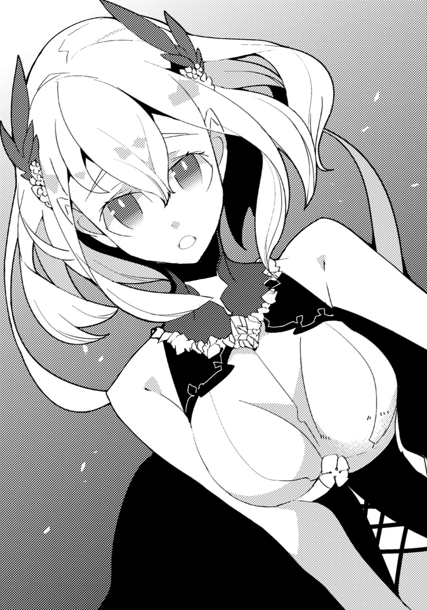
思い出した。全てを。
自分が今摑んでいるのは。
「――ただいま、リタ」
守るべき者の、存在だった。
最終章 想い、ただそれだけで。
数年、数十年、数百年の間。
頑強な壁に囲まれ、忌まわしい力に囚われながら、そいつはいた。
自由を奪われ、わずかに動くこそすらままならず、暗澹とした闇に包まれている。
「憎い......」
何もかも、全てが。
「憎い......」
世に存在する、ありとあらゆる生命が。
「憎い......憎い......憎い......ッ！」
腐らせ、朽ちさせ、滅ぼしたい。
「足りぬ......」
わずかとも、満足してはいなかった。
「足りぬのだ......力が......！」
取り返さなければならない。一日でも早く、復活を遂げなければ。
「......口惜しい......」
今少しのところで。後わずかなところで。
他のなにを於いても、あの少年だけは。
竜王の力を持つ人間だけは――必ず排除しなければならない。
だが、与えられた傷が、深過ぎた。
これを治すには、他の竜王の至宝を手に入れるしかない。
諦めてはならない。
絶望してはならない。
足搔いて足搔いて足搔き尽くす。
然る後――必ず、復讐するのだ。
「命じろ......契約者。全ての部下共に。至宝を奪えと」
濁った声で言った。己の前に蹲る、ローブを纏いし男に。
「――次はないぞ」
男がわずかに頭を下げた。
彼の気配が消えた後で、そいつは静かに呟く。
「憎い......」
何度も、何度も、繰り返し、繰り返し。
「憎い......憎い......憎い......」
数年、数十年、数百年の間――。
わだかまらせている、底知れぬ感情を。
「......憎い......！」
ただ、ただ、吐き出し続けていた。
いつでもない時。どこでもない場所。
フィルはあるものと対峙していた。
雄々しき体と金色の輝きを持った、神々しく、気高い存在。
ヴァースキアだった。
「お前、死んだんじゃないのか」
尋ねたこちらに対して、ヴァースキアはわずかに目を細める。
「正確に言うと違う」以前会った時のように頭に響くのではなく、人間同士のように口頭での会話だった。「我は肉体を失った。しかし魂は汝の心と合わさったのだ」
「さっぱり分からん。......見えないだけで、俺と一緒にいるということか？」
「あるいはそういうことかもしれぬ。人の概念では理解出来ぬことだ」
「どうして、今まで出てきてくれなかったんだ」
「我は汝に己の命を預けた。さすれば我のこの世に在る役目は終わったのだ」
難解な言い回しにフィルが眉を顰めると、ヴァースキアは小さく声を漏らす。笑ったのかもしれない。
「この世は身を持つ者――生きる者の世。気配すら稀薄に過ぎぬ我が出る訳にはいかぬのだ」
「......じゃあ、どうして俺と会うことにしたんだ？」
「少し計算違いが起こった故」
ヴァースキアは頭をもたげた。不思議だ、とフィルは思う。出会った時はあれほど威圧されたというのに、今は全くそんなことはない。まるで長い間連れ添った友であるように、あるいは兄弟であるかのように――近しさを感じていた。
「汝と我の心が完全に同調した時、想像を超える力を発揮した。これほどのものであるとは思っていなかった。......はっきりと断言しよう。このままでは危険だ」
「......そうかもしれないな」
フィルは頷く。覚えていた。ディオマトスを以てしても慄かせた、竜身融合の真の力。凄まじいものだった。
「思えば汝には何を話すこともなく苛酷な宿命を背負わせてしまったかもしれぬ。そこで改めて問いかけたいのだ」
ヴァースキアは厳かに言った。
「汝は自らの選択を、後悔してはいないか？」
「それは......」
答えようとして、フィルは躊躇う。その前に訊いておきたいことがあった。
「もし、している、と俺が答えたら、どうなるんだ？」
「我が魂を汝の体から解き放ち、別の者を探す。汝と我の心が定着しきっていない今であれば、それが出来よう」
「だけどいずれにしろ、誰か他の人が同じものを背負うことになるんじゃないのか」
「そうだ。しかし......今回のことは、緊急措置に等しいことだった。加えてあのような事態を引き起こすと知った以上、このままというわけにはいくまい」
真っ直ぐな竜の瞳が、こちらをじっと見つめてくる。
「他の誰かがやるとしても、フィル、汝がやらなければならないことではあるまい。よって今一度確かめているのだ。汝は、過ぎた力を、これからも望むか？」
「望むに決まってる」
即答だった。
「誰かが負わなきゃいけないことなら、リタを好きな俺がやるのが一番良い。そうだろう」
「......汝は清々しいほどに真っ直ぐだな」
ヴァースキアが感心したように零した。
「人は皆、汝のように迷いがないのか」
「そんなことは知らない。だが、こと、リタに関することなら俺はどんなことでもする」
「アムリタを好きだという、ただそれだけでか」
「ややこしい理屈がなければ、誰かの為に命を懸けちゃいけないのか？」
沈黙が降りる。だが、やがて、ヴァースキアが再び口を開いた。
「......そうか。汝がそう決めたのなら、もう、なにも言うまい」
「ああ。こっちからも色々と訊かせてくれ。お前はどういう存在で、あのディオマトスという奴は何者なんだ」
「我は――竜王。遥かな昔より、全ての竜を統治する任を負う者」
「......竜王」そういえば、力を継承する時や、ディオマトスもまたそんな呼び方をしていた。想像よりもずっと偉い存在だったらしい。
「ディオマトスは恐ろしき竜だ。今より随分と前――まだ汝ら人が現れるより前にこの世界に生まれた。腐敗を司る力を持ち、この世を滅ぼさんとしたのだ」
「どうしてだ？」
「あらゆるものを憎み、疎み、嫌悪する。それが奴の本能のようなものであるが故に」
そんな、負の感情だけに囚われた生き物がいるのだろうか。フィルには理解出来なかった。
「......ディオマトスは、お前を、相当に憎んでいるみたいだな」
「我だけではない。奴は我と竜賢神......我の忠実なる配下達を決して許しはしないだろう。我等が奴を永久に闇の中へと追放したのだ。特別な方法を以てな」
「特別な方法？ それが、リタと関係あるのか。だから彼女は妙な連中に狙われてるのか」
「......そうだ。アムリタは生まれついてより、特別な運命の下にある。苛酷な、と言い変えてもいいかもしれぬがな」
「一体、それは――」
続けようとしたところで、フィルは言葉を途切れさせた。
ヴァースキアの姿が、薄れ始めている。
「おい、待て。まだ聞きたいことは沢山ある！」
「時間だ。今の我は汝の魂に残されたわずかな断片のようなもの。意識に働きかけるのにも限界がある。......詳しいことは残る竜賢神に会えば、明らかになるだろう」
静寂に満ちた世界の中、ヴァースキアは黄金色の砂像のようにして、掠れていった。
「最後に、感謝する、フィル。フィル＝ジークス。今は支配しきれずとも、いずれ我が力は汝と完全に一つとなろう。そうなった時、汝は真の継承者となる」
完全に彼の姿が消え去る前、言葉だけが、残される。
「我は汝の求めるがまま――常に共にあろうぞ」
そして、フィルは独りになった。
......いや、違う。
胸に手を当てれば感じ取ることが出来た。
息づいている。
微かだが、確かに聞こえる魂の共鳴。
竜王は、己が胸の内で生きていた。
目を覚ました時、フィルはベッドの上にいた。
巣穴ではない。どこかの宿屋のようだった。
誰かと話していたような記憶があるものの、定かではない。
ぼやりとした頭のまま、身を起こそうとしたところで、傍にいる誰かの存在に気づいた。
鮮やかなまでの白銀の髪に、見覚えのある横顔。アムリタだった。
「リタ......」
呼びかけようとして、気づく。
彼女はこちらのベッドに突っ伏したまま目を閉じ、規則的な寝息を立てていた。
「おはようさん。本当、よく気絶する子ね、あなたは」
ふと声が聞こえて視線を傾けると、そこにはジラを始めとして、見知った面々がいる。
「気づいたらフィルがリタを抱きしめたまま動かなくなっているから、驚きましたよ。幸い、ディオマトスもいなくなっていましたから、近くの村まで運んできたんですが」
アンジェが近づいてくると、しゃがみ込み、アムリタの肩に手をかけた。
「で、お前をベッドに寝かせたら、リタが起きるまで様子を見るって言い張ってよ。いくら交代でやろうって言っても聞かねえんだもんな」
肩を竦めたクレスが、近くのベッドに腰掛ける。
「まあ、何にせよ、起きたのなら良かったよ。調子はどうだい？」
アイゼンに問われ、フィルは自分の体を見下ろした。両手を握って開けたり、体を左右に振ったりと確かめる。
「ええ。平気みたいです。痛みもありませんし」
「そう。なら、遠慮なくやっても大丈夫そうね」
「え？ なんですか？」
「――この、バカッ！」
頭に衝撃が走った。あまりの痛みにフィルは「いったっ！」と悲鳴を上げて、涙目になる。
「ジ、ジラさん!? なにするんですか！」
「なにするんですか、ですって？ それはこっちの台詞よ」
固めた拳骨をこちらのつむじにぐりぐりとねじ込んできながら、ジラが不敵な笑みを浮かべた。
「アイゼンから話は全部聞いたわよ。あなた、危ないと知ってて大きな力を使ったんですってね？」
「げっ......いや、そうなんですが......あの時はその......」
「あの時はー？ そのー？」
「皆、危なかったということで......」
「からのー？」
「俺以外戦えそうになかったので......それで......仕方なく......」
「無茶しましたっていうわけ？」
「――はい！」
「よしもう一発！」
ごいんっ、という鈍い音が、脳内で響いた。
「ぎゃあああああああっ！」
あまりの痛みにのたうち回る。
「あなたの気持ちは分かるけどね。たまたま上手くいったからいいものの、大変なことになってたかもしれないのよ。分かってるの!?」
「......は、はい」
「自分が出来ることと出来ないことを見極めて、瀬戸際までその範囲を考えなさい。偶然に頼るようでは、仕事人としてはまだまだよ！」
眉間に深い皺を寄せたジラが、ずい、と顔を近づけてくる。
「いや、あの......」
「わ・か・っ・た・の!?」
「......はい」
逆らえるわけもなかった。
「ははは。ジラの本気の説教、久しぶりに聞いたなあ」
アイゼンが吞気に笑う。
「オレ、前に一回喰らったんっすよ。あの時は悪夢にうなされましたよ」
クレスが腕を組んで訳知り顔で頷くと、アンジェが額に手を当てた。
「......私もそうですね。ジラさんの顔が大きな壁みたいに迫ってくるんです。怒号とお酒の匂いがぷんぷんして絶叫しながら起きました」
「あ、オレも全く同じやつだわそれ。いやぁ、あれはなまじの厄竜よりこええよ」
「しばらくジラさん見る度にぞっとして話が出来ませんでしたよ」
「思うに姐さん、その気になったらあの迫力だけで竜を殺せるんじゃないかって思うぞ」
「フフ、確かにそうですね。クレスもたまには面白いことを言います」
会話をしていた二人はふとそこで、背後に立つ者の存在を感じ取って、体を竦ませた。
「余計な！」クレスの頭に一発。「ことを！」アンジェの頭に一発。「言うんじゃないのっ!!」最後に、二人同時に一発拳骨を落として、ジラが鼻を鳴らした。
クレストアンジェは揃って蹲り、呻き声を漏らす。
「だが......本当にそうだな。気をつけないと」
決意を込めて、フィルは呟いた。
「でも......どうしてオレは元の自分に戻ってこれたんでしょう」
顔を上げて、尋ねると、アイゼンが肩を竦める。
「リタのおかげじゃない？」
言われて、そういえば、とアイゼンから聞いたことを思い出した。
こちらの世界に留まりたいという強い想いがあれば、理性を取り戻せる――と。
「そうか......。ありがとう、リタ」
傍らで眠っているアムリタに、フィルは笑いかけた。
「......ところで、宝珠はどうなったんですか？ 取り返せました？」
気になったことを尋ねてみると、全員が顔を見合わせる。
「......大丈夫よ。ここにあるわ」
答えたのはアムリタだった。彼女は目を擦りながら体を起こし、懐に手を入れると、桃色をした球を取り出す。
「フィルのおかげで手に入れることが出来たわ。ありがとう」
「そっか......良かった。どうにか二つ目か。......前のより少し大きくないか？」
「宝珠は、互いに触れると溶け合って一つになるの。だからこれは、一つ目と二つ目、両方が合わさったものよ」
「なるほど。竜の至宝ってすごいんだな」
思えば魂同士をくっつけ合わせることすら可能なのだから、その程度は容易いことなのかもしれない。
「......それよりフィル、大丈夫なの？ なんともない？」
こちらを気遣うアムリタに、「問題ない」と微笑みかけていると、ようやく拳骨の痛みから復活したクレスが顔を顰めながら立ち上がった。
「でもよ、宝珠のやつ、全然光らなくなったんだよな。三つ目を探しに行かなきゃならないのにさ」
「え、そうなのか。......何かあったのか？」
フィルがアムリタに問いかけると、彼女は首を横に振る。
「宝珠同士が完全に一体化するのには少し時間がかかるの。終わればまた道を示してくれるはずよ」
そういうことか、とフィルは胸を撫で下ろした。先はまだまだ長いのに、こんなところで不測の事態に見舞われたのではたまったものではない。
と、そこで、
「......さてと。フィルも無事に起きたことだし。そろそろ巣穴に帰ろうか」
アイゼンが全員に声をかけると、ジラが「ええー」と不満げに言った。
「今日くらい泊まっていかない？ この村、葡萄酒が特産でさ。味見させてもらったけど、渋みがなくていけるのよ」
「また飲む気ですか。そしてまた脱ぐ気なんですか」
アンジェが心底から嫌そうな顔をする。
「何の話よ。脱いだことなんてないわよ、あたし」
「そうやって忘れるところがまた腹立たしいんです。ジラさん、何回、人前で裸になったと思ってるんですか。そのうち、公然猥褻罪で投獄されますよ」
「またまた。あたしの酒を禁じようとして適当言ってるわね。それに大体、たとえそうだとしても、この均整のとれた体をお披露目してるんだから賞賛こそされ、捕まることなんてあるわけないじゃない」
「いや何回も堂々と見せられると正直飽きてくるっすよ」
「何回も見てるんじゃないの！」
横槍を入れたクレスはジラに頰をつねられ、「ふへへあはは」と奇妙な声を上げた。
「でも、もうすぐ日も暮れることだし、少しくらい休んでいってもいいかもしれないねえ」
アイゼンがぼやりとした声で決めると、ジラが飛び上がった。
「やった、さすがアイゼン！」
「でもジラはお酒吞んじゃダメだよー」
「さっさと帰るわよ、あなた達。一秒だって無駄に出来ないわ」
「姐さん、変わり身が分かり易いくらい早いっす！」
突っ込んだクレスに「酒がないなら生きる意味がないのよ！」とダメ人間そのものであるかのような言動を吐いて、ジラは部屋を出ていく。
アンジェやクレスもまた、やれやれと言いながら去っていき、最後に、
「じゃあ、フィル、起き上がれそうなら下の酒場まで来てね。あ、それから......」
アイゼンが近寄ってくると、こちらの肩に手を乗せてきた。
「お疲れ様。無茶はあったけど、竜伐者としての初仕事、よくやったよと思うよ」
「......団長......。あ、ありがとうございます！」
「うん。なんていうか、懐かしい感じがしたなぁ」
「......懐かしい、ですか？ どういうことですか？」
「え？ あはは。なんでもないよー」
と言うと、アイゼンは気になる言葉だけを残し、手を振っていなくなってしまった。
自然、場には、フィルとアムリタだけが残される。
なんとなく会話が途切れてしまい、フィルはアムリタへと視線をやった。
すると、そこで、
「......フィル、ごめんなさい」
突然、アムリタが顔を伏せたままで頭を下げた。
「やっぱり、またあなたを危険な目に遭わせてしまったわ。ディオマトスの力は予想以上だった。もしかしたら、また今回のようなことが......起こってしまうかもしれない」
「......そうだな」
「今回は上手く止めることが出来たけど、同じ手が通じるとは限らないわ」
「ああ。そうかもしれない」
「竜の力を継承するというのは、私が思っていたよりずっと恐ろしいことなのだと思う」
「だな。俺もそう思う」
「......だから......」
「......だから？」
少しの間、口ごもる。
だが、アムリタは何かを振り切るようにして顔を上げ、こちらに訴えかけてきた。
「だから、フィル。あなたが望むのなら、今からでも、私は――」
しかし、彼女の声は、最中で途切れる。
フィルが体に触れ、そのまま抱き寄せたからだ。
「フィル......？」
「ヴァースキアに、会った」
「......え？」
「ヴァースキアに会った。そこで応えたんだ。役目を続けるとな」
フィルはアムリタに向かって言った。
「俺はこれからもお前を守る。その為ならあらゆる努力をする。だからもう心配はしなくていい」
決意を込めて、はっきりと。
「最初と同じだ。俺はお前が好きだ。それで理由は十分。だから――これからも、傍にいてくれ」
沈黙。
静寂に満ちた空間は、まるで、自分とアムリタ二人だけになってしまったようだった。
そして――声が。
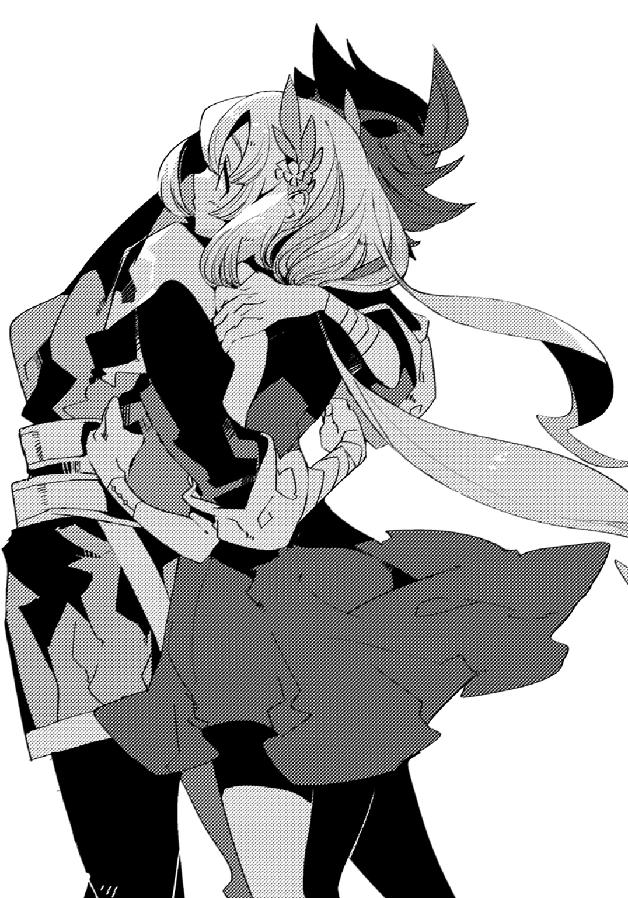
あまりにも微かで、注意しなければ聞こえぬほどの小さなものだけど。
確かな、声が。
「ええ」
こちらの耳元を、くすぐった。
「――ずっと一緒にいるわ、フィル」
竜であろうと、人であろうと、変わらない。
アムリタの温かさを、フィルは抱き締めた手で、確かに感じていた。
ｆｉｎ
あ と が き
竜、とは不思議な生き物だと思います。
彼等は漫画、ゲーム、小説、映画――様々な媒体においておなじみで、いろんな習性や姿が描写されています。
この世に存在していない生き物だというのに、です。
一体、竜の何がそこまで人を惹きつけるのでしょうか。
雄々しさ、気高さ、力強さ、色々と理由はあると思いますが、ぼくが彼等を好きな理由はたった一つです。
諸々ひっくるめて、格好良いから。
そんな単純な想いのまま、いつか竜が沢山出てくるお話を書いてみたいと思いつつ、なかなか実行に移せないまま、はや幾年。
ついに機会を頂き、こうして「無双竜撃の継承者」というタイトルで本を出すことが出来ました。
加えて「竜はぼくの好きなものだ。じゃあ、いっそ他の好きなものも混ぜてやろう」などというたくらみによって、「ボーイミーツガール」と「刀」もお話に投入されています。
要はこれでもかというほど趣味丸出しなわけですが、読んだ方々にも楽しんで頂けていますと幸いです。
というわけでお久し振りな方はお久し振り、初めましての方は初めまして、空埜一樹です。
普段はＨＪ文庫というレーベルで何やら色々やっている身ですが、ご縁あって、この度、ダッシュエックス文庫さんから二度目の作品をお披露目しました。
言うは易く行うは難しと申しますが、企画が通って実際に筆をとったところ中々に苦戦しまして、大丈夫かなと思いつつ、なんとか形になってほっとしております。
しかし、竜とは描写が難しいものです。
なにせ前述しましたが、この世界に彼等はいません。
動物園に行って、ライオンやゴリラや虎を見ることは出来ても、「竜」という項目のある檻はないわけです（あったら多分、入り浸りになるとは思いますが）。
なので、既存の作品で見たものを踏襲しつつ、色々と混ぜたりして、独自のイメージを作り出さなければならないので、非常に悩みつつ執筆を進めていました。
中でも特に考えたのが、「巨大感をどう表現しようか」ということです。
竜だけではなく、見上げるほどに大きい生き物なんていうのは、そうそう日常にいるわけではありません。まして檻越しではなく、目の前にいるのですから。
ですが、有難いことにこの世界にはそういったもののヒントにうってつけの題材があります。
漆黒の巨大生物や、光の巨人と戦う宇宙人や生命体、あるいは火を吐く亀――そう、「怪獣」と呼ばれるもの達です。
画面一杯に、間近に迫った巨大な生き物がどんと現れるわけですから、参考にならないわけがありません。
偶然にもぼくは二年ほど前からこの「怪獣」にはまりにはまっていて、毎日のように観ていたので、どうにかこうにかこの問題をクリアすることが出来ました。
世の中、なにが役に立つか分からないものですね！
まあ、そのせいで怪獣関係のグッズに支払うお金が年々増えてきた気もしますが、それは、それで、あの、必要なものなんで！ ほんと！ やっぱり身近に置いておきたいし！
......閑話休題。
前作「逆道の覇王戦記」から一年ばかりが経過したわけですが......。
――というか、今書いていて「い、一年！ いちねん!?」とか思わずカレンダーを二度見してしまったわけですが。
最近、時の流れが本気で早過ぎると思います。気分的にはまだ四月くらいの気分です。
とまあ、それはともかく、ぼくはと言えば特に身辺が変わることはなく、毎度毎度、ちょこちょこと書いては出して、書いては出しての日々を送っています。
ただ、ここ最近、とある海が舞台のアーケードゲームにはまりにはまっていまして、百円玉が本気で湯水のように消費されていっているので、なんとかしなければと思っています。
思っていますと言っていれば、なんとかなるんじゃないかと思っている派です。
しかしまさか、この歳でゲームセンター通いをすることになるとは思っていませんでした。ただ、今のゲームセンターというのは随分とお洒落な感じになっていて、女性も多いですし、なんだか安心できますね。
もちろん、地域にもよるのでしょうが、ぼくが小学生くらいの頃、ゲーセン（ゲームセンターの略）といえば不良が沢山いて、無防備に行けばそれこそ狼の群れに飛び込んだ兎レベルの扱いを受けるイメージがあったように思います。
友達が格闘ゲームをしていて、勝利すると、向こうから台をガンガン蹴られたことなど何度もありましたし、相手が立ち上がって、リアルファイトに発展しかけたこともありました。（友達がそれでも淡々とゲームをしていたので、そっちの方が怖かったのですが）
それでもゲーセンで出会った知り合いなんかもいて、楽しかったですね。
ちなみにぼくのゲームの腕は下から数えた方が早いくらいで、格闘ゲームに至ってはどうしても必殺技が出なくてずっと虚空に向かってパンチを打ち続けていたという虚しい実績もあるくらいなので、上手い人を見ている方が好きです。
本当に上手い人というのは、ひょっとしてこの人、サイボーグなんじゃないかと思うくらいに機敏な動きをするので、すごいです。
せっかくゲーセンに行っているので、そういった方も探してみたいと思います。
と、なにやらなんの話か分からなくなってきたところで、謝辞に移ります。
担当のＴ様。色々とアドバイスを下さって、ありがとうございます。一人で書いているとどうしても見えないところも多いので、客観的な視点というのは本当に助かります。
イラストレーターのしばの番茶様。素晴らしいイラストの数々、本当にありがとうございます。キャラの、キャラらしさというか、ぼくの中にしかなく、他の人には分からないだろうと思われる部分までしっかりと描かれている上、そういうやり方があったかという新しさまであって、毎回、見るのが楽しみでした。
様々な方面でメッセージを下さる方々。ありがとうございます。自分が好きなものを書いて、誰かに好きだと言って頂けるのは、本当にうれしいですし、励みになります。
そしてなにより、この本を読んで頂いた全ての方へ。
最大限の、感謝を。
それでは、また、ご縁があったらお会いしましょう。
九月 空埜一樹 ＢＧＭ【無し】
ＨＰ『空ノページ』 http://www.eonet.ne.jp/~tabibito5/
著者紹介
空埜一樹 そらの かずき
ＨＪ文庫にてデビュー。その後、色々書いて今に至る。
ＤＸ文庫では二度目まして。
今回は刀と竜と少年少女という、ぼくの趣味全開で参ります。
楽しんで頂ければ幸いです。
illustration
しばの番茶 しばの ばんちゃ
爬虫類大好きです。
ダッシュエックス文庫DIGITAL
無双竜撃の継承者
著者 空埜一樹
© KAZUKI SORANO 2016
２０１６年11月30日発行
この電子書籍は、ダッシュエックス文庫「無双竜撃の継承者」
２０１６年10月30日発行の第１刷を底本としています。
発行者 鈴木晴彦
発行所 株式会社 集英社
〒１０１－８０５０
東京都千代田区一ツ橋２丁目５番10号
０３－３２３０－６０８０（読者係）
制作所 株式会社ＩＣＥ
本作品の全部また一部を無断で複製、転載、改竄、インターネット上に掲載すること、および有償無償に関わらず、本データを第三者に譲渡することを禁じます。なお個人利用の目的であっても、コピーガードを解除しての複製は、法律で禁じられています。